Matrix — G0, révision 2
| Référence documentaire | MTX-G0-R2 |
| Série | Matrix — G0, révision 2 |
| Édition | 13/11/2026 |
| État documentaire | projet en cours de refonte — maquette pilote V1, non validé |
| État décrit | EB-2026-11-11 |
Matrix est la plateforme quotidienne du marin de la Marine nationale : chacun y retrouve ses tâches, ses quarts et services, ses maintenances, ses formations et ses échanges au même endroit, sur le réseau du bord, sans Internet. La gestion de maintenance n'en est qu'un module. Matrix complète les outils du soutien (SSF) sans les remplacer.
Les étiquettes sont celles du dossier : 🟢 existe et vérifié dans l'état B du 11/11/2026 ; 🔵 cible validée par le PO, pas développée ; 🟣 proposition non arbitrée ; ◯ non vérifié. « Écart » renvoie au registre des écarts et décisions (RE §1).
| Module | Disponible 🟢 | Manque, à décider ou à confirmer |
|---|---|---|
| Organisation et rôles | Hiérarchie bâtiment → service → secteur → section ; neuf rôles ; double équipage et relève | 🔵 Suppléance générale (B1, B2) ; écarts de droits A1 et A4 |
| Accueil et pilotage | Page « Aujourd'hui », tableaux de bord par niveau, passation | Écart A14 (confidentialité de la synthèse de passation) |
| Calendrier | Calendrier central, export personnel | — |
| Quarts, services, feuille de service | Listes, publication, échanges de tours à quai, feuille de service | 🔵 Circuit d'échange décidé par le COMAEQ (A2) ; écarts A3, A12 ; points B1, B3, B4, B5 |
| Communication | Discussions attachées aux objets, annonces à accuser, notifications | — |
| Tâches, demandes, programme, postes | Tâches avec compte rendu, blocage, difficultés signalées, programme, postes | 🔵 Trois niveaux de priorité (A13) ; point B6 |
| Matériel et installations | Fiches, catalogue, plan du navire, relevés, validation des fiches | 🔵 Circuit d'approbation des transferts (A18) |
| Maintenance, anomalies, tickets | Échéances générées, exécution guidée, anomalie, ticket correctif en sept étapes | Règle de sortie de « En validation » à décider (A20, 🟣 D2) ; 🔵 périodicités nommées, outillage, durée (A21) ; message de fin inexact pour une installation (NE-07) |
| Logistique | Stock de pièces, demandes de pièces | — |
| Formations | Formations, qualifications, demandes de places | 🔵 Dossier vivant de demande de places (A19) |
| Documentation et RETEX | Versions applicables, RETEX en une étape | 🔵 Circuit hiérarchique et diffusion « flotte » (A15, A16 ; 🟣 D3) |
| Préparation à l'appareillage | Prêt à appareiller, session ouverte, signature | 🔵 Fiche de référence et circuit COMANAV (A17 ; 🟣 D4) |
| Sujet | Nature | Voir |
|---|---|---|
| Règle de sortie de « En validation » et alerte de retard | 🟣 proposition D2 | Fiche Maintenance |
| Ticket pour une installation non conforme | 🟣 proposition D1 | Fiche Maintenance |
| Transmission d'un RETEX à un organisme | 🟣 proposition D3 | Fiche Documentation et RETEX |
| Autorité de classification « critique » d'un contrôle d'appareillage | 🟣 proposition D4 | Fiche Préparation à l'appareillage |
| Procédures de suppléance, ordre des grades, conservation des journaux | Points à confirmer B1 à B8 | Registre |
| Sauvegarde, restauration, supervision | 🟣 proposition D7 et écart A24 | Registre |
Une proposition 🟣 n'est pas une décision : elle devient décision seulement sur mention expresse du PO.
Ce document décrit Matrix tel qu'il existe dans le code à un instant précis : l'état B, version de référence du 11/11/2026. C'est une version de développement : elle comprend la version V1.1 (interface « Naval Premium », correctifs de recette) et quatre lots de sécurisation (verrou des commandes de démonstration, configuration de production, archivage effectif des unités, suppression sûre des unités). L'état B n'est pas fusionné dans la branche de référence : tout ce que ce document décrit comme « actuel » est ce que contient cette version, qui n'est ni déployée ni validée.
L'identifiant technique de cette version (branche, empreinte) figure uniquement dans le dossier technique à accès restreint (DT §1).
| Lot livré dans l'état B | Objet | Effet |
|---|---|---|
| L01 | Verrou des commandes de démonstration | Les commandes qui créent des comptes fictifs ne s'exécutent que sur une base dédiée, marquée comme telle |
| L05 | Configuration de production | Refus de démarrer en production avec une clé secrète ou un mot de passe de base d'exemple |
| L02 | Archivage effectif des unités | Archiver une unité occupée est refusé ; aucune nouvelle affectation vers une unité archivée |
| L03 | Suppression sûre des unités | Une unité encore référencée ne peut plus être supprimée |
| Étiquette | Signification | Preuve attendue |
|---|---|---|
| 🟢 Actuel | Ce comportement existe dans le code de l'état B | Vérifié dans le code, par un test ou rejoué sur l'instance de démonstration |
| 🔵 Cible | Règle validée par le Product Owner, non développée ou partielle. Jamais rédigée au présent comme si elle fonctionnait | Identifiant de décision et, s'il existe, lot |
| 🟣 Proposition | Idée ou règle proposée, à valider par le PO : ce n'est pas une décision. Jamais rédigée au présent | Mention « à valider par le PO » et, s'il existe, rattachement à un lot |
| ◯ Non vérifié | Information issue d'une seule source ou point non rejoué | La limite est dite en clair ; recensée dans les annexes consultables |
Chaque fiche de module est construite de la même manière : à quoi sert le module ; qui fait quoi ; écran de référence ; règles ; circuit ; fonctionnement actuel et cible ; limites et écarts ; décisions du PO. Ce document n'est pas un audit : une limite connue apparaît comme périmètre actuel d'une fonction, et le registre central des écarts et décisions (RE §1) porte le détail de chaque écart.
Le Guide du marin 2023 n'a jamais été disponible : il n'est source d'aucune règle.
Chaque fiche renvoie à ses sources. Les références précises au code sont réservées au dossier technique à accès restreint ; les inventaires chiffrés (nombre de modèles, de routes, de tâches planifiées…) sont générés depuis le code, jamais saisis à la main, et un contrôle automatique vérifie que le même chiffre figure dans tous les documents.
| Document | Peut contenir | Ne contient jamais |
|---|---|---|
| Guide utilisateur et référentiel fonctionnel | Usage, règles métier, circuits, parcours, droits en clair, glossaire, cible, historique, schémas explicatifs | Référence de fichier et de ligne, nom de variable ou de secret, commande d'exploitation, adresse, port, nom de branche, empreinte de version |
| Dossier technique, annexes consultables, registre | Architecture, données, sécurité, interface de programmation, exploitation, droits par clé, écarts détaillés | — (accès restreint) |
⚠ Cette séparation n'est pas une autorisation de diffusion. La mention « DOCUMENT PROVISOIRE — DIFFUSION RESTREINTE » est une précaution documentaire, non une classification officielle : la classification et la liste des destinataires restent à valider par le PO et, pour les documents techniques, avec les SIC.
Le glossaire complet figure en fin de ce document (RF §23). Quatre distinctions à garder en tête dès maintenant :
| Date | Contenu |
|---|---|
| 11/11/2026 | Édition G0 : chapitres 1 à 26, annexes A à H, schémas S01 à S42, version PDF |
| 13/11/2026 | Révision 2 : refonte en cinq livrables (guide utilisateur, référentiel fonctionnel, dossier technique, annexes consultables, registre) ; maquette pilote « Maintenance » |
| 16/11/2026 | Révision 2, rédaction complète des sources ; captures refaites sur une instance de démonstration isolée |
Matrix est une application destinée au marin de la Marine nationale, pour sa journée de travail à bord comme à quai. Elle vise à réunir en un seul endroit ce qui est aujourd'hui dispersé : le planning, les quarts et les services, les tâches, la maintenance, les consignes, les messages, les formations. L'ambition posée dans le cahier des charges est simple : « Matrix doit devenir l'application que les marins ouvrent chaque jour ».
La maintenance (GMAO) n'est qu'un module parmi d'autres. Matrix n'est pas une GMAO à laquelle on aurait ajouté des fonctions : il est pensé d'abord pour répondre aux questions que se pose le marin en arrivant à bord.
| La question du marin | Où Matrix répond |
|---|---|
| Où dois-je être ? | le calendrier, les quarts, les services, les formations |
| Que dois-je faire ? | les tâches, la maintenance |
| Que dois-je savoir ? | les annonces, la documentation, les discussions |
| Avec qui travaille-je ? | la composition des équipes, les chefs de liste, la relève |
| Que dois-je signaler ? | les anomalies, les difficultés, les retours d'expérience |
Tout vient du même système : le marin voit sa journée, le chef de section voit sa section, le chef de service son service, l'état-major le bâtiment. Chacun voit ce qui relève de son périmètre, pas davantage.
Ces limites sont des décisions du Product Owner (PO), reprises telles quelles :
Dix principes figurent dans les règles du projet (CLAUDE.md) ; le cahier des charges en retient sept « non négociables ». Les voici regroupés par ce qu'ils changent concrètement.
Pour le marin
Pour l'organisation
Pour la confiance
| Principe | Où on le voit dans l'état B | Chapitre |
|---|---|---|
| Configuration plutôt que code | 35 actions dont le niveau de rôle minimal se règle par bâtiment ; 14 modules activables ; double équipage activable | 4, 5 |
| Administration distribuée | Écran Réglages (onglets Sécurité, Modules, Équipage, Journal…) ; l'administrateur d'unité règle son bâtiment | 5 |
| Proposer, valider, publier | Relève d'équipage (proposée par un commandant, validée par l'autre équipage) ; listes et feuilles de service | 4, 8 |
| Traçabilité | Journal d'audit alimenté par une vingtaine de modules du code | 22 |
| Internet n'existe pas | Bibliothèques Bootstrap, HTMX, bibliothèque de graphiques, FullCalendar servies localement | 18 |
| Ne rien supprimer en silence | Archivage des unités, suppression refusée tant que quelque chose les référence | 4 |
🔵 Le cahier des charges décrit un « système d'exploitation numérique du bord », où le marin dialogue avec ses collègues et la terre, suit ses anomalies jusqu'à leur résolution, consulte les procédures et prépare l'appareillage dans le même outil. Plusieurs briques sont validées mais pas encore développées : suppléance explicite, circuit de validation des RETEX, durée estimée des tâches, mutation de personnel, échanges avec la terre par discussion contextuelle, synchronisation entre le bord et la terre. Elles sont rassemblées au RF §21, avec leur statut.
Le PO a aussi fixé une directive de méthode (31/10/2026) : Matrix doit être pensé avec une logique de marin militaire, c'est-à-dire :
Sources (état B)., registres des actions et des modules du code de l'état B (références de code dans le dossier technique à accès restreint.). Notion : « Cahier des charges » (10/10/2026), « 13 — Décisions Matrix et gouvernance fonctionnelle » (directive du 31/10/2026).
Matrix est composé de 22 ensembles de code, appelés paquets : 21 applications fonctionnelles et un noyau commun (matrix.core) qui porte les règles partagées (rôles, périmètres, modules, sécurité). Le schéma ci-dessous les regroupe par grande fonction ; le menu de l'application, lui, est organisé en sept groupes de navigation (la section « Ce que voit le marin : le menu »).
Carte des modules (remplacé par un tableau)
| Élément | Contenu |
|---|---|
PERS |
Personnes et organisation : accounts, org |
VIE |
Vie quotidienne : dashboard, calendar_app, quarts, absences, taches, demandes, programme, postes |
COM |
Communication : threads, annonces, notifications |
TECH |
Technique et logistique : assets, maintenance, logistics, rondes (retiré) |
SAV |
Connaissance : training, documentation, retex |
PIL |
Pilotage : reports |
CORE |
matrix.core : rôles, périmètres, modules, audit, sécurité |
| De | Condition ou passage | Vers |
|---|---|---|
| Personnes et organisation : accounts, org | — | matrix.core : rôles, périmètres, modules, audit, sécurité |
| Vie quotidienne : dashboard, calendar_app, quarts, absences, taches, demandes, programme, postes | — | matrix.core : rôles, périmètres, modules, audit, sécurité |
| Communication : threads, annonces, notifications | — | matrix.core : rôles, périmètres, modules, audit, sécurité |
| Technique et logistique : assets, maintenance, logistics, rondes (retiré) | — | matrix.core : rôles, périmètres, modules, audit, sécurité |
| Connaissance : training, documentation, retex | — | matrix.core : rôles, périmètres, modules, audit, sécurité |
| Pilotage : reports | — | matrix.core : rôles, périmètres, modules, audit, sécurité |
| Domaine | Ce qu'il fait | Paquets | Chapitre |
|---|---|---|---|
| Personnes et organisation | Comptes, rôles, grades, bâtiments, services, secteurs, sections, double équipage | accounts, org |
4, 5 |
| Accueil et pilotage | Page « Aujourd'hui », tableaux de bord par niveau, bilans et exports | dashboard, reports |
6 |
| Calendrier | Calendrier central du marin et du bâtiment | calendar_app |
7 |
| Quarts et services | Listes de quarts et de gardes, feuille de service, échanges, absences | quarts, absences |
8 |
| Communication | Discussions attachées aux objets, annonces, notifications, recherche | threads, annonces, notifications |
9 |
| Tâches et vie du bâtiment | Tâches, difficultés signalées, programme du bâtiment, postes du bord | taches, demandes, programme, postes |
10 |
| Matériel et maintenance | Matériels, installations, plans de maintenance, anomalies, tickets, stocks | assets, maintenance, logistics |
11, 12, 13 |
| Connaissance | Formations et qualifications, documentation, retours d'expérience | training, documentation, retex |
14, 15 |
| Appareillage | Préparation et signature du prêt à appareiller | dashboard |
16 |
| Rondes de contrôle | Module retiré fonctionnellement ; code conservé | rondes |
12 |
| Noyau | Rôles, périmètres, seuils, modules activables, double équipage, audit, sécurité | matrix.core |
5, 18, 22 |
Mesures de l'état B (inventaire généré, couverture/) : 135 modèles de données, 721 routes (pages et points d'API), 20 tâches planifiées, 18 commandes de gestion.
Le menu latéral est le même pour tous dans sa structure, mais chacun ne voit que ce qu'il a le droit d'ouvrir et que le bâtiment a activé. Sept groupes, dont seul le premier est ouvert par défaut :
| Groupe | Entrées |
|---|---|
| Mon quotidien | Aujourd'hui, Calendrier |
| Équipements | Matériels, Installations, Catalogue, Plan du navire |
| Maintenance | Maintenance, Tickets correctifs, Anomalies, Logistique |
| Activité | Tâches, Annonces, Programme du bâtiment, Difficultés signalées, Quarts et tours de service, Feuille de service, Absences |
| Compétences | Formations, Postes du bord, Documentation, RETEX |
| Supervision | Prêt à appareiller, Flotte, Vue COMANAV, Spécialités, Classes de navire |
| Administration | Annuaire, Paramètres |
Deux mécanismes décident de ce qui apparaît (détaillés au RF §6) :
Matrix distingue cinq notions qu'il ne faut pas confondre : le grade (rang de la personne), la fonction exercée (ce qu'elle fait réellement : chef de liste, BSC, COMAEQ…), le périmètre (où elle agit : sa section, son secteur, son service, son bâtiment), l'habilitation (ce qu'on l'autorise à faire dans Matrix) et le brevet (ce qu'elle sait faire). Les droits viennent de la fonction et du périmètre, jamais du seul grade.
| Acteur | Ce qu'il fait dans Matrix |
|---|---|
| Équipier / marin | Consulte sa journée, exécute ses tâches, déclare un blocage, signale une anomalie, demande un échange de tour |
| Chef de section | Attribue les tâches de sa section, suit son équipe |
| Chef de secteur | Supervise le secteur, attribue et réaffecte, décide des suites des anomalies |
| Chef de service | Supervise son service, approuve les circuits de son niveau |
| Commandant adjoint (COMAEQ, COMOPS, COMANAV, COMAVIA) | Compétent pour les services qui lui sont rattachés ; le COMAEQ vise la feuille de service ; le COMANAV signe le prêt à appareiller |
| Commandant, commandant en second | Vision globale du bâtiment ; le second supplée le commandant pour la relève |
| BSC | Prépare et imprime la feuille de service |
| Chef de liste | Prépare les listes de quarts et de gardes |
| Administrateur d'unité / administrateur général | Administre la plateforme et le bâtiment (comptes, structure, réglages) |
| Équipage à terre (B) | Consulte son bâtiment en lecture seule ; tient sa propre feuille de service |
| Soutien à terre (responsable de classe ≈ IRB, responsable de spécialité ≈ ALFAN Exploitation) | Consulte les bâtiments qu'il suit et commente ; n'agit que dans les circuits prévus |
🔵 Le rôle de suppléant (exercer temporairement une fonction d'un autre) est validé en principe mais non développé : aujourd'hui, seul le chef de liste est suppléable (RF §21).
🟢 Les écrans de ces parcours ont été rejoués sur l'instance de démonstration le 16/11/2026 (guide utilisateur) ; ◯ l'enchaînement complet d'une journée n'a pas été rejoué de bout en bout. Les captures viendront avec la recette navigateur (RF §20). Les données de l'exemple sont fictives.
Matrix n'est pas une juxtaposition de silos : une donnée créée dans un module alimente les autres. Quelques enchaînements concrets (détail au DT §20) :
ResponsableClasseNavire et ResponsableSpecialite.Sources (état B). Code de l'état B : navigation, modules activables, page « Aujourd'hui », bâtiments suivis à terre, soutien à terre, chaîne de contrôle des requêtes (références de code dans le dossier technique à accès restreint.). Notion : « Organigramme et rôles », « 13 — Décisions Matrix et gouvernance fonctionnelle ».
Presque tout dans Matrix dépend de l'endroit où se trouve une personne dans l'organisation : ses tâches, ce qu'elle voit, ce qu'elle peut modifier, les listes de quart auxquelles elle appartient. L'organisation est donc le socle commun : elle décide du périmètre de chacun (RF §6).
Matrix modélise une unité en quatre niveaux emboîtés.
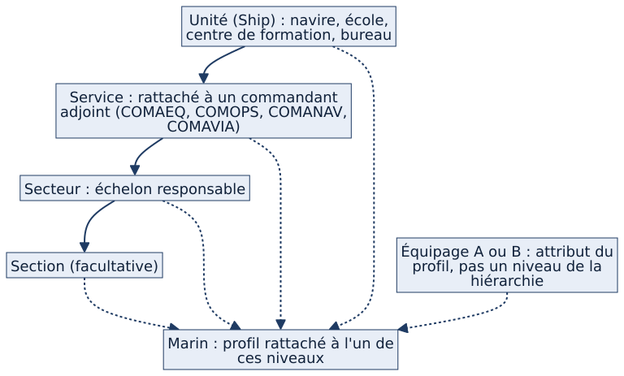
| Niveau | Ce que c'est | À retenir |
|---|---|---|
| Unité (bâtiment) | Le navire, mais aussi une école, un centre de formation ou un bureau (type d'unité) | Porte la classe de navire, le fuseau horaire de référence, le double équipage |
| Service | Un grand service du bord | Peut être rattaché à un commandant adjoint : COMAEQ, COMOPS, COMANAV ou COMAVIA |
| Secteur | Subdivision d'un service | C'est l'échelon responsable quand il n'y a pas de section |
| Section | Subdivision d'un secteur | Facultative |
Quelques précisions importantes :
Certains bâtiments (frégates multi-missions, patrouilleurs, bâtiments de soutien) fonctionnent avec deux équipages, désignés par un code libre, en pratique « A » et « B ». Un seul est à bord à un instant donné.
Principes retenus (décision du PO) :
La lecture seule en pratique. Le marin de l'équipage à terre peut continuer à consulter, à modifier ses réglages personnels (thème, préférences, heure de notification), à commenter les tâches, et à gérer sa propre feuille de service ; les pages des demandes et des annonces restent ouvertes en écriture (chaque page revérifie les droits de la personne). Toute autre écriture est refusée avec le message : « Lecture seule : votre équipage est à terre, cette action est réservée à l'équipage à bord. » La règle est un refus par défaut : une nouvelle page d'écriture est protégée sans qu'il y ait quoi que ce soit à déclarer.
La relève est le changement de l'équipage à bord. Elle suit le principe « proposer, valider, publier » : un équipage ne change pas l'autre de sa propre autorité.
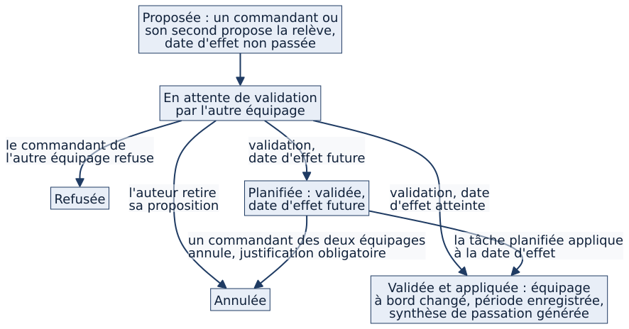
Tout est écrit dans le journal d'audit : proposition, validation, refus, annulation, application, secours.
🔵 Décision plus ancienne, non retenue. D'anciennes notes parlaient d'« organisations en miroir » et d'un modèle d'équipage dédié ; ces éléments ont été retirés et ne sont pas des consignes : la mise en œuvre retenue est « codes A/B, relève validée, lecture seule à terre ». Toute reprise exigerait une nouvelle décision du PO.
Une unité (bâtiment, service, secteur, section) a trois destins possibles, à connaître pour comprendre ce qui est « perdu » ou non.
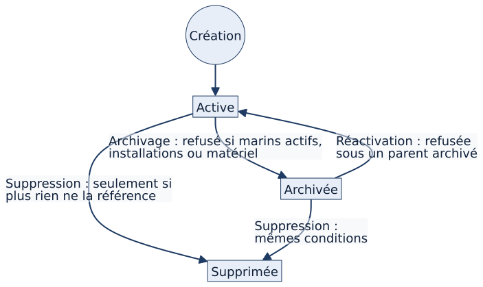
Archiver (lot L02) — la voie normale pour retirer une unité de la vie courante :
Supprimer (lot L03) — réservé à l'unité vide :
Pourquoi ? Un marin, un matériel ou une liste rattachés à une unité ne doivent pas disparaître, ni se retrouver sans rattachement (donc sans périmètre), parce qu'on a supprimé l'unité. C'est le principe « jamais d'écrasement silencieux ».
Chaque bâtiment choisit les modules qu'il utilise, parmi 14 : matériels et installations, maintenance, logistique et anomalies, formations, quarts, absences, tâches, RETEX, documentation, postes du bord, programme du bâtiment, annonces, difficultés signalées, bilans et rapports.
Un administrateur général, un responsable de spécialité ou de classe peut suivre plusieurs bâtiments. Un sélecteur de bâtiment lui permet de choisir celui qu'il regarde. Le choix est mémorisé, mais le périmètre est revalidé à chaque demande : un bâtiment sorti du périmètre n'est plus accessible, même s'il était mémorisé.
| Sujet | Décision | Lot | État |
|---|---|---|---|
| Structure du bord modifiée par une fonction habilitée | Aujourd'hui, réservée à l'administrateur d'unité par défaut ; cible : fonction habilitée | L12 | Non lancé |
| Organismes et bureaux à terre comme unités à part entière | Réutiliser la hiérarchie existante (division, bureau, cellule) | — | Orientation, non développée |
| Mutation de personnel entre bâtiments | Le nouveau bâtiment demande, l'ancien est informé et confirme ; les formations suivent le marin, l'historique d'activité reste à l'ancien bâtiment | L25 | Reporté : dépend de l'architecture bord–terre |
| Synchronisation bord–terre | Fonctionnement local si la liaison est coupée, puis synchronisation | phase 7 | Non développée |
main (état A)Sur main, l'archivage d'une unité est un simple indicateur : le module de règles d'archivage n'existe pas, donc aucune vérification d'occupation. La suppression d'une unité n'est pas refusée : le rattachement des marins est simplement remis à vide (les profils perdent alors leur périmètre) et les sous-unités sont supprimées avec elle. Les lots L02 et L03 changent ces deux comportements ; ils ne sont pas dans main. Le double équipage et la relève sont présents dans les deux états.
Sources (état B). Code de l'état B : unités, relèves, périodes d'équipage, activation des modules, archivage, protections contre la suppression, contexte de bâtiment (références de code dans le dossier technique à accès restreint.). Tests : . Notion : « 13 — Décisions Matrix et gouvernance fonctionnelle », « Organigramme et rôles ». Comptes rendus L02 (P) et L03 (Q).
Les tableaux ci-dessous sont générés depuis le registre central : le statut et l'état de chaque entrée y sont tenus ; cette fiche n'en donne aucun autre. Une proposition 🟣 n'est pas une décision ; « non développée » signifie seulement que le lot correspondant n'est pas livré dans l'état B.
| Décision | Règle validée par le PO | État dans l'état B |
|---|---|---|
DEC-MUT-01 |
Un marin conserve son compte Matrix lorsqu'il change de bâtiment. | non développée (L25) |
DEC-MUT-02 |
Le nouveau bâtiment demande le rattachement ; l'ancien est informé et peut confirmer le départ. | non développée (L25) |
DEC-MUT-03 |
Sans réponse, une autorité habilitée régularise avec justification et journalisation. | non développée (L25) |
DEC-MUT-04 |
Anciens droits retirés à la date effective de mutation ; nouveaux droits attribués selon l'affectation d'accueil. | non développée (L25) |
DEC-MUT-05 |
L'historique est conservé. | non développée (L25) |
DEC-MUT-06 |
Les tâches ouvertes sont réattribuées ou signalées « non affectées à un responsable ». | non développée (L04) |
DEC-MUT-07 |
Compte d'un marin quittant le bâtiment ou la Marine : désactivé ou transféré selon le cas, sans destruction d'historique. | non développée (L04) |
DEC-ORG-01 |
Structure : Bâtiment → Service → Secteur → Section facultative → Matériels et installations. | à instruire ◯ |
DEC-ORG-02 |
Un secteur peut n'avoir aucune section ; le secteur reste alors l'échelon responsable. | non développée (L12) |
DEC-ORG-03 |
Les matériels sont toujours rattachés à une entité responsable. | à instruire ◯ |
DEC-ORG-04 |
Distinguer grade, fonction occupée, périmètre de responsabilité, spécialité, brevets/formations/habilitations. Les brevets ne sont pas des grades. | à instruire ◯ |
DEC-ORG-05 |
Prendre en compte FEM, BE, BAT, BS, BST et les évolutions récentes (BHT, C-CDM). | à instruire ◯ |
DEC-ORG-06 |
Configuration plutôt que code : aucune règle susceptible d'évoluer n'est codée en dur. | à instruire ◯ |
Écran de référence : GU §2 (captures de l'état B sur une instance de démonstration).
Chaque marin possède un compte (identifiant de connexion) auquel est attaché un profil. Le profil est créé automatiquement avec le compte, avec le rôle le plus bas (équipier). Il porte :
| Donnée | Rôle dans Matrix |
|---|---|
| Rôle | Profil d'accès (neuf possibles, la section « Les neuf rôles ») |
| Rattachement | Unité, service, secteur, section : définit le périmètre du marin |
| Équipage | « A », « B »… sur un bâtiment à double équipage (obligatoire dans ce cas) |
| Grade, spécialité, fonction de service, matricule, date de naissance | Informations d'identification, choisies dans des listes configurables |
| Fonction de commandant adjoint | Pour un état-major : COMAEQ, COMOPS, COMANAV ou COMAVIA ; sert à aiguiller les visas |
| Préférences | Thème clair ou sombre, menu replié, heures des notifications du matin (08 h par défaut) et du soir (18 h) ; jamais un contrôle d'accès |
| Mot de passe provisoire | Indicateur : le marin doit en choisir un nouveau à sa prochaine connexion |
L'identifiant est construit sous la forme prenom.nom (accents retirés), avec un numéro en cas d'homonyme.
C'est le cœur du modèle de droits de Matrix, repris de la directive du PO : le grade n'ouvre aucun droit à lui seul.
| Notion | Question | Exemple | Dans Matrix |
|---|---|---|---|
| Grade | Quel est son rang ? | Matelot, maître… | Information d'identification. 🔵 Un « rang » configurable du grade est prévu pour désigner le coordinateur d'une tâche collective (lot L16) |
| Fonction exercée | Que fait-elle réellement ? | Chef de liste, BSC, COMAEQ | Désignations dans les modules (chef de liste, titulaire de COMA, référent de formation) et fonction de service du profil |
| Rôle | Quel profil d'accès a-t-elle dans Matrix ? | Chef de secteur | Neuf rôles ordonnés ; détermine un niveau |
| Périmètre | Sur quoi agit-elle ? | Sa section, son secteur… | Déduit du rattachement |
| Brevet / qualification | Que sait-elle faire ? | BHT, C-CDM… | Module formation (RF §17) ; informatif pour les tâches ordinaires |
Un exemple pour fixer les idées (personnage fictif). Le maître Durand est rattaché à la section « Propulsion » du secteur « Machine », service « Énergie » de son bâtiment.
S'il est muté dans une autre section, son grade, sa fonction de gradé de coupée et ses qualifications le suivent ; son périmètre et sa désignation de chef de liste, eux, changent ou disparaissent.
Le cahier des charges parlait d'un modèle combinant rôle, attributs, périmètre et responsabilité. L'état B en réalise le rôle, le périmètre, des attributs ciblés (équipage, fonction de commandant adjoint) et les désignations de responsabilité, pas un moteur d'attributs général.
Les rôles sont ordonnés du plus bas au plus haut. Le niveau numérique sert à comparer ; il n'est pas affiché.
| Niveau | Rôle | Ce qu'il est |
|---|---|---|
| 1 | Équipier | Marin d'exécution |
| 2 | Chef de section | Encadre une section |
| 3 | Chef de secteur | Encadre un secteur |
| 4 | Chef de service | Encadre un service |
| 5 | État-major | Commandant adjoint (COMAEQ, COMOPS, COMANAV, COMAVIA) ; n'écrit que dans les services de sa fonction |
| 6 | Commandant en second | Vision globale, suppléant du commandant ; écritures limitées aux responsabilités attribuées |
| 7 | Commandant | Commandement du bâtiment (ou de l'équipage) |
| 8 | Administrateur d'unité | Administre le bâtiment : comptes, structure, réglages |
| 9 | Administrateur général | Administre toute la flotte ; équivalent du superutilisateur |
Deux désignations ne sont pas des rôles : le chef de liste (désigné dans le module quarts) et le référent de formation. Elles ouvrent des droits dans leur domaine sans toucher au rôle. De même, le responsable de spécialité et le responsable de classe sont des désignations à l'échelle de la flotte.
À chaque action d'écriture, le serveur pose trois questions, dans cet ordre. L'écran peut masquer un bouton, mais c'est toujours le serveur qui décide, jamais l'affichage.
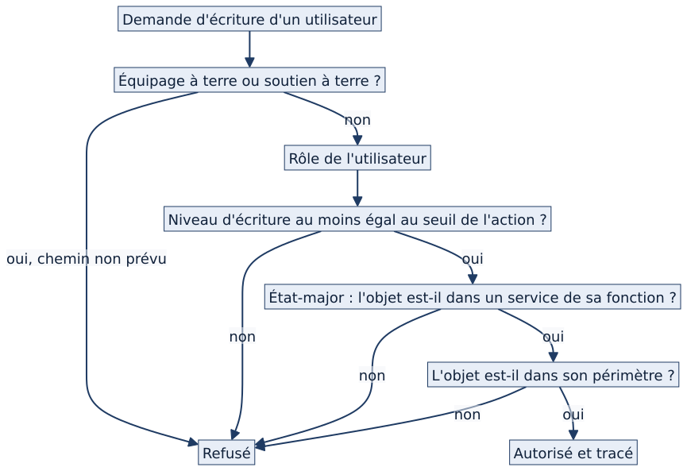
Pour l'état-major, un contrôle supplémentaire s'applique : il n'écrit que sur les services rattachés à sa fonction de commandant adjoint ; ailleurs, il garde la lecture et les droits d'un équipier.
Enfin, certains circuits exigent une fonction précise, quel que soit le niveau : par exemple le visa de la feuille de service revient au COMAEQ compétent du service et de l'équipage concerné, et non à « un état-major ». Un administrateur désigne le titulaire d'une fonction, sans pouvoir viser à sa place.
Pour comprendre ce que les droits changent concrètement, voici ce que peuvent faire sept personnes fictives d'un même bâtiment. Le tableau est généré depuis les valeurs par défaut du code (script de génération du dossier technique) ; il indique si le niveau de la personne atteint le seuil de l'action. Ce n'est qu'une des conditions : le périmètre (et, pour certains circuits, la fonction exercée) s'y ajoute toujours.
| Action (valeur par défaut du seuil) | Matelot (équipier) | Chef de section | Chef de secteur | Chef de service | COMAEQ (état-major) | Commandant | Administrateur technique (unité) |
|---|---|---|---|---|---|---|---|
| Exécuter une maintenance (équipier) | oui | oui | oui | oui | oui | oui | oui |
| Attribuer une tâche à un marin (chef de section) | non | oui | oui | oui | oui | oui | oui |
| Créer ou modifier un matériel (chef de section) | non | oui | oui | oui | oui | oui | oui |
| Supprimer un matériel, action groupée (chef de service) | non | non | non | oui | oui | oui | oui |
| Corriger un compte rendu de maintenance terminé (chef de secteur) | non | non | oui | oui | oui | oui | oui |
| Voir le bloc Supervision de la page Aujourd'hui (chef de secteur) | non | non | oui | oui | oui | oui | oui |
| Publier une liste de quarts ou de gardes (seuil) (chef de service) | non | non | non | oui | oui | oui | oui |
| Viser une feuille de service au palier du chef de service (seuil) (chef de service) | non | non | non | oui | oui | oui | oui |
| Publier une annonce (chef de service) | non | non | non | oui | oui | oui | oui |
| Activer ou désactiver un module du bâtiment (commandant en second) | non | non | non | non | non | oui | oui |
| Réinitialiser un mot de passe (administrateur d'unité) | non | non | non | non | non | non | oui |
| Modifier la structure du bâtiment (administrateur d'unité) | non | non | non | non | non | non | oui |
Comment lire « oui ». « Oui » signifie « le niveau suffit », pas « peut le faire partout ». Un chef de service publie une liste de son service, pas celle d'un autre. Le COMAEQ (état-major) n'écrit que dans les services rattachés à sa fonction. Le visa de la feuille de service n'est pas ouvert « à un niveau » mais à des fonctions (voir ci-dessous) : la ligne correspondante du tableau n'indique que le seuil du palier « chef de service ».
Le matelot (équipier). Il ouvre « Aujourd'hui » : ses tâches, les maintenances qui lui sont assignées, ses quarts et services, ses formations du jour, les annonces qui le visent. Il démarre une tâche, signale un blocage avec son motif, rend compte et la termine ; il exécute une maintenance guidée ; il déclare ses absences ; il se crée une tâche personnelle, privée tant qu'il ne la partage pas ; il répond à une proposition d'échange de tour et en propose lui-même. Il ne peut pas attribuer une tâche, créer un matériel, valider ou publier quoi que ce soit.
Le chef de section. Tout ce que fait le matelot, plus : il attribue des tâches aux marins de sa section (et de son équipage), suit leur avancement, crée et modifie un matériel, un plan de maintenance, valide une absence déclarée par un marin de sa section. S'il est désigné chef de liste, il prépare et propose une liste ; il ne la publie pas. Il ne supprime pas un matériel, ne corrige pas un compte rendu terminé.
Le chef de secteur. En plus : il corrige un compte rendu de maintenance terminé (motif obligatoire, saisie d'origine conservée), voit le bloc « Supervision » de sa page d'accueil (retards, validations en attente de son secteur), supervise et réaffecte les tâches de son secteur. Il vise la feuille de service au palier « secteur » lorsque le rédacteur en dépend.
Le chef de service. En plus : il supprime un matériel, lance une action groupée, publie les listes de quarts et de gardes de son service (la liste doit porter exactement son périmètre), vise la feuille de service au palier « service », publie des annonces ciblées dans son périmètre, valide les documents et les retours d'expérience.
Le COMAEQ (état-major). Il porte la vie à bord et le service courant. Dans Matrix, il écrit uniquement dans les services rattachés à la fonction COMAEQ. Il vise la feuille de service : ce visa lui revient en tant que titulaire de la fonction COMAEQ de son équipage, et non parce qu'il est « état-major ». Il désigne les rédacteurs (le BSC) de la feuille de son équipage. Il déclare l'accostage et l'appareillage du bâtiment. 🔵 Règle cible validée par le PO, non appliquée : il décide des échanges de tours et approuve et publie les listes de quarts et de gardes (voir la section « Fonctionnement cible 🔵 (décisions du PO, non développées) »).
Le BSC (rédacteur de la feuille de service). Le BSC est le marin désigné nominativement par le COMAEQ de son équipage pour préparer la feuille de service. Son droit de rédiger vient de cette désignation, pas de son grade ni de son rôle : un matelot désigné rédige ; un commandant non désigné ne rédige pas. Il prépare et propose la feuille ; il ne la vise pas et ne la publie pas : elle passe par le visa du chef de secteur, du chef de service, puis du COMAEQ. Il n'est pas une autorité parallèle au COMAEQ. S'il change d'équipage ou quitte le bâtiment, sa désignation cesse de donner un droit.
Le chef de liste. Le chef de liste est un marin désigné pour un périmètre précis et un type de liste : « quarts à la mer » ou « services à quai ». Il prépare la liste (créneaux, affectations) et la propose à la publication ; pour une liste à quai, il active la liste publiée à titre prévisionnel. Son droit vient de cette désignation, pas de son grade ; une désignation sans type ne donne aucun droit. Il ne publie pas, sauf s'il relève par ailleurs du commandement ou atteint le seuil de publication de son périmètre.
Le commandant. Vision et supervision du bâtiment : il gère les comptes jusqu'au niveau état-major, active ou désactive des modules, propose la relève de l'équipage, valide l'organisation d'alerte, gère les listes de son bâtiment (création, publication) au titre de la supervision. Si le poste de COMAEQ est vacant, lui seul (et pas son second) peut viser la feuille de service de son équipage, de façon tracée et signalée ; un COMAEQ simplement absent n'ouvre pas cette exception.
L'administrateur technique (administrateur d'unité). Il administre la plateforme et le bâtiment : crée les comptes, règle les seuils et les modules, modifie la structure, réinitialise les mots de passe, désigne les titulaires de fonctions (le COMAEQ, par exemple), applique la configuration. 🔵 Règle validée par le PO : il n'a aucun visa métier : il désigne les titulaires sans viser à leur place. ⚠️ Écart d'implémentation : dans l'état B, son niveau lui fait atteindre les seuils de la plupart des actions métier (colonne de droite du tableau). Seules des règles propres à certains circuits l'en écartent (visa du COMAEQ, rédaction de la feuille de service). Cet écart n'est pas la règle souhaitée ; il est traité par le lot L06 (voir la section « Fonctionnement cible 🔵 (décisions du PO, non développées) » et le registre des écarts (partie restreinte du dossier)).
Trois responsabilités à ne pas confondre. Le tableau distingue le fonctionnement actuel (état B) de la règle cible validée par le PO.
| Objet | Qui prépare | Qui valide / vise | Qui autorise la publication (actuel 🟢) | Règle cible 🔵 |
|---|---|---|---|---|
| Feuille de service | Le BSC (ou délégué), désigné par le COMAEQ | Visas successifs : chef de secteur, chef de service, puis COMAEQ titulaire (secours : commandant de l'équipage si le poste est vacant) | La publication suit le dernier visa (COMAEQ) ; refusée si le contenu a changé depuis | Conforme (DEC-FDS-01, -02, -11, -12) ; s'y ajoute l'impression A4 et la réimpression versionnée (non développées) |
| Liste de quarts à la mer | Le chef de liste « quarts » désigné pour le périmètre | — (pas de visa intermédiaire) | Le commandement, ou un rôle atteignant le seuil de publication dont le périmètre personnel est exactement celui de la liste | Le COMAEQ ou son suppléant habilité approuve et publie (DEC-FDS-14) : écart, lot L09 |
| Liste de services à quai | Le chef de liste « quai » désigné pour le périmètre | — | Idem ; l'activation (rendre la liste applicable) revient au seul chef de liste désigné ou à son remplaçant, jamais au COMAEQ | Publication : COMAEQ ou suppléant habilité (DEC-FDS-14) ; activation : inchangée |
| Échange de tour de service à quai | Les deux marins (demande, accord) | Aujourd'hui : qui gère la liste | — | Le chef de liste ou le BSC instruit ; le COMAEQ ou son suppléant habilité décide (DEC-FDS-07, -13) : écart, lot L10 |
À retenir. Celui qui prépare une feuille (le BSC) n'est pas celui qui prépare une liste (le chef de liste), et ni l'un ni l'autre n'est, par construction, celui qui valide et autorise la publication. Aucun de ces droits ne se déduit du seul grade.
Plutôt que de coder « un chef de section peut créer un matériel » dans le programme, Matrix tient un registre de 35 actions, chacune avec un rôle minimal par défaut. Exemples (valeurs par défaut) :
| Action | Seuil par défaut |
|---|---|
| Créer ou modifier un matériel | Chef de section |
| Supprimer un matériel, lancer une action groupée | Chef de service |
| Corriger un compte rendu de maintenance terminé | Chef de secteur |
| Publier une liste de quarts ou de gardes | Chef de service |
| Activer ou désactiver un module | Commandant en second |
| Modifier la structure du bâtiment | Administrateur d'unité |
| Modifier les grades, spécialités, rôles disponibles (toute la flotte) | Administrateur général |
La matrice complète est l'annexe B (restreinte).
Le périmètre est le niveau de rattachement le plus fin renseigné sur le profil : un chef de section rattaché à sa section voit celle-ci ; un chef de secteur rattaché à son secteur voit le secteur. Un profil qui n'est rattaché qu'à un secteur (sans renseigner l'unité) est tout de même rattaché à son bâtiment, par la hiérarchie.
Cas particuliers :
| Cas | Règle appliquée |
|---|---|
| Commandant en second | Vision globale, mais l'écriture n'est pas héritée de son grade : ses actions passent par des responsabilités attribuées et des circuits explicites (la publication d'annonces sur son bâtiment lui est ouverte). Il supplée le commandant pour la validation de la relève. |
| État-major | Écrit uniquement dans les services dont le commandant adjoint est sa fonction. Un service dont le commandant adjoint n'est pas configuré n'est rattaché à aucune fonction : un état-major n'y écrit donc pas. |
| Équipage à terre | Lecture seule du bâtiment, avec sa propre feuille de service. |
| Soutien à terre (responsable de classe ou de spécialité sans bâtiment) | Consulte et commente ; n'écrit que dans les circuits prévus (catalogue flotte, par exemple). Aucun droit automatique sur le bord, quel que soit le grade. |
| Administrateur d'unité | Administre le bâtiment : comptes, structure, réglages. Son niveau (8) dépasse tous les seuils métier par défaut. 🔵 Le PO a décidé qu'il ne doit avoir aucun visa métier (voir la section « Fonctionnement cible 🔵 (décisions du PO, non développées) »). |
| Administrateur général | Seul niveau multi-bâtiments ; équivalent du superutilisateur. |
La gestion se fait dans l'Annuaire (visible à partir du commandant en second) et par l'API.
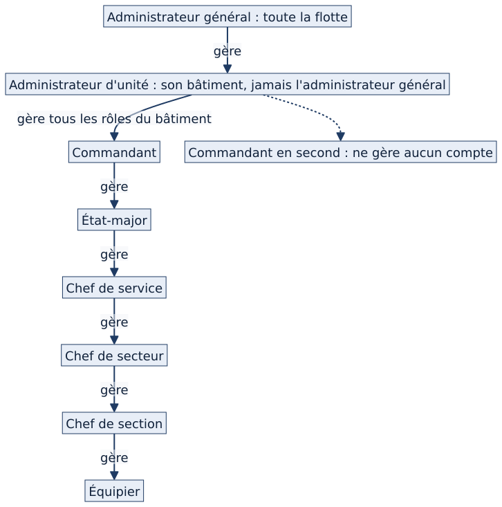
Hors administrateur général, on n'agit que sur les comptes de son propre bâtiment, jamais sur l'administrateur général, et on peut toujours modifier son propre compte. Le commandant en second ne gère aucun compte.
Grades, spécialités, fonctions de service, fonctions de quart, types d'absence et rôles attribuables sont des listes de référence modifiables sans toucher au programme : on peut ajouter une valeur, l'activer ou la désactiver. Ces référentiels sont communs à toute la flotte ; ils ne se modifient qu'au niveau « administrateur général » par défaut. Les désignations de responsable de spécialité et de responsable de classe de navire se font à l'échelle de la flotte, au même niveau.
| Sujet | Règle validée | Lot |
|---|---|---|
| Exclure l'administrateur technique des actes métier | L'administrateur technique gère la plateforme, désigne les titulaires, applique un transfert approuvé ; il n'a aucun visa métier | L06 |
| Rattachement incomplet et validation des rôles | Un rattachement obligatoire et cohérent ; une fonction exercée n'ouvre pas d'accès de sa seule dénomination | L07 |
| Suppléance explicite | Une autorité compétente active une suppléance bornée dans le temps, tracée ; un suppléant officiel n'existe que par ce mécanisme | L08 |
| Droits par fonction | Les visas viennent de la fonction exercée et du périmètre, pas du niveau seul | L09 |
| Désactiver plutôt que supprimer un compte | Historique et traces conservés | L04 |
| Rang des grades configurable | Pour proposer le coordinateur d'une tâche collective ; valeurs saisies par le PO | L16 |
| Sécurité d'accès | Avec les SIC | L21 |
| Import de comptes | Annoncé, non développé | — |
| Fonctions annexes | « Adjudant de compagnie » et « OSS » : reconnues comme fonctions attribuées à des personnes, ni grades, ni permissions générales ; leur rattachement dépend de l'unité. Ce n'est pas un feu vert d'implémentation | — |
Les quatre écarts suivants opposent une décision du PO à un comportement actuel du code. Le comportement actuel n'est pas la règle métier souhaitée ; il est décrit pour que personne ne le prenne pour tel. Chaque écart est détaillé (règle validée, comportement observé, sources, conséquences, lot) dans le registre des écarts (partie restreinte du dossier). Aucune décision n'est rouverte ici.
| Écart | Règle métier validée (PO) | Comportement actuel (état B) | Lot de correction |
|---|---|---|---|
| Administrateur technique | Il n'a aucun visa métier ; il désigne les titulaires sans viser à leur place (DEC-DRT-02) |
Son niveau atteint les seuils de la plupart des actions métier ; seuls certains circuits l'en écartent | L06 |
| Échanges de tours | La décision finale revient au COMAEQ ou à son suppléant habilité ; le chef de liste ou le BSC instruit (DEC-FDS-07, DEC-FDS-13) |
La validation revient à qui gère la liste : chef de liste désigné, ou commandement (peut_) |
L10 |
| Publication des listes de quarts et de gardes | Le chef de liste prépare et propose ; le COMAEQ ou son suppléant habilité approuve et publie (DEC-FDS-14) |
Publie : le commandement, ou tout rôle atteignant le seuil « chef de service » dont le périmètre personnel est exactement celui de la liste ; la fonction COMAEQ n'intervient pas | L09 |
| Commandant en second | Vision globale ; écritures limitées aux responsabilités attribuées, pas à un seuil de grade (Notion « 13 — Décisions ») | L'écriture héritée de son grade lui est retirée, mais certaines vues comparent le seuil à son grade et d'autres à son niveau d'écriture : son pouvoir varie selon la vue | Non identifié ; les responsabilités doivent être explicites et attribuées dans un cadre autorisé, jamais déduites du grade ; qui les attribue est à confirmer (registre des écarts, B2) |
accounts/tests/, dont la matrice des droits, les fuites de périmètre et la réinitialisation de mot de passe). La suite complète passe sur SQLite ; ◯ PostgreSQL, Windows et navigateur n'ont pas été rejoués.Sources (état B). Code de l'état B : rôles, profils, périmètres, journal d'audit, seuils de rôle configurables, contrôle d'écriture, déconnexion automatique (références de code dans le dossier technique à accès restreint.). Notion : « Organigramme et rôles », « 13 — Décisions », « 02 — RH, postes… ». Décisions : DEC-DRT-*, DEC-SUP-*, DEC-ORG-04 (dossier V1.2, ). Tests : .
Les tableaux ci-dessous sont générés depuis le registre central : le statut et l'état de chaque entrée y sont tenus ; cette fiche n'en donne aucun autre. Une proposition 🟣 n'est pas une décision ; « non développée » signifie seulement que le lot correspondant n'est pas livré dans l'état B.
| Identifiant | Sujet | Profils concernés | Statut |
|---|---|---|---|
| A1 | Administrateur technique et actes métier | administrateur d'unité ; commandement | documenté, non arbitré (pas une autorisation de modifier le logiciel) |
| A4 | Droits du commandant en second | commandant en second | documenté, non arbitré (pas une autorisation de modifier le logiciel) |
| A7 | Modèle de droits sans moteur d'attributs général | responsables ; développeurs | documenté, non arbitré (pas une autorisation de modifier le logiciel) |
| B2 | Commandant en second | commandant en second | à confirmer par le PO |
| B5 | Chef de liste des quarts | chefs de liste ; chefs de service | à confirmer par le PO |
| B7 | Ordre des grades | PO | à confirmer par le PO |
| Décision | Règle validée par le PO | État dans l'état B |
|---|---|---|
DEC-DRT-01 |
Les droits métier découlent de la fonction exercée et du périmètre de responsabilité, pas uniquement du grade ni du niveau hiérarchique. | non développée (L09) |
DEC-DRT-02 |
Un administrateur technique ne devient pas automatiquement autorité de validation métier ; il désigne les titulaires sans viser à leur place. | écart (A1) (L06) |
DEC-DRT-03 |
Consultation des documents de maintenance autorisés des autres sections du secteur ; pas de modification ni de clôture hors périmètre. | à instruire ◯ |
DEC-DRT-04 |
Accès intersectoriels et documents sensibles : droits appropriés requis. | à instruire ◯ |
DEC-DRT-05 |
Éviter les suppressions physiques qui détruisent l'historique. | partielle (2 lot(s) livré(s) sur 3) (L02, L03, L04) |
DEC-DRT-06 |
Un compte dont le rattachement professionnel est incomplet n'accède pas aux informations opérationnelles d'un secteur sans autorisation. | non développée (L07) |
DEC-FDS-01 |
Le BSC prépare les feuilles de service ; il n'est pas une autorité parallèle au COMAEQ. | à instruire ◯ |
DEC-FDS-07 |
Échanges de tours : la décision finale revient au COMAEQ ou à son suppléant officiellement habilité. | écart (A2) |
DEC-FDS-13 |
Le BSC ou le chef de liste peut instruire la demande d'échange ; il ne dispose pas automatiquement de l'autorité de validation finale. | à instruire ◯ |
DEC-FDS-14 |
Listes de quarts et de gardes : le chef de liste prépare et propose ; le COMAEQ ou son suppléant officiellement habilité approuve et publie. Toute modification après publication est tracée et donne lieu à une nouvelle version officielle si nécessaire. | écart (A3) |
DEC-ORG-04 |
Distinguer grade, fonction occupée, périmètre de responsabilité, spécialité, brevets/formations/habilitations. Les brevets ne sont pas des grades. | à instruire ◯ |
DEC-SUP-01 |
La suppléance est explicite, temporaire, limitée à une fonction et un périmètre, activée par une autorité compétente, traçable. | non développée (L08) |
DEC-SUP-02 |
Une seule personne exerce la responsabilité active d'un même périmètre à un instant donné. | non développée (L08) |
DEC-SUP-03 |
Le retour anticipé ou la fin de suppléance suit les règles de validation retenues. | non développée (L08) |
DEC-SUP-04 |
Les actes du suppléant restent attribués à leur auteur. | non développée (L08) |
DEC-SUP-05 |
Le titulaire retrouve un récapitulatif des actions réalisées pendant son absence. | non développée (L08) |
DEC-SUP-06 |
Les qualifications réglementaires nécessaires à certains visas restent obligatoires pour le suppléant (voir DEC-QUA-04). | non développée (L08) |
DEC-SUP-07 |
La note Notion « pas de nouveau système de délégation en V1 » est une question de périmètre et de calendrier de développement, non une annulation de la décision fonctionnelle de suppléance. | non développée (L08) |
Un rôle est un profil d'accès ; il n'est ni un grade ni une fonction. Les seuils ci-dessous sont les valeurs par défaut ; chaque bâtiment peut les régler. Un niveau suffisant n'est qu'une condition : le périmètre (et, pour certains circuits, la fonction exercée) s'y ajoute toujours. Deux désignations ouvrent des droits sans changer le rôle : le chef de liste et le rédacteur de la feuille de service (BSC).
| Rubrique | Contenu |
|---|---|
| Qui | Marin d'exécution |
| Ce qu'il fait 🟢 | Ouvre « Aujourd'hui » ; démarre une tâche, signale un blocage avec son motif, rend compte, la termine ; exécute une maintenance guidée ; signale une anomalie ; déclare ses absences ; se crée une tâche personnelle, privée tant qu'il ne la partage pas ; propose ou accepte un échange de tour ; accuse réception des annonces |
| Ce qu'il voit | Ses tâches, ses maintenances assignées, ses quarts et services, ses formations, les annonces qui le visent |
| Ce qu'il ne peut pas faire | Attribuer une tâche, créer un matériel, corriger un compte rendu terminé, publier une liste ou une annonce |
| Désignations possibles | BSC (rédacteur de la feuille de service), chef de liste : droits dans leur domaine seulement |
| Où dans le guide | Parcours du guide utilisateur : ma journée, une tâche, une maintenance, une anomalie, mon tour de service (GU §1) |
| Rubrique | Contenu |
|---|---|
| Qui | Encadre une section |
| Ce qu'il fait 🟢 | Tout ce que fait l'équipier ; attribue des tâches aux marins de sa section ; suit leur avancement ; crée et modifie un matériel et un plan de maintenance ; valide une absence déclarée dans sa section ; exécute ou commente une maintenance qui n'est pas la sienne ; prend en compte, traite et convertit une anomalie |
| Ce qu'il voit | Sa section et son équipage ; la synthèse de section |
| Ce qu'il ne peut pas faire | Supprimer un matériel, corriger un compte rendu terminé ; publier une liste (s'il est chef de liste, il la prépare et la propose) |
| Désignations possibles | Chef de liste |
| Où dans le guide | Synthèse du chef de section ; parcours « Du côté du chef » |
| Rubrique | Contenu |
|---|---|
| Qui | Encadre un secteur |
| Ce qu'il fait 🟢 | Tout ce que fait le chef de section ; corrige un compte rendu de maintenance terminé (motif obligatoire, saisie d'origine conservée) ; voit le bloc « Supervision » de l'accueil ; supervise et réaffecte les tâches de son secteur ; vise la feuille de service au palier « secteur » |
| Ce qu'il voit | Son secteur : retards, validations en attente, tickets ouverts |
| Ce qu'il ne peut pas faire | Supprimer un matériel, publier une liste ou une annonce |
| Particularité | Seul niveau, avec les niveaux supérieurs, à voir le bouton « Enregistrer la correction » d'une maintenance « En validation » (écart A20) |
| Où dans le guide | Accueil du chef de secteur ; « Quand l'échéance reste En validation » |
| Rubrique | Contenu |
|---|---|
| Qui | Encadre un service |
| Ce qu'il fait 🟢 | Tout ce que fait le chef de secteur ; supprime un matériel et lance une action groupée ; publie les listes de quarts et de gardes de son service (la liste doit porter exactement son périmètre) ; vise la feuille de service au palier « service » ; publie des annonces ciblées ; valide documents et retours d'expérience ; valide les absences |
| Ce qu'il voit | Son service |
| Ce qu'il ne peut pas faire | Agir dans un autre service ; activer un module |
| Où dans le guide | Vue d'ensemble du service ; absences |
| Rubrique | Contenu |
|---|---|
| Qui | COMAEQ, COMOPS, COMANAV, COMAVIA |
| Ce qu'il fait 🟢 | Écrit uniquement dans les services rattachés à sa fonction. Le COMAEQ vise la feuille de service (en tant que titulaire de la fonction, non parce qu'il est état-major), désigne les rédacteurs de la feuille de son équipage et déclare l'accostage et l'appareillage ; le COMANAV signe le prêt à appareiller |
| Ce qu'il voit | Les services de sa fonction |
| Ce qu'il ne peut pas faire | Écrire dans un service dont le commandant adjoint n'est pas configuré |
| Cible 🔵 | Le COMAEQ ou son suppléant habilité approuve et publie les listes et décide des échanges de tours (écarts A2 et A3) ; suppléance générale non développée (B1) |
| Où dans le guide | Feuille de service ; prêt à appareiller |
| Rubrique | Contenu |
|---|---|
| Qui | Vision globale ; suppléant du commandant |
| Ce qu'il fait 🟢 | Voit tout le bâtiment ; publie des annonces sur son bâtiment ; supplée le commandant pour la validation de la relève ; atteint par défaut le seuil d'activation des modules |
| Ce qu'il ne peut pas faire | Son écriture n'est pas héritée de son grade : ses actions passent par des responsabilités attribuées et des circuits explicites ; il ne gère aucun compte |
| Écart | Même acte refusé par l'interface de programmation et accepté par l'écran (A4) ; qui attribue ses responsabilités reste à confirmer (B2) |
| Rubrique | Contenu |
|---|---|
| Qui | Commandement du bâtiment ou de l'équipage |
| Ce qu'il fait 🟢 | Gère les comptes jusqu'au niveau état-major ; active ou désactive des modules ; propose la relève ; valide l'organisation d'alerte ; gère les listes de son bâtiment au titre de la supervision. Si le poste de COMAEQ est vacant, lui seul peut viser la feuille de service de son équipage, de façon tracée et signalée |
| Ce qu'il ne peut pas faire | Agir hors de son bâtiment |
| Rubrique | Contenu |
|---|---|
| Qui | Administre la plateforme et le bâtiment |
| Ce qu'il fait 🟢 | Crée les comptes, règle les seuils et les modules, modifie la structure, réinitialise les mots de passe, désigne les titulaires de fonctions (le COMAEQ, par exemple) |
| Règle validée 🔵 | Aucun visa métier : il désigne les titulaires sans viser à leur place |
| Écart | Dans l'état B, son niveau lui fait atteindre les seuils par défaut des actes métier : il peut trancher des échanges et publier des listes (écart A1) |
| Rubrique | Contenu |
|---|---|
| Qui | Seul niveau multi-bâtiments ; équivalent du superutilisateur |
| Ce qu'il fait 🟢 | Administre toute la flotte ; règle les référentiels communs (grades, spécialités, rôles disponibles) ; seul à régler les actions de portée flotte |
| Particularité | Hors de ce rôle, on n'agit que sur les comptes de son propre bâtiment |
Le soutien à terre (responsable de classe ou de spécialité sans bâtiment) consulte et commente ; il n'écrit que dans les circuits prévus, sans aucun droit automatique sur le bord, quel que soit son grade. L'équipage à terre lit son bâtiment en lecture seule et tient sa propre feuille de service.
Matrix tient un registre de 35 actions dont le niveau minimal est réglable par bâtiment. Le tableau donne les valeurs par défaut. Un niveau suffisant n'est qu'une condition : le périmètre s'y ajoute toujours, et un état-major n'écrit que dans les services rattachés à sa fonction.
| Action | Niveau minimal par défaut |
|---|---|
| Modifier ou supprimer la structure de l'unité : services, secteurs, sections, configuration des secteurs, lieux | Administrateur d'unité |
| Archiver l'unité, activer/désactiver son double équipage ou changer son fuseau horaire de référence | Administrateur d'unité |
| Action | Niveau minimal par défaut |
|---|---|
| Créer ou modifier un matériel, un dossier | Chef de section |
| Supprimer un matériel, un dossier, un document, ou lancer une action groupée | Chef de service |
| Action | Niveau minimal par défaut |
|---|---|
| Créer ou modifier une installation, ajouter un document | Chef de section |
| Supprimer une installation ou un de ses documents, ou lancer une action groupée | Chef de service |
| Gérer les tâches d'entretien d'une installation (ajout, modification, suppression, pièce jointe) | Chef de service |
| Rédiger ou proposer une nouvelle version d'une fiche de maintenance d'installation (chef de section ou de secteur) | Chef de section |
| Proposer une fiche de maintenance flotte (matériel ou installation) ou son adaptation (chef de section ou de secteur) | Chef de section |
| Modifier le rattachement parent/enfant d'un matériel ou d'une installation | Chef de service |
| Configurer les ponts et le positionnement du matériel sur le plan visuel du navire | Chef de service |
| Action | Niveau minimal par défaut |
|---|---|
| Gérer le stock de pièces : créer ou modifier une pièce, prélever, saisir un mouvement ou un inventaire | Chef de section |
| Action | Niveau minimal par défaut |
|---|---|
| Créer ou modifier une occurrence ou une exécution de maintenance | Équipier |
| Exécuter ou commenter une maintenance qui n'est pas la sienne | Chef de section |
| Corriger un compte rendu de maintenance terminé (motif obligatoire, saisie d'origine conservée) | Chef de secteur |
| Créer ou modifier un plan de maintenance préventive | Chef de section |
| Action | Niveau minimal par défaut |
|---|---|
| Voir le bloc Supervision (retards, validations, indicateurs du secteur ou du service) de la page Aujourd'hui | Chef de secteur |
| Action | Niveau minimal par défaut |
|---|---|
| Créer ou modifier une discussion | Chef de section |
| Action | Niveau minimal par défaut |
|---|---|
| Publier (valider) une liste de quarts ou de services de garde proposée par un chef de liste | Chef de service |
| Action | Niveau minimal par défaut |
|---|---|
| Configurer les rubriques d'en-tête et les fonctions de service de la feuille de service quotidienne | Chef de service |
| Viser une feuille de service en tant que chef du secteur rédacteur | Chef de secteur |
| Viser une feuille de service en tant que chef du service rédacteur (ex. Pont) | Chef de service |
| Valider une modification de l'organisation sécurité / protection-défense (scénarios d'alerte et postes) | Commandant |
| Action | Niveau minimal par défaut |
|---|---|
| Activer ou désactiver un module applicatif pour cette unité (onglet Modules des Réglages) | Commandant en second |
| Action | Niveau minimal par défaut |
|---|---|
| Réinitialiser le mot de passe d'un marin du bâtiment (mot de passe provisoire à changer à la connexion) | Administrateur d'unité |
| Action | Niveau minimal par défaut |
|---|---|
| Attribuer une tâche à un marin de son secteur ou de son service et suivre l'avancement de l'équipe | Chef de section |
| Action | Niveau minimal par défaut |
|---|---|
| Publier une annonce à son niveau (bâtiment, service, secteur, section, équipage) | Chef de service (ouverte au commandant en second) |
| Action | Niveau minimal par défaut |
|---|---|
| Saisir le programme du bâtiment (escales, arrêts techniques, exercices, réunions) et déléguer ce droit | État-major |
| Configurer les types d'événements du programme du bâtiment | Administrateur d'unité |
| Action | Niveau minimal par défaut |
|---|---|
| Créer les postes du bord, définir leurs formations exigées et y affecter des marins | Chef de service |
| Action | Niveau minimal par défaut |
|---|---|
| Rédiger et soumettre à validation un document ou une nouvelle version | Chef de section |
| Valider et publier un document ou une nouvelle version, archiver un document | Chef de service |
| Action | Niveau minimal par défaut |
|---|---|
| Valider, refuser ou clore un RETEX et en décider les actions | Chef de service |
| Action | Niveau minimal par défaut |
|---|---|
| Modifier les grades, spécialités ou la disponibilité des rôles (référentiel commun à toute la flotte) | Administrateur général |
| Désigner ou retirer un responsable de spécialité ou de classe de navire (dashboards transverses flotte) | Administrateur général |
On ne gère que des rôles inférieurs ou égaux au sien, selon une table unique appliquée à l'écran comme à l'interface de programmation. Le commandant en second ne gère aucun compte ; hors administrateur général, on n'agit que sur les comptes de son propre bâtiment. La table complète est dans les annexes consultables (table B2) ; le schéma de la section RF §6 la résume.
Écran de référence : GU §3 (captures de l'état B sur une instance de démonstration).
« Aujourd'hui » est la page d'accueil de Matrix. Elle répond à la question du marin : qu'est-ce que je dois faire, et où dois-je être, maintenant ? Principe du projet : un espace personnel par marin ; le marin voit ce qui lui est utile maintenant, pas cent informations à la fois.
Exemple fictif : le matelot Durand, à 07 h 45.
La barre de parcours du quotidien (sous le titre de la page) donne accès à quatre vues :
| Onglet | Pour qui | Ce qu'il montre |
|---|---|---|
| Mon quotidien | Tout marin | La page « Aujourd'hui » : « À faire », « Ma journée », « Mes tours de service » |
| Mon équipe | À partir du chef de section | Le calendrier de l'équipe |
| Suivi | Tout marin | Les difficultés signalées : celles qu'on a émises et, pour un chef, celles à traiter |
| Synthèse | À partir du chef de section | Les tâches de l'équipe, l'avancement et la charge par marin |
Le marin sans responsabilité ne voit que « Mon quotidien » et « Suivi ». 🟢 Constaté sur l'instance de démonstration le 16/11/2026 (profils équipier, chef de section et chef de secteur) ; ◯ le contenu de chaque onglet pour les autres profils n'a pas été rejoué.
La page « Aujourd'hui » est organisée en blocs.
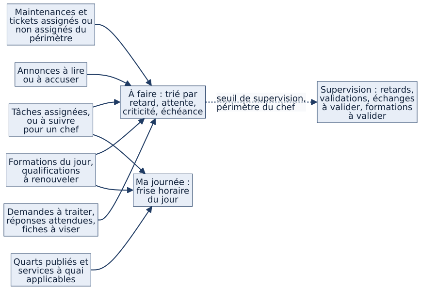
Un bandeau d'identité navale (type de bâtiment, silhouette) et un indicateur du mode du bâtiment (mer ou quai) rappellent le contexte. La page est conçue pour s'afficher sans défilement inutile et sur mobile (RF §20).
À partir du niveau chef de section, « À faire » s'enrichit :
À partir du niveau chef de secteur (seuil réglable), un bloc « Supervision » présente, pour son périmètre : les maintenances en retard (cinq lignes, avec lien), les validations en attente, les échanges de tours à valider, les formations à valider et les candidatures à approuver, et des indicateurs d'indisponibilité (matériels hors service, installations critiques en retard). Chaque ligne indique si le chef peut valider lui-même ou si l'acte revient à un autre niveau.
Un chef peut aussi générer un bilan de son périmètre (voir la section « Rapports et exports »).
Un responsable de classe ou de spécialité (sans bâtiment) arrive sur une page « Aujourd'hui » adaptée : un bloc « À faire » restreint à ce qui le concerne en consultation, puis une carte par bâtiment suivi (indicateurs de maintenance, tickets, anomalies, matériels indisponibles). Il consulte et commente ; il ne valide pas (la validation d'une maintenance reste à bord, aucun bouton n'est proposé) et peut commenter un ticket bloqué. Un sélecteur de bâtiment permet de passer de l'un à l'autre.
| Vue | Qui la voit | Ce qu'elle montre |
|---|---|---|
| Vue flotte | À partir de chef de section | Photo d'ensemble du périmètre effectif de la personne : sa section (chef de section), son secteur (chef de secteur), son bâtiment (chef de service et au-dessus), toute la flotte (administrateur général). Maintenances en retard, tickets correctifs ouverts, pièces sous le seuil, installations |
| Vue COMANAV | Le COMANAV désigné, le commandement (commandant, commandant en second, administrateur d'unité), l'administrateur général | Vue d'ensemble du bâtiment pour l'adjoint chargé de la conservation du bâtiment et des équipements : occurrences, tickets, stock, comptes rendus, dérives, circuits de visa ; étanche par équipage |
| Dashboard spécialité | Le(s) responsable(s) de spécialité désigné(s) | Répartition des marins de la spécialité par bâtiment et vue d'ensemble de leurs qualifications, sur toute la flotte ; lecture seule |
| Dashboard classe de navire | Le responsable de classe | Maintenances en retard, tickets ouverts, pièces sous le seuil, sur tous les bâtiments de la classe |
| Prêt à appareiller | Voir le RF §19 | Session de préparation à l'appareillage |
Les vues « spécialité » et « classe » donnent un accès en lecture seule et n'ajoutent aucun droit d'écriture sur les fiches ou le matériel des bâtiments concernés.
Quand un double équipage relève, Matrix fige une synthèse de passation pour l'équipage montant : ce que les services existants savent déjà dire du bâtiment (vue COMANAV, qualifications, annonces, listes de service). Elle est activée par défaut (l'administrateur général peut la désactiver pour la flotte ; les synthèses existantes sont conservées). Elle est générée à l'application de la relève, ou manuellement par le commandement. Qui la lit (état B) : le commandement du bâtiment et les chefs des deux équipages concernés (à partir du seuil de supervision des tâches) ; jamais un autre bâtiment. 🔵 La décision du PO (recette V1) dit qu'un chef de section ne consulte que sa propre section. 🟢 Écart confirmé par test (12/11/2026, état B, données fictives) : le contrôle côté serveur filtre par bâtiment et équipage, sans borne par section, et le contenu figé couvre tout le bâtiment ; un chef de section d'une section lit donc les tâches, les blocages et les anomalies d'une autre section de son bâtiment dans la synthèse. Un équipier, un chef d'un autre bâtiment, un chef sans équipage et un chef d'un troisième équipage sont refusés. Le code précise lui-même que l'équipage montant « lit tout » (continuité de relève) : la règle du PO et l'intention documentée du code divergent (registre des écarts, A14). Aucune fuite réelle n'est alléguée : seuls des comptes fictifs ont été essayés. Une page imprimable et une version PDF existent. Décision du PO : pas de module autonome de passation ; on préserve l'existant (DEC-PRE-02).
DEC-PRE-03).L'accueil et les tableaux de pilotage ne contiennent aucun moteur propre : ils assemblent ce que savent dire les autres modules, avec les mêmes périmètres que les listes.
| Module source | Ce qu'il alimente |
|---|---|
| Tâches, demandes (ch. 10) | « À faire », supervision |
| Maintenance, tickets, stock, matériel (ch. 11 à 13) | « À faire », indicateurs, Vue flotte, COMANAV |
| Quarts, échanges (ch. 8) | « Ma journée », tours de service, échanges à valider |
| Formations (ch. 14) | Qualifications, formations du jour et à valider |
| Annonces, discussions (ch. 9) | Annonces à lire, réponses attendues |
| Organisation (ch. 4) | Périmètres, équipage, relève et passation |
DEC-UX-01, DEC-UX-04, DEC-UX-09) : voir le RF §20.DEC-UX-08 n'est pas appliqué (écart purement visuel, lot UX).dashboard. 🟢 Les écrans d'accueil du marin et du chef ont été rejoués sur l'instance de démonstration le 16/11/2026 (guide utilisateur) ; ◯ les autres vues (acteur à terre, vue COMANAV) restent décrites d'après le code et les gabarits.Sources (état B)., ; références de code dans le dossier technique à accès restreint. Décisions : DEC-UX-01, DEC-UX-05, DEC-UX-08, DEC-PRE-02, DEC-PRE-03 (dossier V1.2) ; Notion « 13 — Décisions » (vues à terre, passation).
Les tableaux ci-dessous sont générés depuis le registre central : le statut et l'état de chaque entrée y sont tenus ; cette fiche n'en donne aucun autre. Une proposition 🟣 n'est pas une décision ; « non développée » signifie seulement que le lot correspondant n'est pas livré dans l'état B.
| Identifiant | Sujet | Profils concernés | Statut |
|---|---|---|---|
| A14 | Confidentialité de la synthèse de passation | chefs de section ; commandement ; équipage sortant | documenté, non arbitré (pas une autorisation de modifier le logiciel) |
| A25 | Modules désactivés encore actifs par certains chemins | administrateurs d'unité ; commandants ; intégrateurs | documenté, non arbitré (pas une autorisation de modifier le logiciel) |
| NE-06 | Synthèse de passation lisible par l'équipage sortant | chefs de l'équipage sortant | documenté, non arbitré (pas une autorisation de modifier le logiciel) |
| Décision | Règle validée par le PO | État dans l'état B |
|---|---|---|
DEC-PRE-02 |
Pas de module autonome de passation ; préserver les fonctions existantes utiles. | réalisée |
DEC-PRE-03 |
Conserver les exports PDF, Excel et CSV de pilotage, puis en améliorer la qualité. | réalisée |
DEC-UX-01 |
À l'ouverture : tâches du jour, tours de service, actions en attente, urgences, informations utiles. | partielle (L24) |
DEC-UX-04 |
Permettre d'épingler des entrées du menu. | non développée (L24) |
DEC-UX-05 |
Afficher clairement les tours de service à venir, à valider et effectués. | non développée (L24) |
DEC-UX-08 |
Terminologie « Mes tours de services ». | écart (A11) (L24) |
DEC-UX-09 |
Recherche de personnes : informations professionnelles pertinentes, sous réserve des droits. | non développée (L24) |
Écran de référence : GU §3 (captures de l'état B sur une instance de démonstration).
Le calendrier est la colonne vertébrale de Matrix : tout ce qui a une date y apparaît, pour que le marin n'ait pas à consulter cinq systèmes. Il reflète « la réalité du marin » : quarts, services, tâches, formations, maintenances, absences, programme du bâtiment, rendez-vous personnels — une seule vision.
Exemple fictif : le matelot Durand ouvre « Calendrier » un lundi.
| Élément | Contenu |
|---|---|
SRC |
Neuf sources : maintenance, ticket correctif, formation, quart, garde à quai, tâche, absence, programme du bâtiment, événement personnel |
FIL |
Filtres de périmètre et de droits : chacun voit sa journée, un chef voit aussi son équipe |
CAL |
Calendrier central : vue jour, semaine, mois, panneau de détail avec discussion |
ICAL |
Flux iCal personnel : session requise |
| De | Condition ou passage | Vers |
|---|---|---|
| Neuf sources : maintenance, ticket correctif, formation, quart, garde à quai, tâche, absence, programme du bâtiment, événement personnel | — | Filtres de périmètre et de droits : chacun voit sa journée, un chef voit aussi son équipe |
| Filtres de périmètre et de droits : chacun voit sa journée, un chef voit aussi son équipe | — | Calendrier central : vue jour, semaine, mois, panneau de détail avec discussion |
| Filtres de périmètre et de droits : chacun voit sa journée, un chef voit aussi son équipe | — | Flux iCal personnel : session requise |
| Source | Ce qu'on y voit |
|---|---|
| Maintenance | Les occurrences de maintenance de son périmètre ou qui lui sont assignées |
| Ticket | Les tickets correctifs de son périmètre ou qui lui sont assignés |
| Formation | Les sessions où il est inscrit, présent ou formateur |
| Quart | Ses quarts, sur les listes publiées |
| Garde | Ses services à quai, en vigueur ou prévisionnels |
| Tâche | Ses tâches avec échéance (retards en évidence) |
| Absence | Ses absences et celles de son équipe pour un chef |
| Programme du bâtiment | Escales, exercices, réunions qui le visent |
| Personnel | Ses propres rappels et notes |
Le calendrier personnel n'a rien à mettre à jour lui-même : il lit directement les affectations. Quand un échange de tour est validé (RF §11), les deux calendriers le reflètent aussitôt.
| Source | Qui la voit |
|---|---|
| Maintenance, tickets | Le périmètre du marin ou ses assignations ; un chef voit tout son périmètre |
| Formations | L'affectation personnelle : présent, inscrit, formateur (les formations sont communes à tous les bâtiments, pas rattachées à un périmètre) |
| Quarts, gardes | Ses propres créneaux ; un chef voit ceux de son équipe |
| Absences | Les siennes ; un chef voit celles de son équipe |
| Programme | Les événements qui le visent |
| Personnel | Lui seul |
Double équipage : les affichages sont bornés à l'équipage du marin. Les menus de filtre ne proposent que les unités de son périmètre ; un filtre incohérent (un secteur hors du service choisi) est corrigé.
/ fournit un flux iCal personnel pour importer son calendrier dans un autre agenda : maintenances assignées, formations, quarts et gardes publiés, absences, événements personnels. Il exige une session ouverte : ce n'est pas un lien public. Les tâches et le programme du bâtiment n'y figurent pas (non trouvés dans le code).
Le calendrier est un agrégateur : il lit presque tous les modules (il importe 9 paquets) et n'en écrit presque aucun, à part les quelques déplacements ci-dessus. Il est aussi utilisé, avec les mêmes règles, par le digest « Ma journée » des notifications.
| Module | Rôle |
|---|---|
| Quarts, absences (ch. 8) | Créneaux et indisponibilités |
| Tâches, programme (ch. 10) | Échéances et événements |
| Maintenance, tickets (ch. 12) | Occurrences et planification |
| Formations (ch. 14) | Sessions |
| Discussions (ch. 9) | Fil du panneau de détail |
calendar_app. 🟢 La vue mensuelle a été rejouée sur l'instance de démonstration le 16/11/2026 ; ◯ les vues jour et semaine, le glisser-déposer et l'export n'ont pas été rejoués.Sources (état B). ; références de code dans le dossier technique à accès restreint. Décision : DEC-UX-11 (le calendrier reste un élément central) ; cahier des charges §15.
Les tableaux ci-dessous sont générés depuis le registre central : le statut et l'état de chaque entrée y sont tenus ; cette fiche n'en donne aucun autre. Une proposition 🟣 n'est pas une décision ; « non développée » signifie seulement que le lot correspondant n'est pas livré dans l'état B.
| Identifiant | Sujet | Profils concernés | Statut |
|---|---|---|---|
| A25 | Modules désactivés encore actifs par certains chemins | administrateurs d'unité ; commandants ; intégrateurs | documenté, non arbitré (pas une autorisation de modifier le logiciel) |
| Décision | Règle validée par le PO | État dans l'état B |
|---|---|---|
DEC-UX-11 |
Le calendrier reste un élément central. | non développée (L24) |
Écran de référence : GU §6 (captures de l'état B sur une instance de démonstration).
La décision du PO (31/10/2026) distingue trois choses, que Matrix ne mélange pas.
| Support | À quoi il sert | Qui le lit |
|---|---|---|
| Liste de quarts à la mer | Le roulement horaire du service à la mer (barre, passerelle, machine…) : qui tient quel poste sur quel créneau | Les marins de quart |
| Liste de services à quai (gardes) | Les affectations longues à quai (garde de 24 h, permanence…) : qui tient quelle fonction pendant quelle période | Les marins de la fraction de service |
| Feuille de service | La déclinaison quotidienne du service courant à diffuser pour la journée : le personnel de service et les fonctions prévues, les consignes, les informations utiles | Tout l'équipage |
La feuille de service n'affiche pas tous les quarts à la mer : cela la surchargerait. Chaque liste de quarts a son propre tableau, imprimable.
Vocabulaire retenu (définitions du PO, pas des normes) : par bordées (2 équipes), par tiers (3), au quart (4), au cinquième (5), au sixième (6) ; « de musique » = nuit entière sans quart ; « homme mort » = marin sans aucun quart sur le roulement considéré. Matrix ne génère aucun roulement automatiquement : la planification est manuelle, avec contrôle des contraintes (la génération automatique a été abandonnée le 09/10/2026).
Exemple fictif : le matelot Durand, de l'équipage A, rattaché à la section « Propulsion ».
| Qui | Ce qu'il fait |
|---|---|
| Chef de liste (marin désigné pour un périmètre et un type de liste : « quarts à la mer » ou « services à quai ») | Crée la liste de son périmètre, ajoute les créneaux, affecte les marins, propose la liste à la publication. Pour une liste à quai : active la liste publiée à titre prévisionnel, la reporte ou la retire. Il ne publie pas, sauf s'il relève du commandement ou atteint par ailleurs le seuil de publication de son périmètre. |
| Remplaçant temporaire d'un chef de liste | Désigné de façon explicite, bornée dans le temps (72 h au plus par défaut, sans renouvellement automatique) et tracée : il peut seulement activer, reporter ou retirer une prévision, pour un périmètre, un équipage et un type de liste précis. |
| Personne habilitée à publier | Publie la liste (voir la section « Échanges et publication — fonctionnement CIBLE 🔵 et écarts »). |
| BSC (rédacteur de la feuille de service) | Prépare la feuille de service de son équipage : en-tête, fonctions de service, personnel du jour. Désigné nominativement par le COMAEQ. |
| COMAEQ | Vise la feuille de service ; désigne les rédacteurs ; déclare l'accostage et l'appareillage du bâtiment. |
| Commandant | Déclare les mouvements du bâtiment ; gère les listes de son bâtiment au titre de la supervision ; secours du visa de la feuille quand le poste de COMAEQ est vacant. |
| Chef de section, de secteur, de service | Valident les absences de leur périmètre ; visent la feuille aux paliers « secteur » et « service » selon le rédacteur. |
Les droits sont donnés par des désignations (chef de liste, rédacteur, remplaçant), pas par le grade. Une désignation « historique » sans type (ni quarts, ni quai) ne donne aucun droit tant qu'un responsable ne l'a pas qualifiée.
Une liste couvre une période et un périmètre (bâtiment, service, secteur ou section, un seul). Elle suit un circuit à trois états :
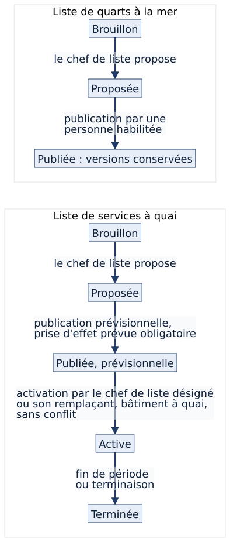
Une liste à quai a, en plus, une application distincte de sa validation : publier ne rend jamais une liste applicable.
Le mode du bâtiment (mer ou quai) n'est jamais saisi librement : il se déduit des mouvements (accostage, appareillage) déclarés par le COMAEQ ou le commandant de l'équipage à bord. Une erreur se corrige par annulation motivée (jamais par effacement). Tant que le mode n'est pas renseigné, une liste ne peut pas être activée.
Alertes d'activation. Si une liste prévisionnelle n'est pas activée, Matrix envoie un rappel (30 minutes avant la prise d'effet prévue), une alerte (à l'heure prévue) puis une escalade (15 minutes plus tard) : délais réglables par bâtiment. Un accostage confirmé sans liste applicable déclenche aussi une alerte.
Conflits à l'activation. Bloquants : deux services à quai simultanés ; un quart encore en cours en même temps que le service. Non bloquants (avertissement) : un quart futur qui recouvre le service, car le régime peut encore changer. Matrix ne raccourcit jamais un quart.
Cette section décrit ce que fait le code de l'état B. Ce n'est pas la règle métier validée sur le point de la décision finale (voir la section « Échanges et publication — fonctionnement CIBLE 🔵 et écarts »).
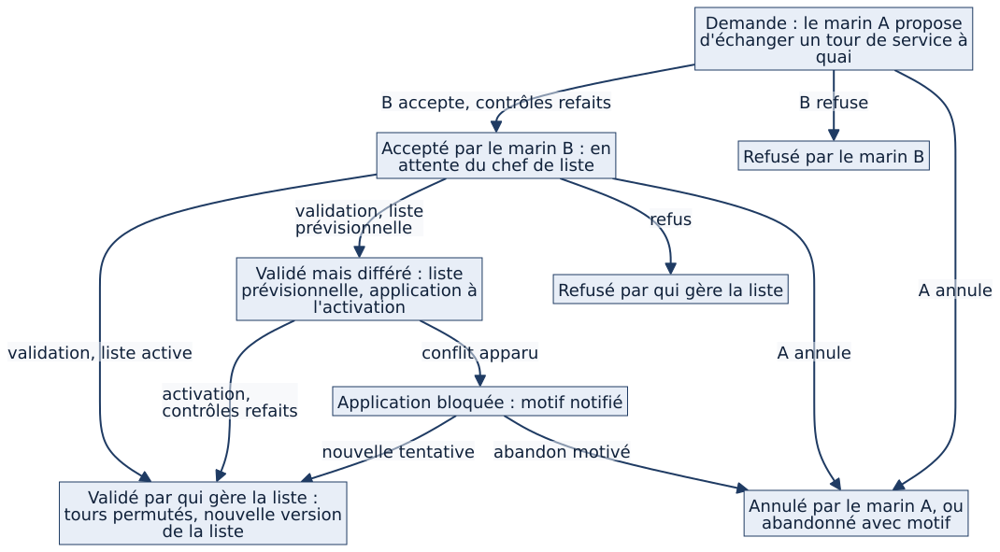
Périmètre. L'échange ne concerne que deux tours d'une même liste de services à quai, entre marins d'un même équipage. Il n'existe pas d'échange de quarts à la mer.
Le circuit actuel, pas à pas.
Les contrôles, toujours expliqués en français (jamais un simple « erreur ») : même liste, liste publiée et non terminée, même équipage, chaque tour toujours affecté au bon marin, tour pas encore commencé, délai minimal de la liste respecté, aucun autre service à quai ni quart en cours en même temps, habilitations exigées valides le jour du tour, absences déclarées (validées ou en attente) qui chevauchent le tour. Un quart futur qui recouvre un tour donne un avertissement, pas un blocage.
Exemple. Durand (garde du 14, 08 h) propose à Martin (garde du 16, 08 h) d'échanger. Martin accepte. Le chef de liste de la section ouvre « Échanges à valider », voit la fiche de l'échange et ses contrôles, valide. Le 14 et le 16 apparaissent permutés dans les deux calendriers ; la liste passe de la version 3 à la version 4.
Traçabilité. Chaque étape est enregistrée (historique propre à l'échange, journal d'audit) ; les libellés des tours d'avant l'échange sont conservés : l'ancienne affectation n'est jamais écrasée sans trace.
Cette section décrit la règle métier validée par le PO, qui n'est pas encore appliquée dans l'état B. Elle ne doit pas être lue comme un fonctionnement existant.
DEC-FDS-07, DEC-FDS-13)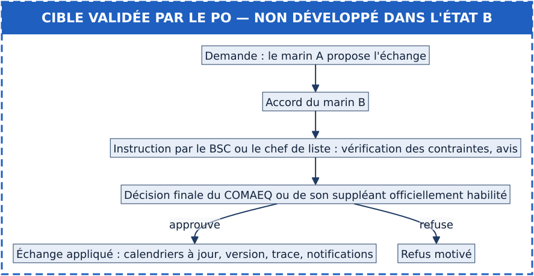
DEC-FDS-14)| Point | Fonctionnement actuel (état B) 🟢 | Règle cible validée 🔵 |
|---|---|---|
| Qui décide d'un échange | Qui gère la liste : chef de liste désigné ou commandement | COMAEQ ou son suppléant officiellement habilité |
| Rôle du chef de liste / BSC dans l'échange | Valide | Instruit seulement |
| Qui publie une liste | Le commandement, ou un rôle atteignant le seuil « chef de service » dont le périmètre personnel est exactement celui de la liste | COMAEQ ou son suppléant officiellement habilité |
| La fonction COMAEQ intervient-elle ? | Non | Oui, c'est elle qui décide et publie |
| Suppléant du COMAEQ | N'existe pas (aucun mécanisme) | « Officiellement habilité » : le mécanisme (suppléance explicite, lot L08) reste à construire |
| Administrateur technique | Peut valider et publier (via la supervision du commandement) | Aucun visa métier (DEC-DRT-02) |
| Lots de correction | — | L10 (échanges), L09 (publication), L08 (suppléance), L06 (administrateur technique) |
⚠️ Écarts d'implémentation. Les lignes ci-dessus sont détaillées dans le registre des écarts (partie restreinte du dossier) (A1, A2, A3). Points à confirmer (la décision existante est appliquée ; la règle cible n'est pas inventée) : (1) suppléance du COMAEQ : le principe est décidé — suppléance explicitement désignée, activée, limitée dans le temps et dans son périmètre, tracée (
DEC-SUP-01) — mais la procédure exacte de désignation du suppléant reste à confirmer (B1) ; (2) les échanges ne sont pas généralisés aux quarts à la mer : sans validation métier, le fonctionnement reste celui des services à quai (B3) ; (3) l'autorité cible de déclaration d'accostage et d'appareillage reste à confirmer, le fonctionnement actuel étant documenté ci-dessus (B4).
Une feuille par bâtiment, par date et, sur un bâtiment à double équipage, par équipage : chaque équipage, à bord ou à terre, a sa feuille, sans validation croisée par le seul grade.
Ce qu'elle contient. Des rubriques d'en-tête configurables par bâtiment (certaines fixes, d'autres à saisir chaque jour) et la liste des fonctions de service (officier de garde, gradé de coupée…, ordre configurable) avec leur titulaire du jour, tiré de la liste de services à quai. La structure du bâtiment est figée sur chaque feuille à sa création ; si elle change ensuite, la divergence est signalée et le rédacteur peut resynchroniser. Une organisation d'alerte (scénarios de sécurité ou de protection-défense : postes à tenir, postes non armés) y est rattachée ; ses modifications suivent « proposer, valider, publier » avec l'autorité configurée.
Qui rédige. Le BSC ou une personne déléguée, désigné nominativement par le COMAEQ de l'équipage (à défaut de COMAEQ, par le commandant de l'équipage). Ni le grade, ni le rôle, ni la supervision ne suffisent : le commandement garde la lecture et les visas. Une désignation qui ne donne plus aucun droit (marin parti, compte désactivé, changement d'équipage) est signalée.
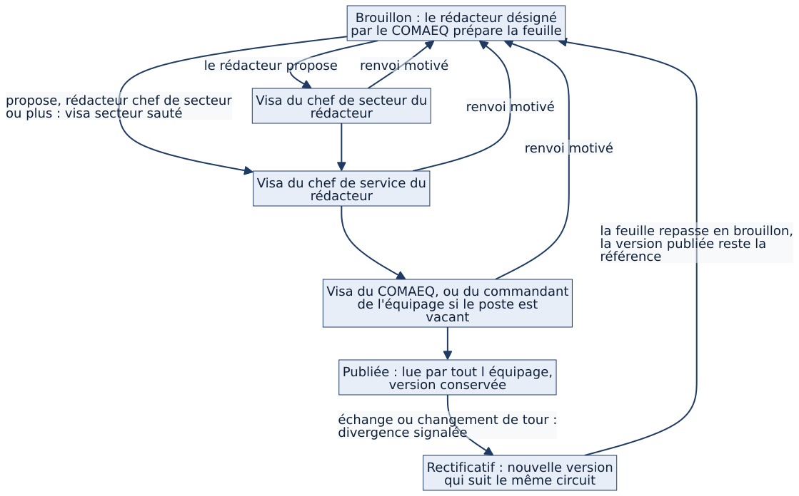
Le circuit de visa. Le rédacteur propose ; la feuille passe par le visa du chef de secteur du rédacteur (sauté s'il est lui-même chef de secteur ou plus), le visa du chef de service, puis le visa du COMAEQ, après quoi elle est publiée. À chaque palier, un renvoi motivé la remet en brouillon : le circuit recommence entièrement. Le visa du COMAEQ n'appartient qu'au titulaire de la fonction COMAEQ de l'équipage ; seul un poste vacant ouvre ce visa, à titre exceptionnel, au commandant de cet équipage (pas au commandant en second, pas à l'administrateur), de façon visible et tracée. Un COMAEQ simplement absent n'ouvre pas cette exception. Le COMAEQ peut aussi corriger l'en-tête pendant le circuit ; une correction qui change le sens ou une information opérationnelle impose un nouveau contrôle.
Une version publiée est immuable. Si un échange validé ou un changement de tour fait diverger le planning effectif de la dernière version, la feuille le signale sans rien modifier ; le rédacteur ouvre un rectificatif qui suit le même circuit, et l'ancienne version n'est remplacée qu'à sa publication. La publication est refusée si le contenu a changé depuis le dernier visa.
À quai seulement (V1). La feuille concerne le service à quai.
Fonctionnement cible 🔵 (non développé). Impression A4 par le BSC pour l'affichage et signalement de la nécessité de réimprimer une feuille déjà affichée (DEC-FDS-04, DEC-FDS-06, lot L27) ; composition-type d'une fraction de service à quai, configurable par bâtiment, avec postes vacants et complétude (DEC-FDS-08, sur GO du PO) ; vérification automatique des qualifications des titulaires : explicitement reportée par le PO.
Le module d'absences est volontairement limité (décision du PO : un système extérieur gère les absences ; Matrix se contente de les prendre en compte). Une absence a un type configurable, une période en jours entiers et deux états : déclarée, puis validée. Le marin la déclare pour lui-même ; un chef de section ou plus la déclare ou la valide pour un marin de son périmètre et de son équipage ; on ne valide jamais sa propre absence. Les absences, validées ou en attente, alimentent le calendrier, bloquent un échange de tour sur la période concernée et apparaissent dans la vue d'équipe des chefs.
Un compteur en lecture seule par marin sur les services de garde publiés : trois catégories séparées (semaine, vendredi, week-end), classées sur la date de début du créneau. Il aide le chef de liste à répartir à la main ; il ne répartit rien. Il ne porte pas sur les quarts à la mer.
| Avec | Ce qui circule |
|---|---|
| Calendrier (ch. 7) | Quarts et gardes publiés, absences, apparaissent dans le calendrier du marin |
| Notifications (ch. 9) | Publication, proposition à valider, échange à valider, activation, alertes (régimes « à quai », « à la mer ») |
| Formations (ch. 14) | Habilitations exigées pour tenir un service, contrôlées lors d'un échange |
| Organisation (ch. 4) | Périmètre de la liste, équipage, commandant adjoint rattaché au service |
| Accueil (ch. 6) | « Mes tours de service », frise « Ma journée », bloc Supervision (échanges à valider) |
| Tâches (ch. 10) | Aucune dépendance directe |
quarts/tests/, 609 fonctions de test dans le paquet) ; ◯ PostgreSQL, Windows et navigateur n'ont pas été rejoués ; les parcours de la section « Ce que voit et fait le marin » sont reconstitués d'après le code.DEC-FDS-04, DEC-FDS-06, lot L27).mer_quai_* validées par le PO ; elle ne figure pas dans le registre des 125 décisions (B4 du registre des écarts).Sources (état B)., ; références de code dans le dossier technique à accès restreint. Décisions : DEC-FDS-01, DEC-FDS-02, DEC-FDS-03, DEC-FDS-04, DEC-FDS-05, DEC-FDS-06, DEC-FDS-07, DEC-FDS-08, DEC-FDS-09, DEC-FDS-10, DEC-FDS-11, DEC-FDS-12, DEC-FDS-13, DEC-FDS-14, DEC-SUP-01, DEC-PRE-01 (dossier V1.2, ) ; propositions, ; Notion « 06 — Service courant, BSC, feuille de service et commissariat » (31/10/2026), « 13 — Décisions ». Écarts : le registre des écarts (partie restreinte du dossier) (A1 à A3, A12, B1 à B5).
Les tableaux ci-dessous sont générés depuis le registre central : le statut et l'état de chaque entrée y sont tenus ; cette fiche n'en donne aucun autre. Une proposition 🟣 n'est pas une décision ; « non développée » signifie seulement que le lot correspondant n'est pas livré dans l'état B.
| Identifiant | Sujet | Profils concernés | Statut |
|---|---|---|---|
| A1 | Administrateur technique et actes métier | administrateur d'unité ; commandement | documenté, non arbitré (pas une autorisation de modifier le logiciel) |
| A2 | Échanges de tours | marins ; chefs de liste ; COMAEQ | documenté, non arbitré (pas une autorisation de modifier le logiciel) |
| A3 | Publication des listes de quarts et de gardes | chefs de liste ; chefs de service ; COMAEQ ; commandement | documenté, non arbitré (pas une autorisation de modifier le logiciel) |
| A4 | Droits du commandant en second | commandant en second | documenté, non arbitré (pas une autorisation de modifier le logiciel) |
| A12 | Impression de la feuille de service | BSC ; COMAEQ | documenté, non arbitré (pas une autorisation de modifier le logiciel) |
| B1 | Suppléance du COMAEQ | COMAEQ ; commandants | à confirmer par le PO |
| B3 | Échanges et quarts à la mer | chefs de liste ; COMAEQ | à confirmer par le PO |
| B4 | Accostage et appareillage | COMAEQ ; commandants | à confirmer par le PO |
| B5 | Chef de liste des quarts | chefs de liste ; chefs de service | à confirmer par le PO |
| Décision | Règle validée par le PO | État dans l'état B |
|---|---|---|
DEC-DRT-02 |
Un administrateur technique ne devient pas automatiquement autorité de validation métier ; il désigne les titulaires sans viser à leur place. | écart (A1) (L06) |
DEC-FDS-01 |
Le BSC prépare les feuilles de service ; il n'est pas une autorité parallèle au COMAEQ. | à instruire ◯ |
DEC-FDS-02 |
Le COMAEQ, ou un suppléant officiellement habilité, approuve la feuille. | non développée (L08, L09) |
DEC-FDS-03 |
Après approbation, publication numérique. | à instruire ◯ |
DEC-FDS-04 |
Le BSC assure l'impression A4 pour l'affichage. | à instruire ◯ |
DEC-FDS-05 |
Une modification après publication entraîne une nouvelle version officielle. | non développée (L09) |
DEC-FDS-06 |
Matrix signale la nécessité de réimprimer et remplacer une feuille déjà affichée. | non développée (L27) |
DEC-FDS-07 |
Échanges de tours : la décision finale revient au COMAEQ ou à son suppléant officiellement habilité. | écart (A2) |
DEC-FDS-08 |
Les fractions de service à quai sont configurables par bâtiment. | non développée (L27) |
DEC-FDS-09 |
Écarts signalés et justifiés, sans blocage automatique injustifié. | non développée (L27) |
DEC-FDS-10 |
Exigences opérationnelles et réglementaires restent applicables. | à instruire ◯ |
DEC-FDS-11 |
La création d'une feuille n'est pas ouverte à n'importe quel équipier. | à instruire ◯ |
DEC-FDS-12 |
Prendre en compte deux équipages ; chaque équipage a sa feuille, sans validation croisée par le seul grade. | à instruire ◯ |
DEC-FDS-13 |
Le BSC ou le chef de liste peut instruire la demande d'échange ; il ne dispose pas automatiquement de l'autorité de validation finale. | à instruire ◯ |
DEC-FDS-14 |
Listes de quarts et de gardes : le chef de liste prépare et propose ; le COMAEQ ou son suppléant officiellement habilité approuve et publie. Toute modification après publication est tracée et donne lieu à une nouvelle version officielle si nécessaire. | écart (A3) |
DEC-PRE-01 |
Le module d'absences est limité aux corrections nécessaires (un système extérieur gère les absences). | à instruire ◯ |
DEC-SUP-01 |
La suppléance est explicite, temporaire, limitée à une fonction et un périmètre, activée par une autorité compétente, traçable. | non développée (L08) |
Écran de référence : GU §4 (captures de l'état B sur une instance de démonstration).
Dans Matrix, on ne discute pas « dans le vide » : la discussion est attachée à l'objet dont on parle. Une question sur la maintenance d'une pompe reste dans le fil de cette maintenance ; une réponse sur une tâche reste dans la tâche. Cela évite que l'information opérationnelle se disperse en messages, mails et conversations perdues.
Exemple fictif : Durand est bloqué sur une maintenance.
@identifiant : une réponse est alors attendue de ce collègue jusqu'à ce qu'il réponde dans le fil, et une alerte d'action l'attend sur son accueil.L'annonce est la diffusion descendante d'un responsable vers un public ciblé : « Réunion demain 08 h », « Modification de la procédure de sécurité », « Consigne immédiate ».
Une notification dit au marin ce qui demande son attention, avec un lien direct vers l'objet, plutôt qu'un simple « vous avez une notification ».
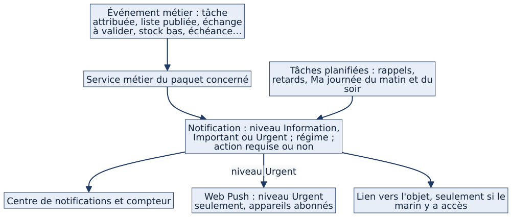
Attribution et blocage de tâche, relances de retard, proposition à valider, échange à valider, liste publiée ou activée, annonce, difficulté signalée, échéance de maintenance, stock bas, formation qui expire, dérive de relevé d'une installation, mention dans un fil… (voir les chapitres de chaque module).
Un responsable ne règle pas les notifications d'un marin ; il agit sur la source. Les alertes d'action des chefs se soldent quand la source est traitée (blocage levé, échange tranché, demande résolue).
Une recherche globale unique permet de retrouver, par catégorie : installations, matériels, tickets correctifs, anomalies, formations, documents, tâches et marins. Chaque résultat mène à un objet que la personne peut réellement ouvrir : la recherche reprend le périmètre des listes. Les catégories d'un module désactivé ne sont pas interrogées ; la saisie exige 2 caractères au moins et chaque catégorie en montre 5 au plus, avec un lien « Tout voir ». Une recherche rapide accompagne la barre supérieure.
| Module | Lien |
|---|---|
| Tâches, demandes (ch. 10), maintenance, tickets (ch. 12), formations (ch. 14) | Portent des fils ; émettent des notifications |
| Quarts (ch. 8) | Notifications de publication, d'échange, d'activation (régimes) |
| Organisation (ch. 4) | Ciblage des annonces par périmètre et équipage |
| Accueil (ch. 6) | Annonces à lire, réponses attendues, compteur |
| Planification (Celery) | Rappels, relances, « Ma journée » (DT §20) |
Décisions du PO et du cahier des charges, non développées :
DEC-UX-09) ; la recherche par nom et grade (catégorie « Marins ») existe déjà 🟢.DEC-UX-06) : le panneau actuel le fait déjà ; le détail reste à confirmer en recette.DEC-UX-04) : RF §20.notifications 165 fonctions de test, annonces 46, threads 30. 🟢 Les annonces, les notifications et la recherche ont été rejouées sur l'instance de démonstration le 16/11/2026 ; ◯ le Web Push n'a pas été éprouvé sur un appareil réel.notifications_par_regime.md , état B).Sources (état B)., ; références de code dans le dossier technique à accès restreint. Décisions : DEC-UX-06, DEC-UX-09 (dossier V1.2) ; cahier des charges §16 à §19, §23, §37, §38 ; propositions et ; Notion « 13 — Décisions » (circuits PÉPIN, CRAT).
Les tableaux ci-dessous sont générés depuis le registre central : le statut et l'état de chaque entrée y sont tenus ; cette fiche n'en donne aucun autre. Une proposition 🟣 n'est pas une décision ; « non développée » signifie seulement que le lot correspondant n'est pas livré dans l'état B.
| Décision | Règle validée par le PO | État dans l'état B |
|---|---|---|
DEC-UX-04 |
Permettre d'épingler des entrées du menu. | non développée (L24) |
DEC-UX-06 |
Notifications lues conservées dans le centre mais retirées de la liste principale. | non développée (L24) |
DEC-UX-09 |
Recherche de personnes : informations professionnelles pertinentes, sous réserve des droits. | non développée (L24) |
Écran de référence : GU §5 (captures de l'état B sur une instance de démonstration).
Une tâche est un travail attribué à un marin, avec une consigne, une échéance éventuelle, une checklist, des pièces jointes et un fil de discussion attaché. C'est le moyen, pour un chef, de dire « voilà ce qu'il faut faire » et, pour le marin, de savoir « voilà ce que je dois faire » sans passer par un tableur.
Exemple fictif : le matelot Durand.
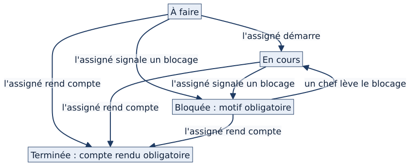
Quatre états : À faire, En cours, Bloquée, Terminée. Deux priorités : Normale et Urgente. Seul le marin assigné démarre, signale un blocage et rend compte ; seul un chef du périmètre lève un blocage ou réaffecte.
Cette section décrit des règles validées mais pas encore en place. Elle ne décrit pas l'état actuel.
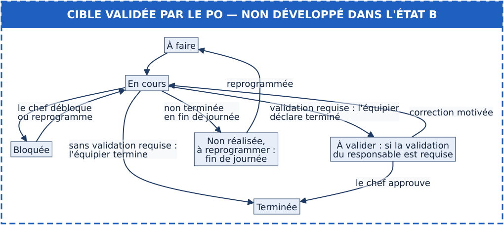
| Règle validée | Décision | Lot | Écart avec l'actuel |
|---|---|---|---|
| Trois priorités : normale, haute, urgente ; une priorité imposée par le chef de secteur ne peut pas être abaissée par le chef de section | DEC-TAC-04, DEC-TAC-05 |
L14 | Deux priorités seulement ; pas de règle d'abaissement |
| Validation facultative : à la création, le chef coche « Validation du responsable requise » ; l'équipier déclare alors terminé, la tâche passe « À valider », le chef approuve ou demande une correction motivée ; le chef de secteur peut valider directement | DEC-CLO-01, DEC-CLO-02, DEC-CLO-03, DEC-CLO-04 |
L15 | Pas d'état « À valider » : l'assigné termine directement |
| Visa technique distinct de la validation facultative | DEC-CLO-05 |
L15 | Les visas techniques vivent dans les fiches, pas dans les tâches |
| Tâche collective : plusieurs participants, un coordinateur proposé au grade le plus élevé, désignable autrement par le chef | DEC-COL-01, DEC-COL-02, DEC-COL-03, DEC-COL-04, DEC-COL-05 |
L16 | Un seul assigné par tâche ; le « grade le plus élevé » exige un ordre des grades (information manquante) |
| Non réalisée : une tâche non terminée en fin de journée n'est pas reportée en silence ; elle passe « Non réalisée — À reprogrammer » ; le chef débloque et reprogramme sans obligation de créer une anomalie ; le chef de secteur décide si un défaut technique mérite une anomalie | DEC-BLQ-03, DEC-BLQ-04, DEC-BLQ-05 |
L17 | Pas d'état « Non réalisée » ; la « fin de journée » reste à définir par bâtiment |
| Qualifications : informatives, jamais bloquantes pour une tâche ordinaire | DEC-QUA-01, DEC-QUA-02, DEC-QUA-03, DEC-QUA-04 |
L18 | Déjà vrai : rien ne bloque aujourd'hui ; l'affichage informatif des qualifications reste à faire |
Écart de libellé (sans portée fonctionnelle) : la décision demande « Mes tours de services » ; l'accueil affiche « Mes tours de service » (lot UX).
Un marin qui rencontre une difficulté sur un objet de Matrix (une tâche, une installation, une anomalie…) la signale : un dossier de suivi s'ouvre, un responsable est désigné dès la création (jamais un dossier sans propriétaire), les interlocuteurs sont invités, des actions sont décidées, et la clôture est tracée. La demande ne remplace aucun outil officiel : elle suit un échange et ses décisions, sur un objet de Matrix. Elle prépare le dialogue entre le bord et la terre (voir le fonctionnement cible plus bas).
Ouvert → En traitement ↔ En attente d'information → Résolu → Clos (ou Ouvert si rouvert). Chaque transition est réservée à un acteur : le responsable pour traiter, attendre, résoudre ; le déclarant pour rouvrir ou clore.
L'état-major publie les événements de la vie du bâtiment — escales, arrêts techniques, exercices, réunions — ciblés sur le bâtiment, un service, un secteur, une section, voire un équipage. Chaque marin voit ceux qui le visent ; ils apparaissent dans son calendrier.
Il consulte « Programme du bâtiment » et son calendrier : titre, type, lieu, début et fin, seulement ce qui le vise. Il peut ouvrir les tâches préparatoires liées à un événement.
Un poste est une fonction à pourvoir, rattachée à l'organisation (bâtiment, service, secteur ou section, et équipage), avec un effectif requis et les formations qu'il exige. On y affecte des marins. Le tableau d'effectifs montre, pour chaque poste, ses titulaires, l'effectif pourvu et les qualifications manquantes de chacun.
Règle essentielle (décision du PO). Affecter un marin à qui il manque une qualification reste possible : les qualifications manquantes sont signalées, jamais bloquantes.
Il voit les postes qu'il tient. Il ne les gère pas.
Un chef de service par défaut (seuil réglable) crée et modifie les postes de son périmètre de saisie, définit les formations exigées, affecte et retire des titulaires, consulte le tableau d'effectifs ; un chef de section ou plus voit les postes de son périmètre.
| De → vers | Ce qui circule |
|---|---|
| Annonces → tâches | Une annonce peut donner naissance à une tâche liée (annonce) |
| Demandes → tâches | Une action décidée dans un dossier est une tâche liée |
| Tâches → discussions | Chaque tâche et chaque dossier a son fil (module de discussions, RF §12) |
| Tâches → calendrier, accueil | Échéances et tâches du jour |
| Tâches ↔ absences | La vue d'équipe signale les conflits d'absence |
| Programme → calendrier, tâches | Événements visibles du marin ; tâches préparatoires |
| Postes → formations | Formations exigées ; qualifications manquantes signalées |
| Tous → notifications | Attribution, blocage, retard, réponse, résolution (RF §12) |
L'orientation validée par le PO (21/10/2026) est de remplacer à terme certains échanges officiels par mail (PÉPIN, CRAT) par des dossiers Matrix avec visas, destinataires, suivi, délais, historique horodaté et chat contextuel pour questions et réponses ; un fil de discussion ne vaut ni décision, ni visa, ni message officiel. Le module « demandes » actuel en est un précurseur (difficulté signalée, responsable, interlocuteurs, actions) ; les circuits exacts PÉPIN, CRAT et RAV/c ne sont pas validés et rien n'est codé à ce titre.
taches/tests/, demandes/tests/, programme/tests/ , postes/tests/). ◯ Les modules programme et postes n'ont que très peu de tests propres (10 et 7 fonctions de test) : leur description repose surtout sur la lecture du code.Sources (état B)., ; références de code dans le dossier technique à accès restreint. Décisions : DEC-TAC-01, DEC-TAC-02, DEC-TAC-03, DEC-TAC-04, DEC-TAC-05, DEC-TAC-06, DEC-COL-01, DEC-COL-02, DEC-COL-03, DEC-COL-04, DEC-COL-05, DEC-CLO-01, DEC-CLO-02, DEC-CLO-03, DEC-CLO-04, DEC-CLO-05, DEC-BLQ-01, DEC-BLQ-02, DEC-BLQ-03, DEC-BLQ-04, DEC-BLQ-05, DEC-QUA-01, DEC-QUA-02, DEC-QUA-03, DEC-QUA-04, DEC-UX-08 (dossier V1.2) ; Notion « 13 — Décisions » (21/10/2026), « 12 — Glossaire ». Écarts : le registre des écarts (partie restreinte du dossier) (A11, A13, partie C).
Les tableaux ci-dessous sont générés depuis le registre central : le statut et l'état de chaque entrée y sont tenus ; cette fiche n'en donne aucun autre. Une proposition 🟣 n'est pas une décision ; « non développée » signifie seulement que le lot correspondant n'est pas livré dans l'état B.
| Identifiant | Sujet | Profils concernés | Statut |
|---|---|---|---|
| A11 | Libellé « Mes tours de service » | marins | documenté, non arbitré (pas une autorisation de modifier le logiciel) |
| A13 | Priorités de tâche : deux niveaux au lieu de trois | chefs de secteur ; chefs de section | documenté, non arbitré (pas une autorisation de modifier le logiciel) |
| B6 | « Fin de journée » d'une tâche | marins ; chefs de section | à confirmer par le PO |
| Décision | Règle validée par le PO | État dans l'état B |
|---|---|---|
DEC-BLQ-01 |
Un équipier peut déclarer une tâche « Bloquée » avec motif. | non développée (L17) |
DEC-BLQ-02 |
Le responsable est informé du blocage. | non développée (L17) |
DEC-BLQ-03 |
Le chef peut débloquer et reprogrammer sans obligation de créer une anomalie. | non développée (L17) |
DEC-BLQ-04 |
Le chef de secteur décide si un défaut technique nécessite une anomalie. | non développée (L17) |
DEC-BLQ-05 |
Une tâche non terminée en fin de journée n'est pas reportée en silence ; état explicite « Non réalisée — À reprogrammer ». | non développée (L17) |
DEC-CLO-01 |
À la création/planification, case « Validation du responsable requise ». | non développée (L15) |
DEC-CLO-02 |
Sans l'option : l'équipier termine directement ; la réalisation est enregistrée. | non développée (L15) |
DEC-CLO-03 |
Avec l'option : l'équipier déclare terminé, la tâche passe « À valider » ; le chef approuve ou demande une correction motivée. | non développée (L15) |
DEC-CLO-04 |
Le chef de secteur valide directement, chef de section absent, sans suppléance. | non développée (L15) |
DEC-CLO-05 |
Les visas techniques obligatoires restent distincts de la validation facultative. | non développée (L15) |
DEC-COL-01 |
Plusieurs marins peuvent participer à une même tâche. | à instruire ◯ |
DEC-COL-02 |
Matrix propose comme coordinateur le participant au grade le plus élevé. | non développée (L16) |
DEC-COL-03 |
En cas d'égalité de grade, le chef choisit. | non développée (L16) |
DEC-COL-04 |
Le chef peut désigner un autre participant comme coordinateur. | non développée (L16) |
DEC-COL-05 |
Le coordinateur peut déclarer le travail réalisé, mais ne remplace pas une autorité de visa technique. | non développée (L16) |
DEC-QUA-01 |
Les formations et habilitations enregistrées ne bloquent pas automatiquement l'attribution ni l'exécution des tâches ordinaires ; le responsable humain choisit. | non développée (L18) |
DEC-QUA-02 |
Les qualifications connues peuvent être affichées à titre informatif. | non développée (L18) |
DEC-QUA-03 |
Une information manquante ou périmée ne bloque pas l'attribution. | non développée (L18) |
DEC-QUA-04 |
Distinguer deux situations : (1) tâches ordinaires, jamais bloquées par les qualifications enregistrées ; (2) visas techniques, fonctions de service et signatures officielles, dont les exigences réglementaires applicables doivent être respectées. | non développée (L18) |
DEC-TAC-01 |
Le chef de section attribue les tâches de sa section. | à instruire ◯ |
DEC-TAC-02 |
Le chef de secteur supervise, attribue directement et réaffecte. | à instruire ◯ |
DEC-TAC-03 |
Le chef de service dispose de la supervision correspondant à sa fonction. | à instruire ◯ |
DEC-TAC-04 |
Trois priorités : normale, haute, urgente. | écart (A13) (L14) |
DEC-TAC-05 |
Une priorité imposée par le chef de secteur ne peut pas être abaissée par le chef de section. | écart (A13) (L14) |
DEC-TAC-06 |
Les changements d'attribution et de priorité sont tracés et notifiés aux personnes concernées. | non développée (L14) |
DEC-UX-08 |
Terminologie « Mes tours de services ». | écart (A11) (L24) |
Écran de référence : GU §9 (captures de l'état B sur une instance de démonstration).
Matrix distingue deux familles, qui ne se gèrent pas tout à fait de la même façon.
| Matériel mobile | Installation fixe | |
|---|---|---|
| Exemples | Extincteur, EPI, multimètre, outil | Propulseur, pompe, groupe électrogène, circuit électrique |
| Identité | Type de matériel, numéro de série, numéro de bord, NNO (numéro de nomenclature OTAN), référence, marque | Désignation, référence, marque, gisement, local, « bigramme » |
| État | OK, en service, hors service, défectueux | Pas d'état propre ; une installation critique dont une échéance est en retard compte comme indisponible |
| Suivi technique | Contrôle périodique, date de péremption | Relevés (heures de marche, vibration, isolement), pièces, événements, entretiens |
| Emplacement | Local, pont, épingle sur le plan du navire | Local |
Chaque équipement est rattaché à un bâtiment, un service, un secteur et, facultativement, une section : c'est ce rattachement qui fixe qui le voit et qui peut le modifier (RF §6). Un équipement peut être rattaché à un parent (un multimètre à une caisse à outils ; un turbo à un moteur, lui-même à un groupe de propulsion) ; Matrix interdit les cycles (un équipement ne peut pas être son propre ancêtre).
Exemple fictif : le matelot Durand, de la section « Propulsion ».
Un marin ne crée ni ne modifie un équipement.
| Qui (seuil par défaut) | Ce qu'il fait |
|---|---|
| Chef de section ou plus | Crée et modifie un matériel ou une installation de son périmètre, ajoute un document ; équipe le bord depuis le catalogue ; complète les exemplaires en grille ; importe du matériel depuis un fichier Excel |
| Chef de service ou plus | Supprime un matériel, une installation, un document, lance une action groupée ; gère les tâches d'entretien d'une installation ; modifie le rattachement parent / enfant ; configure le plan du navire (ponts, positionnement) |
| Responsable de spécialité (à terre) | Gère le catalogue de la flotte de sa spécialité : catégories, articles, fiches de matériel ; vérifie les propositions du bord |
| Administrateur général | Seul à supprimer un article du catalogue (un responsable archive) |
Les seuils sont réglables par bâtiment (RF §6). Chaque écriture est bornée au périmètre de la personne, et l'équipage à terre est en lecture seule.
Le catalogue est commun à toute la flotte, organisé en catégories et sous-catégories, chacune rattachée à une spécialité. Il est tenu à terre par les responsables de spécialité.
Équiper depuis le catalogue (remplacé par un tableau)
| Élément | Contenu |
|---|---|
CAT |
Catalogue de la flotte : catégories et articles, géré à terre par les responsables de spécialité |
EQ |
Le bord choisit un article et indique combien il en a |
FI |
Matrix crée autant de fiches de matériel pré-remplies, rattachées à l'article |
GR |
Saisie en grille : numéro de série, numéro de bord, emplacement, dates |
PL |
Matériel placé sur le plan du navire, relié aux plans de maintenance de sa catégorie |
PR |
Article absent du catalogue : le bord propose, circuit de visas |
| De | Condition ou passage | Vers |
|---|---|---|
| Catalogue de la flotte : catégories et articles, géré à terre par les responsables de spécialité | — | Le bord choisit un article et indique combien il en a |
| Le bord choisit un article et indique combien il en a | — | Matrix crée autant de fiches de matériel pré-remplies, rattachées à l'article |
| Matrix crée autant de fiches de matériel pré-remplies, rattachées à l'article | — | Saisie en grille : numéro de série, numéro de bord, emplacement, dates |
| Saisie en grille : numéro de série, numéro de bord, emplacement, dates | — | Matériel placé sur le plan du navire, relié aux plans de maintenance de sa catégorie |
| Article absent du catalogue : le bord propose, circuit de visas | visas puis publication | Catalogue de la flotte : catégories et articles, géré à terre par les responsables de spécialité |
Une reprise de l'existant permet de rattacher les anciens dossiers de matériel aux catégories du catalogue : elle est d'abord proposée (lecture seule), puis appliquée ; rien n'est supprimé ni déplacé, le matériel reçoit seulement son lien vers l'article.
Le calendrier dit quand ; la fiche dit comment. Une fiche décrit une gamme (par exemple « mensuelle » ou « toutes les 2 000 h ») : ce qu'il faut préparer (outils, pièces, EPI, consignes), les étapes numérotées (avec encadré « Attention »), les lignes de contrôle et de relevé. Une fiche a des versions ; seule la version validée s'applique et alimente la génération des échéances.
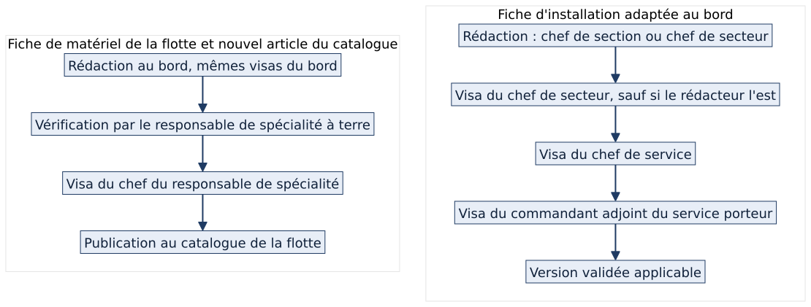
Fiche d'installation, adaptée au bord. Rédaction par un chef de section ou un chef de secteur → visa du chef de secteur (sauf s'il est le rédacteur) → visa du chef de service → visa du commandant adjoint compétent, c'est-à-dire celui dont dépend le service porteur de l'installation → version validée.
Fiche de matériel de la flotte (et nouvel article du catalogue, même logique). Un bord ne peut pas la publier seul. Mêmes visas du bord, puis vérification par le responsable de spécialité à terre, visa de son chef, puis publication au catalogue de la flotte. Un responsable de spécialité qui rédige directement n'a besoin que du visa de son chef.
Règles communes, appliquées par la machine d'états :
Hiérarchie des fiches de la flotte. Une fiche de matériel vaut pour sa catégorie et ses sous-catégories ; pour une gamme donnée, la fiche de la catégorie la plus proche de l'article s'applique : une sous-catégorie remplace, pour cette gamme seulement, la fiche de son parent.
Adaptation locale. Un navire garde sa propre fiche d'installation, tracée « adaptée de la fiche flotte vX » ; quand la fiche flotte évolue, il décide s'il reprend les changements ou garde sa version.
Signalement. Le marin qui exécute une maintenance signale « fiche fausse ou incomplète » : le signalement reste ouvert jusqu'à ce qu'une nouvelle version soit proposée (ou classé).
Pour une installation, trois mesures sont suivies :
Les relevés saisis dans un compte rendu de maintenance alimentent ces mesures à la clôture. Matrix détecte une dérive avant le franchissement du seuil par une régression linéaire simple (sans apprentissage automatique) : il estime dans combien de jours le seuil sera franchi et prévient les chefs concernés (RF §15).
| Module | Lien |
|---|---|
| Maintenance (ch. 12) | Les fiches alimentent les échéances ; l'exécution produit comptes rendus, relevés, tickets |
| Logistique (ch. 12 et 13) | Un ticket vise un matériel ou une installation ; les pièces consomment le stock |
| Formations (ch. 14) | Les qualifications requises ; documents et fiches |
| Documentation (ch. 15) | Documents liés à une installation ou un matériel |
| Calendrier, accueil (ch. 6, 7) | Échéances, retards, indicateurs |
| Organisation (ch. 4) | Périmètre ; une unité occupée par du matériel ne s'archive pas |
| Appareillage (ch. 16) | Les installations critiques alimentent la préparation |
| Sujet | Décision | Lot | État |
|---|---|---|---|
| Transfert de matériel entre secteurs (approbation du chef de service) et entre services (deux chefs de service, puis application par l'administrateur habilité) ; les tâches ouvertes suivent le matériel | DEC-MAT-01, DEC-MAT-02, DEC-MAT-03, DEC-MAT-04 |
L13 | Non développé : aujourd'hui, le matériel se réaffecte par l'affectation en masse |
| Configuration réelle du navire à l'instant T (documents, pièces compatibles, maintenance, compétences) ; états techniques plus fins (nominal, avec réserve, dégradé, indisponible) | Notion « 04 — Maintenance… » | — | Orientation, non développée |
| Interlocuteurs SSF / ERO / ERDT : un expert n'hérite pas de droits globaux ; circuits PÉPIN, CRAT non validés | Notion « 04 », « 13 » | — | Non développé |
assets 493 fonctions de test. 🟢 Les listes, fiches, catalogue et plan du navire ont été rejoués sur l'instance de démonstration le 16/11/2026 ; ◯ la grille et les assistants de fiche n'ont pas été rejoués.Sources (état B). ; références de code dans le dossier technique à accès restreint. Décisions : DEC-MAT-01, DEC-MAT-02, DEC-MAT-03, DEC-MAT-04 (dossier V1.2) ; Notion « 13 — Décisions » (fiches, catalogue), « 04 — Maintenance, installations, SSF… » (lue).
Les tableaux ci-dessous sont générés depuis le registre central : le statut et l'état de chaque entrée y sont tenus ; cette fiche n'en donne aucun autre. Une proposition 🟣 n'est pas une décision ; « non développée » signifie seulement que le lot correspondant n'est pas livré dans l'état B.
| Identifiant | Sujet | Profils concernés | Statut |
|---|---|---|---|
| A18 | Transfert de matériel entre secteurs et services | chefs de service ; gestionnaires de matériel | documenté, non arbitré (pas une autorisation de modifier le logiciel) |
| NE-04 | QR codes liés au nom d'hôte de la requête | exploitants ; gestionnaires de matériel | documenté, non arbitré (pas une autorisation de modifier le logiciel) |
| Décision | Règle validée par le PO | État dans l'état B |
|---|---|---|
DEC-MAT-01 |
Transfert entre secteurs d'un même service : approbation du chef de service. | non développée (L13) |
DEC-MAT-02 |
Transfert entre deux services : approbation des deux chefs de service, puis application par l'administrateur habilité. | non développée (L13) |
DEC-MAT-03 |
Les tâches ouvertes suivent le matériel et sont réattribuées si nécessaire. | non développée (L13) |
DEC-MAT-04 |
L'historique des interventions et des tâches clôturées reste conservé. | non développée (L13) |
Il répond à trois questions de la vie à bord : que dois-je contrôler ou entretenir, et quand ? (maintenance planifiée) ; j'ai vu quelque chose d'anormal (anomalie) ; un équipement est en panne, il faut le réparer et le remettre en service (ticket correctif).
| Objet | Question à laquelle il répond | Qui l'ouvre |
|---|---|---|
| Maintenance planifiée (« occurrence ») | Que dois-je contrôler ou entretenir, et quand ? | Matrix, automatiquement, depuis le plan ou la fiche |
| Anomalie | J'ai vu quelque chose d'anormal (fuite, issue encombrée…), avec ou sans équipement identifié | Tout marin |
| Ticket correctif | Un équipement précis est en panne ou dégradé : le réparer et le remettre en service | Un chef (conversion d'une anomalie, ou à la main) ; automatiquement si un contrôle de matériel mobile est non conforme |
Les seuils ci-dessous sont les valeurs par défaut ; chaque bâtiment peut les régler (voir le référentiel des rôles). L'équipage à terre est en lecture seule.
| Action | Qui | Borne |
|---|---|---|
| Voir les échéances | Tout marin de son périmètre ; ses propres assignations en priorité | Périmètre, équipage |
| Exécuter une maintenance | Le marin assigné ; un chef de section ou plus pour une maintenance qui n'est pas la sienne ; tout marin peut s'assigner lui-même (hors équipage à terre) | Périmètre |
| Corriger un compte rendu terminé | Chef de secteur ou plus, avec motif ; ni l'exécutant, ni le chef de section | Périmètre |
| Signaler une anomalie | Tout marin | — |
| Prendre en compte, traiter, convertir une anomalie | Chef de section ou plus | Périmètre ; état-major : services de sa fonction |
| Faire avancer un ticket | Chef de section ou plus | Périmètre |
| Confirmer une remise en service | Celui qui fait avancer le ticket, avec confirmation explicite | — |
Un acteur à terre peut commenter un ticket bloqué mais ne le fait pas avancer.
Le parcours du marin et celui du chef, avec captures, sont décrits dans le guide utilisateur : GU §7. Trois écrans à retenir : la liste des maintenances (compteurs « à traiter », filtres), la fiche d'exécution guidée (contrôles, consignes de sécurité, progression), et la fiche d'une anomalie ou d'un ticket (état, historique, fil de discussion).
| Étape | Ce qui se passe |
|---|---|
| 1. Le plan dit quand | Un plan de maintenance (par type de matériel) ou une tâche d'entretien d'installation définit la périodicité ; la fiche validée dit comment. Quand une fiche de la flotte s'applique, la fiche de la catégorie la plus proche fait foi. |
| 2. Matrix génère les échéances | Chaque jour, Matrix crée les échéances des 90 prochains jours (matériel et installations). Une échéance de matériel porte plan et matériel ; une échéance d'installation ne porte que la tâche d'entretien. |
| 3. L'échéance est assignée | À un ou plusieurs marins, avec une priorité de 1 à 5 (5 = la plus critique) qui trie la liste « À faire ». |
| 4. Le retard est calculé | Une échéance « planifiée » ou « assignée » dont la date est dépassée passe En retard. |
| 5. Le marin exécute | Puis la clôture met à jour l'état, les relevés de l'installation et l'historique. |
Le marin ouvre l'échéance (depuis « À faire », depuis la fiche de l'équipement ou en scannant son QR code), lit la préparation et les consignes de sécurité, renseigne les contrôles ligne par ligne (résultat, mesure, remarque), puis clôture avec un verdict, des photos et une note. Pour du matériel mobile, une tournée permet de contrôler plusieurs équipements dans un seul tableau. À la clôture, une trace est ajoutée dans la discussion de l'occurrence et les chefs de secteur sont notifiés.
| Verdict | État de l'échéance | Suites |
|---|---|---|
| Conforme | Terminée | Compte rendu archivé |
| Non conforme | En validation | Matériel mobile : un ticket correctif est créé automatiquement (gravité 3 par défaut, une seule fois par échéance) et les chefs sont alertés. Installation : aucun ticket automatique ; les chefs de secteur sont informés. Le marin peut signaler lui-même une anomalie (menu « Anomalies ») : c'est une démarche manuelle et facultative, ni automatique ni une validation. Le lien direct « signaler une anomalie » de l'écran de fin n'apparaît que pour un relevé chiffré hors plage. L'écran de fin annonce à tort qu'un ticket sera ouvert pour une installation (NE-07) |
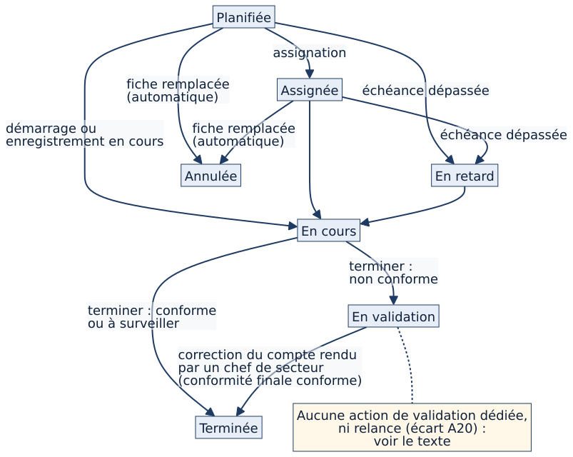
États : Planifiée → Assignée → En cours → Terminée ; En retard (calculé) ; En validation (verdict non conforme) ; Annulée (uniquement par le système, quand une fiche est remplacée : aucun bouton d'annulation n'existe). Chaque changement est journalisé (ancien et nouvel état, auteur) et, pour les installations critiques, audité. La note rattachée à « En validation » renvoie à l'écart A20, décrit plus bas ; la vue détaillée de ce schéma, avec les références de code, est dans le dossier technique (DT §11).
Un marin signale une anomalie en quelques clics : titre, description, gravité de 1 à 5, photo, lieu, et facultativement un équipement (installation ou matériel, jamais les deux). Le périmètre est déduit de l'équipement, sinon du profil du déclarant. États : Signalée → Prise en compte → Traitée → Clôturée. La conversion en ticket garde un lien dans les deux sens. Le signalement est notifié aux chefs du périmètre.
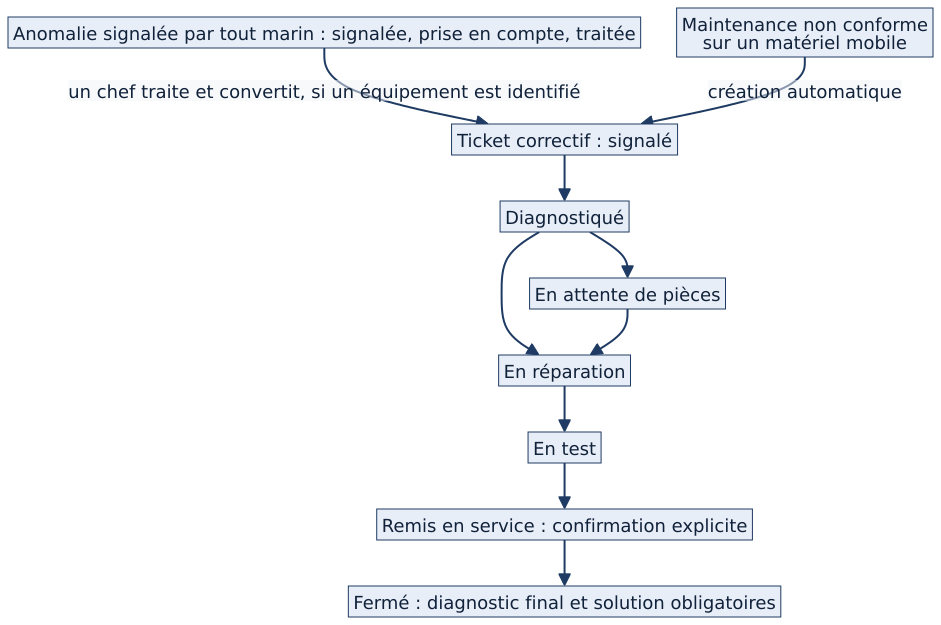
Un ticket vise un matériel ou une installation, jamais les deux ; il peut mobiliser plusieurs marins et porte une gravité de 1 à 5. États : Signalé → Diagnostiqué → (En attente de pièces) → Planifié → En réparation → En test → Remis en service → Fermé ; plus Bloqué et Annulé. Deux garde-fous :
Pièces et périmètre. Un ticket peut déclencher une demande de pièces (RF §16) ; il reste en attente tant que les pièces ne sont pas reçues. Un chef ne fait avancer que les tickets de son périmètre ; chaque changement d'état est journalisé et audité.
Les relevés des installations alimentent une détection de dérive par régression linéaire simple : Matrix estime le délai avant franchissement du seuil et prévient les chefs concernés. Les maintenances en retard, les tickets ouverts et les validations en attente sont comptés à l'accueil ; chaque chiffre mène au dossier filtré.
| Module | Lien |
|---|---|
| Matériel et installations | Fiches, relevés, caractère critique, plan du navire |
| Logistique | Pièces consommées, demandes de pièces, stock |
| Tâches | Une tâche peut être rattachée à un objet ; création depuis une anomalie ◯ non vérifiée |
| Discussions | Chaque échéance, ticket et anomalie a son fil |
| Notifications | Retards, alertes de dérive, tickets, validations |
| Préparation à l'appareillage | Tickets bloquants et installations critiques |
| Accueil | « À faire », indicateurs, supervision |
Cas particuliers : si un équipement est supprimé, les comptes rendus conservent l'historique (RF §14) ; en double équipage, listes et compteurs sont bornés à l'équipage ; le module « rondes » est retiré de l'interface (aucune fonction de ronde n'est disponible) ; un module désactivé disparaît du menu et ses pages sont refusées, mais l'accueil et le calendrier continuent d'afficher les maintenances (écart A25).
| Sujet | État |
|---|---|
| Génération des échéances, retards, exécution guidée, compte rendu, correction motivée | 🟢 Disponible |
| Ticket automatique pour un matériel mobile non conforme | 🟢 Disponible |
| Ticket automatique pour une installation non conforme, avec garde-fous (ne clôture jamais une anomalie, n'autorise jamais une remise en service) | 🟣 Proposition à valider par le PO (D1) ; non développé |
| Périodicités nommées (hebdomadaire à quinquennale), échéance calculée depuis la réalisation effective. Aujourd'hui : un intervalle en jours (90 par défaut) ; l'échéance suivante prolonge la grille déjà planifiée | 🔵 Cible validée, non développée (DEC-PER-02, DEC-PER-03). Deux décisions voisines ont une part existante : DEC-PER-01 partielle, DEC-PER-04 réalisée |
| Remarques d'outillage et d'instruction visibles du chef de secteur, sans modification automatique de la fiche | 🔵 Cible validée, non développée |
| Durée indicative actualisée, historique des estimations. Aujourd'hui : une durée estimée saisie, jamais recalculée | 🔵 Cible validée, non développée |
| Configuration réelle, potentiels, composants | 🔵 Orientation, non développée |
Écart A21, état décision par décision. Le registre ne range pas A21 en bloc « non développé » : l'historique des états (DEC-PER-04) est réalisé ; la génération des échéances depuis les plans et fiches (DEC-PER-01) l'est en partie ; reste à développer les périodicités nommées et le calcul depuis la réalisation effective (DEC-PER-02, DEC-PER-03), les remarques d'outillage (DEC-OUT-01, DEC-OUT-02, DEC-OUT-03, DEC-OUT-04, DEC-OUT-05) et la durée indicative actualisée (DEC-DUR-01, DEC-DUR-02, DEC-DUR-03, DEC-DUR-04, DEC-DUR-05, DEC-DUR-06, DEC-DUR-07). Aucun statut n'est promu : il vient du plan en lots et du code.
Décisions du PO qui changent ce que vous pouvez attendre de ce module (état dans l'état B ; « partielle » = en partie réalisée) :
| Décision | Règle validée par le PO | État dans l'état B |
|---|---|---|
DEC-PER-01 |
Les tâches périodiques sont générées à partir des fiches de maintenance et des matériels concernés. | partielle (L19) |
DEC-PER-02 |
Périodicités : hebdomadaire, mensuelle, trimestrielle, annuelle, biennale, quinquennale. | non développée (L19) |
DEC-PER-03 |
Prochaine échéance calculée depuis la réalisation effective, sauf calendrier fixe réglementaire ou technique. | non développée (L19) |
DEC-PER-04 |
Les historiques sont conservés, retards compris. | réalisée (L19) |
DEC-OUT-03 |
La liste d'outillage n'est jamais modifiée automatiquement. | non développée (L26) |
DEC-DUR-01 |
Matrix actualise automatiquement la durée indicative des maintenances à partir des temps réellement constatés. | non développée (L20) |
Registre central. Les autres décisions de ce module (outillage, durée, anomalies et interventions : 15 entrées) et l'état de chacune sont dans le registre des écarts et décisions, RE §7. Rien n'y est un engagement de date : « non développée » signifie seulement que le lot correspondant n'est pas livré dans l'état B.
Ces constats sont documentés, pas arbitrés. Ils ne modifient ni le logiciel ni une décision du PO.
Sortie de l'état « En validation » (écart A20). 🟢 Vérifié par test et dans le navigateur le 12/11/2026 (données fictives). Il n'existe aucune action de validation dédiée. Trois chemins font pourtant changer l'état : (1) la correction du compte rendu par un chef de secteur ou plus (motif obligatoire) : si la conformité finale n'est plus « non conforme », l'échéance passe Terminée ; (2) une commande technique de l'interface de programmation (« démarrer »), appelable par un marin assigné, qui écrit « En cours » sans contrôler l'état de départ et laisse un état incohérent ; (3) l'administration technique. Aucune annulation manuelle n'existe ; clôturer le ticket lié ne change pas l'échéance.
Risque de blocage. Une échéance « En validation » n'est jamais comptée en retard et aucune notification ne la vise : elle peut rester indéfiniment dans cet état, visible mais sans échéance, ancienneté ni escalade. Pour une installation, aucun ticket n'est créé et la génération de l'échéance suivante est suspendue tant que l'échéance reste « En validation » : l'entretien récurrent s'arrête jusqu'à la correction du compte rendu. La règle de sortie reste à décider par le PO (proposition D2). Aucune règle nouvelle n'est proposée ici.
| Identifiant | Sujet | Profils concernés | Statut |
|---|---|---|---|
| A20 | Échéance « En validation » : règle de sortie | exécutants ; chefs de secteur ; responsables des installations | documenté, non arbitré (pas une autorisation de modifier le logiciel) |
| A25 | Modules désactivés encore actifs par certains chemins | administrateurs d'unité ; commandants ; intégrateurs | documenté, non arbitré (pas une autorisation de modifier le logiciel) |
| D1 | Ticket de suivi pour une installation déclarée non conforme, comme pour le matériel mobile | — | 🟣 à valider par le PO — pas une décision |
| D2 | Règle de sortie de l'état « En validation » et alerte de retard associée (A20) | — | 🟣 à valider par le PO — pas une décision |
| NE-01 | Bouton « Exécuter » affiché sans droit d'exécution | marins ; chefs de section | documenté, non arbitré (pas une autorisation de modifier le logiciel) |
| NE-07 | Message de fin de compte rendu inexact pour une installation | marins ; chefs de section ; responsables des installations | documenté, non arbitré (pas une autorisation de modifier le logiciel) |
Registre central. Les autres écarts qui touchent ce module (périodicités et remarques d'outillage : A21 ; lignes de tickets cliquables à la souris seulement : NE-02) sont dans RE §2 et RE §3. Chaque entrée du registre donne le constat, la preuve, les profils concernés et la date de dernière vérification.
Le bouton « Exécuter » (NE-01) apparaît dans la liste pour des échéances que l'utilisateur ne peut pas exécuter : le serveur refuse ensuite l'ouverture. Le message de fin de compte rendu (NE-07) annonce l'ouverture d'un ticket pour toute échéance non conforme, y compris celle d'une installation, pour laquelle aucun ticket n'est créé.
| Point | Méthode | Date |
|---|---|---|
| Exécution, clôture, correction réservée au chef de secteur, états de l'échéance | Navigateur, instance de démonstration, comptes fictifs | 12/11/2026 |
| Sorties de « En validation » (A20), modules désactivés (A25) | Tests exécutés sur une copie isolée de l'état B | 12/11/2026 |
| Ticket automatique, seuils par défaut, génération sur 90 jours | Lecture du code de l'état B | 12/11/2026 |
| Fin d'un compte rendu non conforme sur une installation : état « En validation », aucun ticket, message de fin inexact (NE-07) | Navigateur, instance de démonstration, comptes fictifs ; capture conservée dans les preuves à accès restreint | 14/11/2026 |
| Envois de notifications (appareil, courriel) | ◯ Non rejoués : seules leurs conditions de déclenchement sont décrites | — |
| Écrans de tournée et de ticket complet | ◯ Non rejoués en totalité dans le navigateur | — |
Écran de référence : GU §9 (captures de l'état B sur une instance de démonstration).
| Stock proactif | Demande de pièces | |
|---|---|---|
| Question | « Qu'ai-je en réserve à bord ? » | « Il me faut telle pièce pour réparer ce matériel » |
| Objet | Fiche de pièce de rechange (StockPiece) |
Demande rattachée à un ticket correctif, avec des lignes |
| Indépendance | Existe sans ticket | N'existe que par un ticket |
Les deux se rejoignent quand une ligne de demande est consommée : Matrix peut alors sortir la quantité du stock.
stock_ecriture (chef de section par défaut).| Qui (seuil par défaut) | Ce qu'il fait |
|---|---|
Chef de section ou plus (action stock_ecriture) |
Crée ou modifie une pièce, prélève pour un ticket, saisit une entrée, un inventaire ou une correction, gère les lignes de demande de pièces de son périmètre |
| Chef de secteur et plus | Mêmes droits sur un périmètre plus large ; création d'une pièce dans un secteur de son périmètre uniquement |
| Acteur à terre | Consultation et commentaire seulement |
Le seuil est réglable par bâtiment (RF §6). Toute écriture est bornée au périmètre de la personne.
Stock et pièces (remplacé par un tableau)
| Élément | Contenu |
|---|---|
MV |
Mouvement de stock : entrée, sortie, inventaire, correction |
SO |
Quantité de la pièce : somme des mouvements |
AL |
Seuil minimal : alerte « avertissement » ; seuil critique : alerte « danger », avec Web Push |
TK |
Ticket correctif |
DP |
Demande de pièces : lignes à commander, commandée, expédiée, reçue, consommée |
| De | Condition ou passage | Vers |
|---|---|---|
| Mouvement de stock : entrée, sortie, inventaire, correction | — | Quantité de la pièce : somme des mouvements |
| Quantité de la pièce : somme des mouvements | — | Seuil minimal : alerte « avertissement » ; seuil critique : alerte « danger », avec Web Push |
| Ticket correctif | — | Demande de pièces : lignes à commander, commandée, expédiée, reçue, consommée |
| Demande de pièces : lignes à commander, commandée, expédiée, reçue, consommée | pièce consommée prélevée au stock | Mouvement de stock : entrée, sortie, inventaire, correction |
Règle centrale : la quantité d'une pièce n'est jamais « tapée » ; elle résulte de mouvements.
| Mouvement | Effet | Motif |
|---|---|---|
| Entrée | Ajoute | Facultatif |
| Sortie | Retire (refusée si le stock est insuffisant) | Facultatif ; rattachée à un ticket quand elle vient d'une intervention |
| Inventaire | Ramène le stock à l'effectif compté ; l'écart est enregistré | Obligatoire |
| Correction | Variation signée | Obligatoire |
Garanties (🟢 vérifiées au code) :
◯ Dans l'état B, la demande de pièces n'a pas de circuit d'approbation ni de commande réelle : les états décrivent le suivi par le bord ; rien n'est transmis à un système d'approvisionnement.
Une tâche planifiée quotidienne contrôle le stock :
| Action | Seuil | Borne |
|---|---|---|
| Voir le stock | Tout marin du périmètre | Périmètre, équipage |
| Créer / modifier une pièce, mouvement, inventaire, prélèvement | stock_ecriture (chef de section) |
Périmètre ; service de la pièce |
| Changer l'état d'une ligne de demande | Chef de section dans le périmètre du ticket | Périmètre du ticket |
| Sortie automatique à la consommation | stock_ecriture |
Idem |
| Module | Lien |
|---|---|
| Tickets (ch. 12) | Une demande de pièces appartient à un ticket ; la consommation sort du stock |
| Installations (ch. 11) | Les pièces d'une installation (avec NNO) sont listées sur sa fiche ; elles sont distinctes du stock |
| Notifications | Alertes de stock bas / critique |
| Accueil (ch. 6) | Indicateur « pièces sous le seuil » (vue flotte, dashboard de classe) |
| Préparation à l'appareillage (ch. 16) | Pièces critiques manquantes |
Fiche de pièce : référence, désignation, NNO (facultatif), quantité (copie du solde), quantité minimale, seuil critique (facultatif ; à défaut 0), emplacement, note, photo ; bâtiment, service, secteur (obligatoires) et section (facultative) ; lien facultatif vers un équipement (installation ou matériel, jamais les deux, dans le même secteur). La pièce apparaît alors dans l'onglet « Pièces » de la fiche de l'équipement ; si l'équipement est supprimé, la pièce reste (seul le lien disparaît). Le total des mouvements doit toujours égaler la quantité.
États d'une pièce : normal ; bas (sous le minimum, au-dessus du critique) ; critique (au seuil critique ou en dessous).
Écrans et actions : liste du stock avec recherche texte ; fiche de pièce (création, modification) ; page des mouvements d'une pièce (entrée, sortie, inventaire, correction) ; prélèvement depuis un ticket ; export CSV et Excel du stock affiché, borné au périmètre de la personne (l'Excel peut manquer sur un serveur sans la bibliothèque : le CSV reste disponible).
Demandes de pièces : demande par ticket (Ouverte / Fermée), lignes avec fournisseur, numéro de commande, coûts estimé et réel, dates de commande et de réception ; six états de ligne ; interface programmable (API) pour les tickets, les demandes et les lignes ; le stock n'a pas de route API propre ◯.
Non trouvé dans le code examiné (constat, pas une cible ; ◯ absence déduite de la lecture des modèles et des routes) : approbation d'une demande, commande transmise à un fournisseur, réception comptable, valorisation du stock, inventaire planifié, réservation de pièces, transfert entre bâtiments, rattachement automatique d'une pièce aux gammes de maintenance.
Le dossier V1.2 ne contient aucune décision du PO sur le stock ni sur la commande de pièces. Le cahier des charges prévoit une logistique plus large (approvisionnement, circuit SSF) mais rien n'est validé ni développé : ce chapitre ne décrit donc aucune cible.
logistics (rejoués sur l'état B avec les six autres paquets de l'ensemble 3 : 1 491 tests OK, 1 ignoré ; rapport de lot conservé dans les archives).Sources (état B)., . Références dans la partie restreinte du dossier.
Les tableaux ci-dessous sont générés depuis le registre central : le statut et l'état de chaque entrée y sont tenus ; cette fiche n'en donne aucun autre. Une proposition 🟣 n'est pas une décision ; « non développée » signifie seulement que le lot correspondant n'est pas livré dans l'état B.
| Identifiant | Sujet | Profils concernés | Statut |
|---|---|---|---|
| NE-02 | Lignes de tickets cliquables sans lien ni focus clavier | tous profils | documenté, non arbitré (pas une autorisation de modifier le logiciel) |
Écran de référence : GU §11 (captures de l'état B sur une instance de démonstration).
Exemple fictif : le matelot Durand prépare un renouvellement.
Une qualification n'est pas un grade (DEC-ORG-04).
| Qui | Ce qu'il fait |
|---|---|
| Référent d'une formation (désigné pour cette formation sur ce navire) | Enregistre les validations, gère les présences des sessions de cette formation |
| Référent formation du navire (transversal) | Idem pour toutes les formations du bord ; désigné au niveau de supervision globale |
| Commandement du bâtiment | Supervision de toutes les formations de son seul bâtiment |
| Chef de section et plus | Affecte des marins de son périmètre à une session ; formule une demande de places |
| Chef de service et plus | Valide une formation proposée par le bord (la section « Circuit C — Une formation proposée par le bord ») |
| Personnel BRH (désigné par navire) | Traite les candidatures (étape BRH) |
| Administrateur général | Seul quand un marin n'a aucun navire résolvable |
Règle de périmètre : un référent valide les marins d'un navire précis, jamais ceux d'un autre ; on ne s'auto-valide pas (sauf administrateur général).
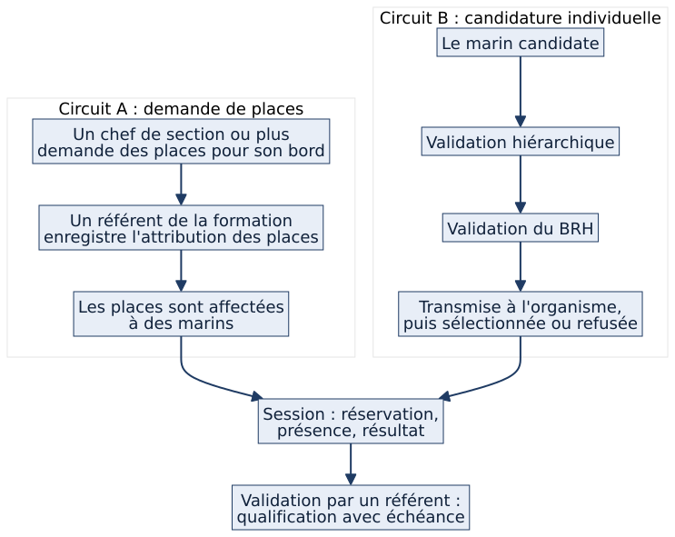
Pour une formation à quota limité (par exemple un stage sécurité), le bord demande des places :
🟢 Qui est « l'organisme » ? Dans Matrix, un organisme de formation est une unité de type École ou Centre de formation, avec sa propre hiérarchie et ses propres marins. La réponse (attribuer ou refuser des places, choisir ou créer une session) est donnée par un référent de cette formation dans l'unité de l'organisme ; le demandeur est notifié. Il n'existe pas d'organisme « externe » sans unité créée dans Matrix : s'il n'y a pas d'unité ni de référent, la réponse se donne hors outil. ◯ Ce qui manque par rapport à la cible Notion « 03 » : un dossier vivant (timeline, fil de discussion systématique, étape « transmission à l'organisme », « prise en compte »). Écart A19.
La sélection par l'organisme se traduit par l'attribution de places (circuit A) : les deux circuits se rejoignent à la session.
Un bord peut créer ou modifier une formation interne. Elle ne devient active qu'après validation :
Les formations de l'organisme (non gérées par le bord) restent toujours actives.
◯ Aujourd'hui, la transition automatique « session effectuée → validation → qualification » n'existe pas : c'est le référent qui enregistre la validation (cible Notion, la section « Fonctionnement cible »).
Décision du PO (DEC-QUA-01, DEC-QUA-02, DEC-QUA-03) : une qualification manquante ou périmée ne bloque jamais l'attribution d'une tâche ordinaire, le responsable humain choisit ; elle peut s'afficher à titre informatif. Les visas techniques, fonctions de service et signatures officielles gardent leurs exigences réglementaires, qui viennent du bord (DEC-QUA-04) — aucun contrôle de ce type n'est inventé dans ce dossier.
🟢 Ce que fait le code. Les tâches ne contiennent aucun contrôle fondé sur les qualifications. En revanche, une liste de service à quai peut porter des habilitations requises (réglage de la liste, jamais codé en dur) : lors d'un échange de tours, Matrix vérifie que le marin qui reprend le tour a une validation valable le jour du tour et explique en français ce qui manque . C'est un contrôle propre aux services, conforme à l'esprit de DEC-QUA-04 ; l'échange est refusé d'emblée avec cette explication (RF §11). Le refus porte sur l'échange d'un tour de service, non sur l'attribution d'une tâche ordinaire.
| Module | Lien |
|---|---|
| Organisation (ch. 4) | Exigences par périmètre ; spécialité du marin ; mutation |
| Droits (ch. 5) | Référents, BRH, supervision, seuils |
| Calendrier (ch. 6, 8) | Sessions des stagiaires et formateurs |
| Accueil (ch. 6) | Formations du jour, qualifications à renouveler, candidatures à approuver |
| Quarts (ch. 8) | Habilitations requises par une liste de service, contrôlées lors d'un échange de tours |
| Discussions (ch. 9) | Fil par dossier (cible : systématique) |
| Appareillage (ch. 16) | Qualifications des postes critiques |
| Passation (ch. 6) | Qualifications figées dans la synthèse |
Selon la page Notion « 03 » (orientation, non développée sauf mention) :
DEC-ORG-05, libellés et validités exacts non fournis (IM-01) — aucune liste n'est inventée ici.training (rejoués sur l'état B avec les six autres paquets de l'ensemble 3 : 1 491 tests OK, 1 ignoré ; rapport de lot conservé dans les archives).dossiers_formation_visibles_q ) ; il n'est pas reproduit ici cas par cas.Sources (état B). ; Notion « 03 — Formation… » ; décisions DEC-QUA-01, DEC-QUA-02, DEC-QUA-03, DEC-QUA-04, DEC-ORG-04, DEC-ORG-05 (dossier V1.2). Références dans la partie restreinte du dossier.
Les tableaux ci-dessous sont générés depuis le registre central : le statut et l'état de chaque entrée y sont tenus ; cette fiche n'en donne aucun autre. Une proposition 🟣 n'est pas une décision ; « non développée » signifie seulement que le lot correspondant n'est pas livré dans l'état B.
| Identifiant | Sujet | Profils concernés | Statut |
|---|---|---|---|
| A19 | Demande de places de formation | référents de formation ; demandeurs ; organismes de formation | documenté, non arbitré (pas une autorisation de modifier le logiciel) |
| Décision | Règle validée par le PO | État dans l'état B |
|---|---|---|
DEC-ORG-04 |
Distinguer grade, fonction occupée, périmètre de responsabilité, spécialité, brevets/formations/habilitations. Les brevets ne sont pas des grades. | à instruire ◯ |
DEC-ORG-05 |
Prendre en compte FEM, BE, BAT, BS, BST et les évolutions récentes (BHT, C-CDM). | à instruire ◯ |
DEC-QUA-01 |
Les formations et habilitations enregistrées ne bloquent pas automatiquement l'attribution ni l'exécution des tâches ordinaires ; le responsable humain choisit. | non développée (L18) |
DEC-QUA-02 |
Les qualifications connues peuvent être affichées à titre informatif. | non développée (L18) |
DEC-QUA-03 |
Une information manquante ou périmée ne bloque pas l'attribution. | non développée (L18) |
DEC-QUA-04 |
Distinguer deux situations : (1) tâches ordinaires, jamais bloquées par les qualifications enregistrées ; (2) visas techniques, fonctions de service et signatures officielles, dont les exigences réglementaires applicables doivent être respectées. | non développée (L18) |
Écran de référence : GU §11 (captures de l'état B sur une instance de démonstration).
| Document | RETEX | |
|---|---|---|
| Rôle | Procédure, consigne ou note que le bord applique | Enseignement tiré d'un événement, proposé pour que le bord s'améliore |
| Cycle | Brouillon → soumis → publié (versionné) | Proposé → validé et publié (ou refusé) → clos |
| Lien | Un RETEX validé devient un document publié | Une action décidée devient une tâche suivie |
Exemple fictif : le matelot Durand a vécu une fuite mal traitée.
| Action | Qui (seuil par défaut) | Règles |
|---|---|---|
| Rédiger / soumettre | Chef de section ou plus (documentation_) |
Seulement vers des publics de son périmètre ; une procédure officielle cite sa source |
| Valider et publier, archiver | Chef de service ou plus (documentation_) |
Dans le périmètre du document ; jamais sa propre version |
| Refuser | Même droit | Motif obligatoire |
| Lier un document à un objet | Droit de gestion des liens | Seulement des objets auxquels on a accès |
| Proposer une amélioration | Tout marin qui voit le document | Équipage à bord uniquement |
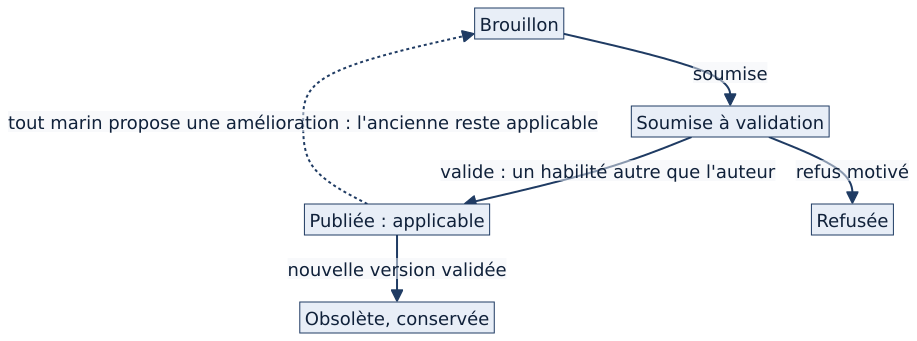
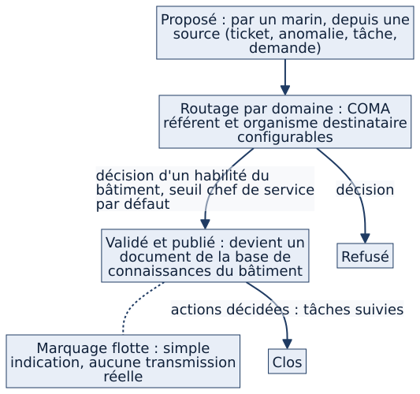
| Domaine | COMA référent | Organisme destinataire |
|---|---|---|
| Opérations et missions | COMOPS | ALFAN / Entraînement |
| Technique, sécurité matérielle, MCO | COMANAV | SSF / ERO / IRB puis ERDT / IRDT |
| Service courant, protection, vie à bord | COMAEQ | ALFAN / Exploitation |
| Aviation | COMAVIA | ALFAN / Exploitation |
retex_validation , chef de service par défaut), ceux dont la fonction cite le COMA référent du domaine apparaissant en premier. Il n'y a pas d'étape intermédiaire.Le RETEX est limité au bâtiment : on ne propose ni ne valide pour un autre navire ; le commandement le voit en lecture ; un marin voit les siens et les RETEX validés de son bâtiment.
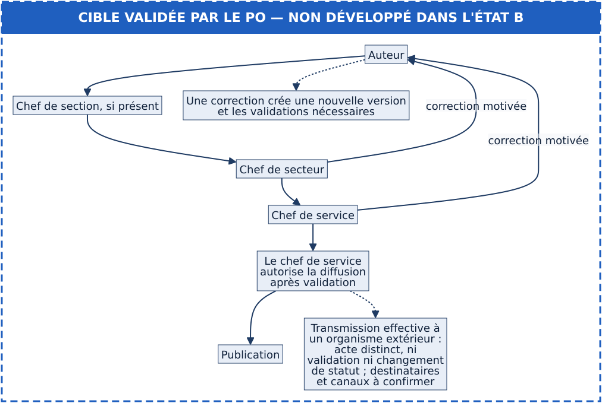
Décisions du PO (dossier V1.2) :
DEC-RTX-01 : auteur → chef de section (s'il existe) → chef de secteur → chef de service. Cette décision remplace l'ancienne recommandation « COMA référent d'abord ».DEC-RTX-02 : une demande de correction doit être motivée.DEC-RTX-03 : une correction entraîne une nouvelle version et les validations nécessaires.DEC-RTX-04 : traçabilité de qui a proposé, modifié, validé ou rejeté.| Aujourd'hui | Cible | |
|---|---|---|
| Étapes | Une seule : un habilité décide | Chef de section → chef de secteur → chef de service |
| Rôle du COMA référent | Ordre de notification | Ne décide pas d'abord (décision remplacée) |
| Correction | Pas de demande de correction : valider ou refuser | Demande motivée → nouvelle version → nouvelles validations |
| Traçabilité | Audit de chaque étape | Idem, plus l'historique des versions |
Trois actes à ne jamais confondre (précisé par le PO) :
◯ À confirmer avec les procédures métier applicables : les destinataires, les canaux et les responsabilités exacts de la transmission. Aucune règle n'est inventée ici.
🟢 Aujourd'hui, le marquage « flotte » n'est pas une transmission. Il enregistre seulement le niveau de diffusion souhaité et l'organisme habituel du domaine ; aucun envoi, aucune notification, aucun accusé n'existe. Il ne doit jamais être lu comme la preuve qu'un organisme a reçu le RETEX. Écart inscrit au registre (A15, A16 ; lot L11).
| Module | Lien |
|---|---|
| Tickets, anomalies (ch. 12) | Source d'un RETEX ; le ticket fermé porte déjà un retour d'expérience (diagnostic et solution) |
| Tâches (ch. 10) | Les actions décidées sont des tâches |
| Formations (ch. 14) | Un RETEX peut déboucher sur une formation (cible : reboucle formation, maintenance, exploitation) |
| Installations, matériel (ch. 11) | Documents liés à l'objet |
| Recherche globale | Documents trouvés, bornés au public visé |
| Annonces (ch. 9) | ◯ Pas de lien automatique |
documentation 9 fonctions de test, retex 5 fonctions (contre 493 pour assets). Les règles décrites viennent surtout de la lecture du code ; la suite des 7 paquets de l'ensemble 3 passe (1 491 tests), mais elle ne protège presque pas ces deux modules.Sources (état B)., ; décisions DEC-RTX-01, DEC-RTX-02, DEC-RTX-03, DEC-RTX-04 (dossier V1.2). Références dans la partie restreinte du dossier.
Les tableaux ci-dessous sont générés depuis le registre central : le statut et l'état de chaque entrée y sont tenus ; cette fiche n'en donne aucun autre. Une proposition 🟣 n'est pas une décision ; « non développée » signifie seulement que le lot correspondant n'est pas livré dans l'état B.
| Identifiant | Sujet | Profils concernés | Statut |
|---|---|---|---|
| A15 | Circuit de validation des RETEX | auteurs de RETEX ; chefs de section, de secteur et de service | documenté, non arbitré (pas une autorisation de modifier le logiciel) |
| A16 | Diffusion « flotte » d'un RETEX | auteurs de RETEX ; organismes destinataires | documenté, non arbitré (pas une autorisation de modifier le logiciel) |
| D3 | Transmission d'un RETEX à un organisme : destinataires, canaux, responsabilités | — | 🟣 à valider par le PO — pas une décision |
| Décision | Règle validée par le PO | État dans l'état B |
|---|---|---|
DEC-RTX-01 |
Circuit RETEX : auteur → chef de section si présent → chef de secteur → chef de service. | écart (A15) (L11) |
DEC-RTX-02 |
Une demande de correction doit être motivée. | non développée (L11) |
DEC-RTX-03 |
La correction entraîne une nouvelle version et les validations nécessaires. | non développée (L11) |
DEC-RTX-04 |
Traçabilité de qui a proposé, modifié, validé ou rejeté. | non développée (L11) |
Écran de référence : GU §8 (captures de l'état B sur une instance de démonstration).
Matrix est un outil de suivi de la préparation. Il ne délivre pas l'autorisation réelle d'appareiller.
Matrix ne délivre pas l'autorisation opérationnelle d'appareiller (DEC-APP-13, décision du PO). La session d'appareillage atteste qu'une préparation a été menée et clôturée, pas que le bâtiment est apte à appareiller. Le code le précise : la signature atteste la clôture de la session, pas l'aptitude du bâtiment (◯ l'affichage de cette précision à l'écran n'a pas été vérifié).
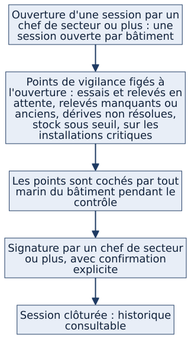
Exemple fictif : le matelot Durand, avant un départ.
Les points ne sont pas saisis à la main : Matrix les calcule une seule fois, à l'ouverture.
Sur les installations critiques du bâtiment :
| Famille | Ce qui déclenche un point |
|---|---|
| Essai ou relevé en attente | Une maintenance non terminée d'une installation critique (triée par échéance) |
| Relevé technique manquant ou ancien | Heures de marche, vibration ou isolement non à jour |
| Dérive détectée non résolue | Une alerte de dérive (RF §14) encore active |
| Pièce de stock sous seuil | Une pièce de stock au-dessous de son seuil minimal (RF §16) |
La liste est figée : même si la situation évolue pendant la préparation, l'état constaté à l'ouverture reste la référence. Une session sans point est possible (« aucun point de vigilance détecté »).
| Action | Qui (état B) | Règle |
|---|---|---|
| Cocher un point | Tout marin du bâtiment (à bord) | Session encore ouverte ; le commandant en second consulte sans cocher ni signer |
| Ouvrir une session | Chef de secteur ou plus | Une seule session ouverte par bâtiment |
| Signer et clôturer | Chef de secteur ou plus | Confirmation explicite obligatoire ; sans elle, rien n'est enregistré et le refus est tracé |
Une fois signée, la session est clôturée et figée : plus aucune modification. La signature enregistre le signataire et la date et est auditée. L'administrateur général n'ouvre pas de session (il n'est rattaché à aucun bâtiment) mais consulte l'historique de toute la flotte.
L'équipage à terre ne voit pas les points issus des occurrences de maintenance (hors commandement).
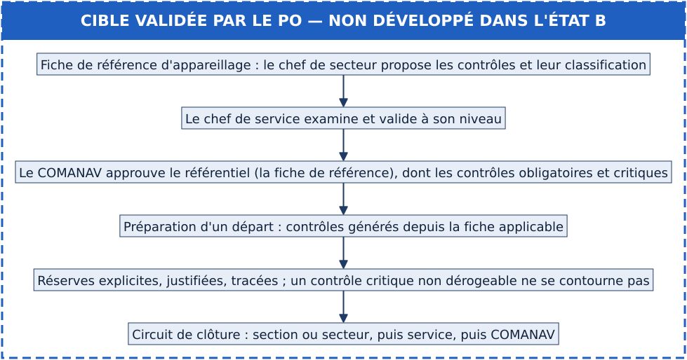
Décisions du PO (dossier V1.2) :
DEC-APP-01 : chaque départ génère des contrôles à partir de fiches de référence applicables.DEC-APP-02 : circuit section ou secteur → service → COMANAV.DEC-APP-14 (principe validé par le PO, conservé comme fonctionnement cible) : le chef de secteur propose les contrôles et leur classification (obligatoire, critique) ; le chef de service examine la proposition ; le COMANAV approuve le référentiel, y compris les contrôles obligatoires et critiques. ◯ La compatibilité avec les procédures opérationnelles du bord n'est pas vérifiée : à confirmer avant tout développement (lot L23).DEC-APP-03, DEC-APP-04, DEC-APP-05, DEC-APP-06, DEC-APP-07, DEC-APP-08, DEC-APP-09 : une modification de référence suit son propre circuit d'approbation ; les préparations ouvertes sont actualisées (réponses toujours valables conservées, contrôles modifiés ou ajoutés rouverts, supprimés archivés, signatures affectées invalidées) ; les préparations clôturées gardent leur version historique.DEC-APP-10, DEC-APP-12 : les contrôles obligatoires sont traités avant validation ; un contrôle critique non dérogeable ne se contourne pas.DEC-APP-11 : une réserve est explicite, justifiée et tracée, dans les limites des règles de sécurité.| Aujourd'hui | Cible | |
|---|---|---|
| Origine des contrôles | Calculés à partir de l'état de l'installation critique | Fiches de référence approuvées |
| Classification | Aucune (tous équivalents) | Obligatoire, critique, non dérogeable |
| Circuit de signature | Une signature : chef de secteur ou plus | Section/secteur → service → COMANAV |
| Réserves | Absentes | Explicites, justifiées, tracées |
| Évolution d'une référence | Sans objet | Actualisation, réouverture, invalidation |
| Autorisation d'appareiller | Jamais délivrée par Matrix | Idem (DEC-APP-13) |
◯ À confirmer. Qui, concrètement, valide la classification « critique » et comment elle s'accorde aux procédures du bord (DEC-APP-14) — aucune règle n'est inventée ici.
| Module | Lien |
|---|---|
| Installations critiques (ch. 11) | Source des points : relevés, critique |
| Maintenance (ch. 12) | Occurrences non terminées, dérives |
| Logistique (ch. 13) | Pièces sous seuil |
| Formations (ch. 14) | Cible : qualifications des postes critiques |
| Accueil, pilotage (ch. 6) | Entrée « Prêt à appareiller » |
| Quarts (ch. 8) | ◯ Le mode du bâtiment (mer/quai) n'intervient pas dans l'ouverture d'une session |
dashboard (rejoués sur l'état B avec les six autres paquets de l'ensemble 3 : 1 491 tests OK, 1 ignoré ; rapport de lot conservé dans les archives).Sources (état B)., ; décisions DEC-APP-01, DEC-APP-02, DEC-APP-03, DEC-APP-04, DEC-APP-05, DEC-APP-06, DEC-APP-07, DEC-APP-08, DEC-APP-09, DEC-APP-10, DEC-APP-11, DEC-APP-12, DEC-APP-13, DEC-APP-14 (dossier V1.2). Références dans la partie restreinte du dossier.
Les tableaux ci-dessous sont générés depuis le registre central : le statut et l'état de chaque entrée y sont tenus ; cette fiche n'en donne aucun autre. Une proposition 🟣 n'est pas une décision ; « non développée » signifie seulement que le lot correspondant n'est pas livré dans l'état B.
| Identifiant | Sujet | Profils concernés | Statut |
|---|---|---|---|
| A17 | Préparation à l'appareillage : fiche de référence et circuit | chefs de secteur ; chefs de service ; COMANAV | documenté, non arbitré (pas une autorisation de modifier le logiciel) |
| B2 | Commandant en second | commandant en second | à confirmer par le PO |
| B4 | Accostage et appareillage | COMAEQ ; commandants | à confirmer par le PO |
| D4 | Autorité de classification « critique » d'un contrôle d'appareillage | — | 🟣 à valider par le PO — pas une décision |
| Décision | Règle validée par le PO | État dans l'état B |
|---|---|---|
DEC-APP-01 |
Chaque départ génère des contrôles à partir des fiches de référence applicables. | non développée (L23) |
DEC-APP-02 |
Circuit : section ou secteur → service → COMANAV. | non développée (L23) |
DEC-APP-03 |
Les modifications des références suivent leur propre circuit d'approbation. | non développée (L23) |
DEC-APP-04 |
Référence approuvée modifiée : les préparations ouvertes sont actualisées. | non développée (L23) |
DEC-APP-05 |
Les réponses toujours valables sont conservées. | non développée (L23) |
DEC-APP-06 |
Les contrôles modifiés ou ajoutés sont rouverts. | non développée (L23) |
DEC-APP-07 |
Les contrôles supprimés sont archivés. | non développée (L23) |
DEC-APP-08 |
Les signatures affectées sont invalidées. | non développée (L23) |
DEC-APP-09 |
Les préparations clôturées conservent leur version historique. | non développée (L23) |
DEC-APP-10 |
Les contrôles obligatoires sont traités avant validation. | non développée (L23) |
DEC-APP-11 |
Les réserves sont explicites, justifiées et tracées, dans les limites des règles de sécurité. | non développée (L23) |
DEC-APP-12 |
Les contrôles critiques non dérogeables ne peuvent pas être contournés. | non développée (L23) |
DEC-APP-13 |
Matrix ne délivre pas l'autorisation opérationnelle d'appareiller. | réalisée (L23) |
DEC-APP-14 |
Fiche de référence d'appareillage : le chef de secteur propose les contrôles et leur classification (obligatoire, critique) ; le chef de service examine et valide la proposition à son niveau ; le COMANAV approuve la fiche, notamment les contrôles obligatoires et critiques. | non développée (A17) |
Écran de référence : GU §12 (captures de l'état B sur une instance de démonstration).
| Principe | Ce que cela veut dire |
|---|---|
| Dense en fonctions, calme à l'écran | Un marin ouvre Matrix, comprend sa situation, voit ce qui demande son attention et sait quoi faire. Rien n'expose toute la complexité en permanence. |
| PC fixe d'abord | Matrix s'utilise au clavier et à la souris sur les postes du réseau du bâtiment. Tablette et QR code sont des options : aucun parcours n'en dépend. |
| Maintenance « papier puis saisie » | La fiche s'imprime, l'entretien se fait sur place, la saisie suit sur un PC : la fiche imprimable et la saisie en grille sont des livrables de premier plan. |
| Poste partagé | Plusieurs marins se relaient sur la même machine : on voit toujours qui est connecté, on se déconnecte en un clic, un travail en cours n'est jamais perdu. |
| Poste ancien | Référence 1366 × 768, pages légères, pas d'animation coûteuse ni de bibliothèque JavaScript lourde. |
| Hors Internet | Polices, icônes, graphiques et calendrier sont embarqués : aucune ressource distante. |
| Aide progressive | L'explication détaillée s'ouvre à la première visite, puis laisse une interface plus calme ; elle se rouvre à tout moment. On ne retire jamais une information réglementaire, une alerte critique ou une confirmation de sécurité. |
| Droits côté serveur | L'interface adapte ce qu'elle montre, mais c'est toujours le serveur qui décide : masquer un bouton n'est pas une protection. |
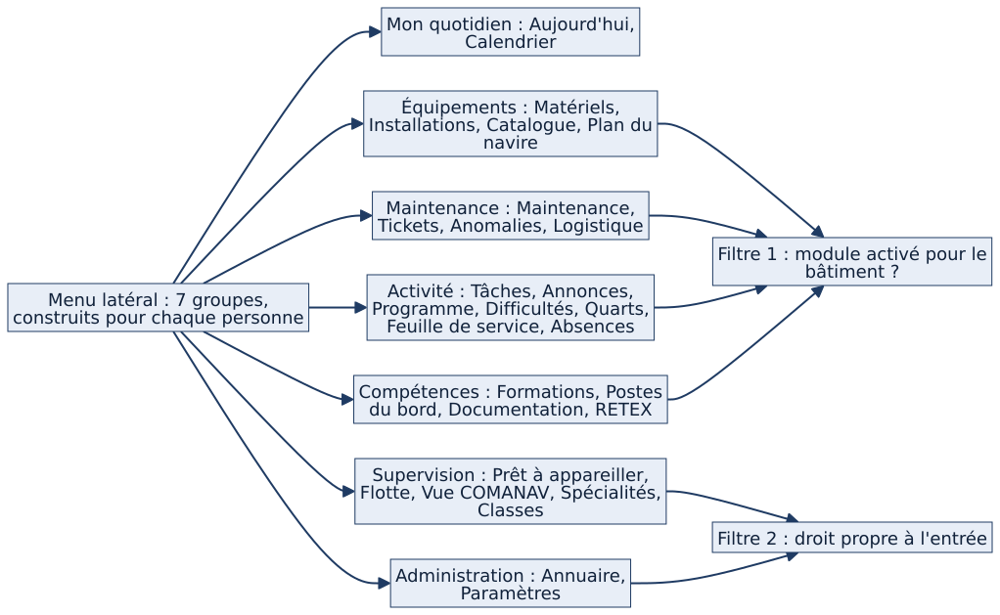
Le menu latéral compte sept groupes : Mon quotidien, Équipements, Maintenance, Activité, Compétences, Supervision, Administration. Il est calculé pour chaque personne :
Chaque marin replie ou déplie les groupes ; ce choix est enregistré dans son profil (pas dans le navigateur), retrouvé à la reconnexion, et ne donne ni ne retire aucun droit. Au premier affichage seul « Mon quotidien » est déplié. La barre latérale elle-même peut être repliée.
◯ Le PO a relevé en recette un menu de 24 entrées pour un équipier à 1366 × 768 (parfois coupé). Le regroupement en sept groupes répond à cette observation ; la recette sur poste réel n'a pas été rejouée ici.
| Besoin | Réponse de l'interface |
|---|---|
| Créer quelque chose de complexe (matériel, anomalie, liste) | Assistant en quelques étapes, champs pré-remplis |
| Saisir beaucoup de lignes de même nature (relevés, exemplaires de matériel, compte rendu en série) | Grille façon tableur : Tab et flèches, collage depuis Excel (colonnes séparées par tabulation) |
| Ne pas perdre un travail commencé | Brouillons enregistrés automatiquement, repris plus tard ; conservés 30 jours par défaut (réglable, 0 = jamais purgés), taille bornée |
| Éviter une erreur lourde | Confirmation explicite avant un acte critique (remise en service, clôture d'une installation critique, signature d'appareillage) : sans elle, rien n'est écrit et le refus est tracé |
| Corriger après coup | Saisie d'origine conservée, motif obligatoire (RF §15) |
| Un fichier à joindre | Contrôle du type et de la taille (20 Mo par défaut, réglable) ; fichiers servis uniquement après contrôle des droits |
🟢 Ce qui existe. Pages à mise en page fluide (Bootstrap) ; le cahier UX demande des zones d'action d'au moins 44 px sur les écrans opérationnels (◯ non mesuré) ; QR code imprimable sur les fiches d'équipement qui ouvre le contrôle du jour, manifeste d'application web (nom, icônes, affichage « application ») et service worker dédié aux notifications push. Le Web Push demande une connexion HTTPS (ou le poste local) et des clés VAPID ; sans elles il est simplement désactivé.
🟢 Ce qui n'existe pas. Aucune application native ; aucun mode hors-ligne : le service worker ne met rien en cache et ne rejoue aucune saisie. Sans réseau, une saisie n'est pas enregistrée.
◯ Ce qui n'a pas été vérifié. L'affichage sur téléphone et tablette réels, Safari sur iPhone, Firefox, lecteurs d'écran (VoiceOver, NVDA), Windows et l'impression physique : la checklist la checklist de compatibilité du dépôt demande de noter ces contrôles « non effectué » quand ils ne sont pas rejoués ; ils ne le sont pas dans ce dossier.
Position du PO : le PC fixe reste le support principal ; la tablette et le scan de QR code sont des options.
Exemples fictifs, données de démonstration uniquement.
Le matelot (équipier). Il ouvre Matrix, lit en cinq secondes « À faire » (le retard d'abord), ouvre sa tâche, la met à jour ; il trouve son prochain quart dans « Mes quarts » et son prochain tour dans « Mes tours de service » ; il signale une anomalie depuis la fiche d'un équipement ; il ferme sa session en un clic.
Le chef de secteur. Il voit ses retards de maintenance et les validations qui l'attendent dans « Supervision », assigne un ticket, visa une fiche, ouvre une session d'appareillage, consulte la Vue flotte de son périmètre ; chaque chiffre ouvre le dossier filtré.
L'acteur à terre (responsable de spécialité ou de classe). Il choisit un bâtiment dans le sélecteur, consulte une carte par bâtiment, commente sans valider ; il ne voit que la lecture seule.
L'administrateur d'unité (Paramètres). Il règle les seuils de rôle de son bâtiment, active les modules, gère la relève de l'équipage (RF §5 et RF §6).
La page Paramètres est découpée en onglets réservés selon le rôle :
| Onglet | Qui | Contenu |
|---|---|---|
| Notification quotidienne | Chaque marin | Heures de « Ma journée » du matin et du soir |
| Sécurité (seuils de rôle) | Administrateur d'unité | Seuils de rôle des 35 actions, par bâtiment (RF §6, annexe B) |
| Modules | Commandement (seuil module_gestion) |
Activer ou désactiver un des 14 modules pour son bâtiment |
| Équipage | Commandant, commandant en second, administrateur d'unité d'un bâtiment à double équipage | Relève, fuseau, génération de la passation (RF §5) |
| Utilisateurs et responsables | Rôle habilité (seuil responsabilite_) |
Désignation des responsables de spécialité et de classe |
| Référentiels, navires, hiérarchie, journal | Comptes techniques (administrateur général) | Grades, spécialités, fonctions, unités et hiérarchie, bigrammes, paramètres des tâches, annonces et passation, paramètres de vibration, journal |
Principe du projet : configuration plutôt que code (durée d'un délai d'inactivité, conservation des brouillons, taille des fichiers, seuils de rôle, modules). L'archivage remplace la suppression pour les unités (RF §5).
Orientation validée par le PO (29/10/2026) : fiable, simple, rapide, professionnel, visuellement désirable, sans effet décoratif au détriment du travail quotidien.
◯ Le design system (logo, charte graphique) vit dans le sous-module design/, vide dans l'environnement de rédaction : sa description vient des documents du dépôt, pas du sous-module.
Les pages Notion de recette consignent des observations d'un seul passage, sur la V1.1 tranche 1 : barre supérieure jugée lourde (PO-01), zone vide sur l'accueil (PO-03), reprise de brouillon d'anomalie en erreur 404 (PO-04), carte « Mes services de garde » à rebaptiser « Mes tours de service » (PO-05), cartes non cliquables (PO-06), graphiques peu actionnables (PO-07, PO-08), textes d'accompagnement envahissants (PO-09), fiches de maintenance fictives trop vides (PO-10, PO-21), notifications verbeuses (PO-13), Web Push inactif dans la démonstration isolée (PO-14), notifications lues encore visibles (PO-15), page des quarts peu claire pour un équipier (PO-16).
Statut : ce sont des constats qualifiés « à décider », pas des règles. Le dossier ne les présente ni comme corrigés ni comme non corrigés dans l'état B ◯ : seuls ceux qui ont un écart au registre sont suivis (A11 : libellé « Mes tours de services »). Le défaut de droits PO-17 (un matelot pouvait créer une feuille de service) est traité au RF §11 : la rédaction est confiée à un rédacteur désigné.
DEC-UX-01, DEC-UX-02, DEC-UX-03, DEC-UX-04, DEC-UX-05, DEC-UX-06, DEC-UX-07, DEC-UX-08, DEC-UX-09, DEC-UX-10, DEC-UX-11).design/ non initialisé.Sources (état B)., ; ; Notion « Cap UX/UI », « Recette UX V1.1 ». Références dans la partie restreinte du dossier.
Les tableaux ci-dessous sont générés depuis le registre central : le statut et l'état de chaque entrée y sont tenus ; cette fiche n'en donne aucun autre. Une proposition 🟣 n'est pas une décision ; « non développée » signifie seulement que le lot correspondant n'est pas livré dans l'état B.
| Identifiant | Sujet | Profils concernés | Statut |
|---|---|---|---|
| A11 | Libellé « Mes tours de service » | marins | documenté, non arbitré (pas une autorisation de modifier le logiciel) |
| D5 | Favoris épinglés, recherche de personnes limitée, formulaires RH configurables | — | 🟣 à valider par le PO — pas une décision |
| D6 | Observations de recette PO-01 à PO-16, PO-21 (ergonomie, accueil, notifications, fiches de démonstration) | — | 🟣 à valider par le PO — pas une décision |
| NE-05 | Codes de refus 404 et 403 hétérogènes | marins | documenté, non arbitré (pas une autorisation de modifier le logiciel) |
| Décision | Règle validée par le PO | État dans l'état B |
|---|---|---|
DEC-UX-01 |
À l'ouverture : tâches du jour, tours de service, actions en attente, urgences, informations utiles. | partielle (L24) |
DEC-UX-02 |
Éviter grands espaces vides et défilement inutile ; réduire les textes explicatifs permanents ; cartes cliquables. | non développée (L24) |
DEC-UX-03 |
Recherche globale centrée et utile. | non développée (L24) |
DEC-UX-04 |
Permettre d'épingler des entrées du menu. | non développée (L24) |
DEC-UX-05 |
Afficher clairement les tours de service à venir, à valider et effectués. | non développée (L24) |
DEC-UX-06 |
Notifications lues conservées dans le centre mais retirées de la liste principale. | non développée (L24) |
DEC-UX-07 |
Corriger les boutons inactifs et les parcours de navigation défaillants. | non développée (L24) |
DEC-UX-08 |
Terminologie « Mes tours de services ». | écart (A11) (L24) |
DEC-UX-09 |
Recherche de personnes : informations professionnelles pertinentes, sous réserve des droits. | non développée (L24) |
DEC-UX-10 |
Interface adaptée aux utilisateurs expérimentés, sans aides envahissantes ; aide progressive réactivable. | non développée (L24) |
DEC-UX-11 |
Le calendrier reste un élément central. | non développée (L24) |
Feuille de route (remplacé par un tableau)
| Élément | Contenu |
|---|---|
A |
Phase A — Risques critiques : L01 à L05 |
B |
Phase B — Autorisations et circuits : L06 à L13, L21 |
C |
Phase C — Circuits des tâches : L14 à L18 |
D |
Phase D — Maintenance, appareillage, feuille de service : L19, L20, L22, L23, L26, L27 |
E |
Phase E — Ergonomie, mutation, dette : L24, L25, L28 |
L |
Livrés sur l'état B : L01, L05, L02, L03 — L04 non lancé |
| De | Condition ou passage | Vers |
|---|---|---|
| Phase A — Risques critiques : L01 à L05 | — | Phase B — Autorisations et circuits : L06 à L13, L21 |
| Phase B — Autorisations et circuits : L06 à L13, L21 | — | Phase C — Circuits des tâches : L14 à L18 |
| Phase C — Circuits des tâches : L14 à L18 | — | Phase D — Maintenance, appareillage, feuille de service : L19, L20, L22, L23, L26, L27 |
| Phase D — Maintenance, appareillage, feuille de service : L19, L20, L22, L23, L26, L27 | — | Phase E — Ergonomie, mutation, dette : L24, L25, L28 |
| Phase | Lots | Objet |
|---|---|---|
| A — Risques critiques | L01 à L05 | Verrou de démonstration, archivage, suppression sûre, désactivation des comptes, configuration de production |
| B — Autorisations et circuits | L06 à L13, L21 | Administrateur technique, rattachement, suppléance, visas, échanges, RETEX, structure du bord, transfert, sécurité d'accès |
| C — Circuits des tâches | L14 à L18 | Priorités, validation, coordinateur, tâche bloquée, qualifications |
| D — Maintenance, appareillage, feuille de service | L19, L20, L22, L23, L26, L27 | Périodicité, durée, anomalies, appareillage, outillage, feuille |
| E — Ergonomie, mutation, dette | L24, L25, L28 | Ergonomie, mutation de personnel, dette documentaire et CI |
Principes du plan : risques critiques d'abord, puis autorisations et circuits, puis ergonomie ; chaque lot assez petit pour être testé, relu et validé seul ; aucun lot ne mélange sécurité et fonctionnalité nouvelle ; toute migration est annoncée.
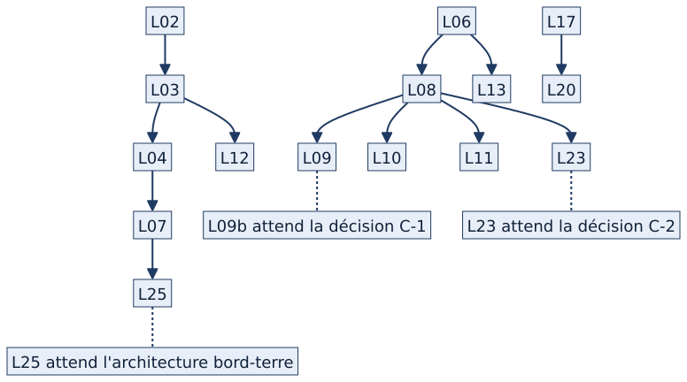
Trois lots attendent une décision ou une architecture externe : L25 (mutation de personnel) attend l'architecture bord–terre ; L09b (visas par fonction) attend la décision C-1 ; L23 (appareillage) attend la décision C-2 et la conformité aux procédures du bord.
| Lot | En clair | Décisions | État |
|---|---|---|---|
| L01 | Les commandes de données fictives refusent de s'exécuter sur une vraie base ; mots de passe de démonstration non prévisibles | DEC-PRE-06 |
🟢 Livré (B), non fusionné — DT §22 |
| L05 | L'application refuse de démarrer en production avec une clé ou un mot de passe de base trop faibles | RT-04 |
🟢 Livré (B) — DT §22 |
| L02 | Les unités s'archivent (et se réactivent) au lieu de se supprimer | DEC-DRT-05, DP-13 |
🟢 Livré (B) — RF §5 |
| L03 | Une unité référencée ne se supprime plus (refus 409 avec le détail) | DEC-DRT-05, DP-13 |
🟢 Livré (B) — RF §5, DT §19 |
| L04 | Les comptes se désactivent au lieu de se supprimer ; l'historique reste à l'ancien bâtiment | DEC-MUT-06, DEC-MUT-07, DEC-DRT-05 |
🔵 Non lancé (dépend de L03) |
| Lot | En clair | Décisions | Chapitres actuels |
|---|---|---|---|
| L06 | L'administrateur technique ne fait plus d'acte métier (visa, validation, publication) | DEC-DRT-02 |
5 (écart A1) |
| L07 | Un compte au rattachement incomplet n'accède pas aux informations opérationnelles sans autorisation explicite et tracée ; aucun accès du seul fait du grade | DEC-DRT-06 |
5 |
| L08 | Suppléance explicite : désignée, activée par une autorité, temporaire, limitée à une fonction et un périmètre, tracée | DEC-SUP-01, DEC-SUP-02, DEC-SUP-03, DEC-SUP-04, DEC-SUP-05, DEC-SUP-06, DEC-SUP-07 |
5, 8 (points B1) |
| L09 | Visas par fonction et listes publiées (3 sous-lots) ; L09b attend la décision C-1 | DEC-DRT-01, DEC-FDS-02, DEC-FDS-05 |
8 (écart A3) |
| L10 | Les échanges de tours sont décidés par le COMAEQ ou son suppléant habilité ; le BSC ou le chef de liste instruit | décision S3 | 8 (écart A2) |
| L11 | Circuit RETEX hiérarchique : auteur → chef de section → chef de secteur → chef de service ; correction motivée avec nouvelle version ; la transmission à un organisme reste un acte distinct | DEC-RTX-01, DEC-RTX-02, DEC-RTX-03, DEC-RTX-04 |
15 (écarts A15, A16) |
| L12 | La structure du bord (services, secteurs, sections) est tenue par une fonction habilitée | DEC-ORG-02, DP-13 |
4 |
| L13 | Transfert de matériel entre secteurs et entre services, avec approbations | DEC-MAT-01, DEC-MAT-02, DEC-MAT-03, DEC-MAT-04 |
11 (écart A18) |
| L21 | Sécurité d'accès, avec les SIC (HTTPS, limitation des connexions) | DEC-PRE-06, P03 |
22, 23 |
| Lot | En clair | Décisions | Chapitres actuels |
|---|---|---|---|
| L14 | Trois priorités : normale, haute, urgente ; une priorité posée par un chef de secteur ne peut être abaissée par un chef de section | DEC-TAC-04, DEC-TAC-05, DEC-TAC-06 |
10 (écart A13) |
| L15 | Validation facultative d'une tâche et statut « À valider » | DEC-CLO-01, DEC-CLO-02, DEC-CLO-03, DEC-CLO-04, DEC-CLO-05 |
10 |
| L16 | Tâche collective : coordinateur et rang des grades (valeurs à fournir par le PO : B7) | DEC-COL-02, DEC-COL-03, DEC-COL-04, DEC-COL-05 |
10 |
| L17 | Tâche bloquée et « Non réalisée — À reprogrammer » ; heure de fin de journée par bâtiment (B6, à confirmer) | DEC-BLQ-01, DEC-BLQ-02, DEC-BLQ-03, DEC-BLQ-04, DEC-BLQ-05 |
10 |
| L18 | Qualifications : information, pas blocage pour les tâches ordinaires ; exigences réglementaires pour les visas techniques et signatures | DEC-QUA-01, DEC-QUA-02, DEC-QUA-03, DEC-QUA-04 |
14 |
| Lot | En clair | Décisions | Chapitres actuels |
|---|---|---|---|
| L19 | Périodicités nommées (hebdomadaire à quinquennale), échéance calculée depuis la réalisation effective | DEC-PER-01, DEC-PER-02, DEC-PER-03, DEC-PER-04 |
12 (A21) |
| L20 | Durée estimée actualisée (option B) ; propositions techniques non validées | DEC-DUR-01, DEC-DUR-02, DEC-DUR-03, DEC-DUR-04, DEC-DUR-05, DEC-DUR-06, DEC-DUR-07 |
12 |
| L22 | Anomalies, interventions et ticket correctif | DEC-ANO-01, DEC-ANO-02, DEC-ANO-03, DEC-ANO-04, DEC-ANO-05 |
12 |
| L23 | Préparation à l'appareillage : fiches de référence, circuit chef de secteur → chef de service → COMANAV, contrôles obligatoires et critiques, réserves ; attend C-2 ; Matrix ne délivre pas l'autorisation d'appareiller | DEC-APP-01, DEC-APP-02, DEC-APP-03, DEC-APP-04, DEC-APP-05, DEC-APP-06, DEC-APP-07, DEC-APP-08, DEC-APP-09, DEC-APP-10, DEC-APP-11, DEC-APP-12, DEC-APP-13, DEC-APP-14 |
16 (écart A17) |
| L26 | Remarques d'outillage et d'instruction visibles du chef de secteur, sans modification automatique de la fiche | DEC-OUT-01, DEC-OUT-02, DEC-OUT-03, DEC-OUT-04, DEC-OUT-05 |
12 |
| L27 | Feuille de service : réimpression avec versionnement, alerte de remplacement, fraction à quai | DEC-FDS-06, 08, 09 |
8 (écart A12) |
| Lot | En clair | État |
|---|---|---|
| L24 | Ergonomie, en petits lots indépendants : liens et boutons morts, titres d'onglet, « Mes tours de services », niveau « Critique », archivage des notifications lues (DEC-UX-01, DEC-UX-02, DEC-UX-03, DEC-UX-04, DEC-UX-05, DEC-UX-06, DEC-UX-07, DEC-UX-08, DEC-UX-09, DEC-UX-10, DEC-UX-11) |
🔵 Non lancé — RF §20 |
| L25 | Mutation de personnel : formations et qualifications suivent le marin, l'historique d'activité reste à l'ancien bâtiment, les compteurs d'équité ne suivent pas (DEC-MUT-01, DEC-MUT-02, DEC-MUT-03, DEC-MUT-04, DEC-MUT-05) |
🔵 Reporté : attend l'architecture bord–terre |
| L28 | Dette documentaire et CI hors Internet, tests des modules secondaires (documentation, RETEX, postes, programme) | 🔵 Non lancé — DT §23 |
Ces points ont été proposés ou relevés, pas décidés ; ils ne sont rattachés à aucun lot.
| Proposition | Contenu | Garde-fous demandés |
|---|---|---|
| Ticket de suivi pour une installation non conforme | Créer un ticket, comme pour le matériel mobile, quand une installation est déclarée non conforme (aujourd'hui seul le matériel mobile en déclenche un) | Un ticket ne clôture jamais automatiquement une anomalie et n'autorise jamais une remise en service (RF §15) |
| Sortie de l'état « En validation » | Une occurrence non conforme peut rester indéfiniment « En validation » sans alerte de retard (écart A20) ; la règle de sortie reste à décider | Aucune règle inventée dans ce dossier |
| Transmission d'un RETEX à un organisme | Destinataires, canaux, responsabilités à confirmer avec les procédures métier ; le marquage « flotte » n'est pas une transmission | — |
| Autorité de classification « critique » d'un contrôle d'appareillage | Le principe DEC-APP-14 est validé ; la compatibilité avec les procédures du bord est à confirmer avant tout développement |
— |
| Dépendance | Ce qu'elle bloque |
|---|---|
| Architecture bord–terre (réservée aux SIC) | L25 (mutation), toute synchronisation, la phase 7 |
| Experts SIC | L21 (HTTPS, limitation de connexions), sauvegarde et supervision (DT §22) |
| Décisions C-1 et C-2 | L09b et L23 |
| Procédures opérationnelles du bord | L23 (classification des contrôles), horaires propres à une unité |
| Validation SSI et GO du PO | Tout déploiement opérationnel, toute donnée réelle |
DEC-… citées sont validées par le PO.Sources. Dossier V1.2 (, comptes rendus L01, L05, L02, L03) ; Notion « Feuille de route », « Cahier des charges », « 03 — Formation », « 07 — SIC », « Cap UX/UI » ; le registre des écarts (partie restreinte du dossier).
| État | Contenu | Où |
|---|---|---|
| A | V1 FANLAB, fusionnée dans la branche de référence le 28/10/2026 | Branche de référence (publiée) |
| B | A + V1.1 + lots L01, L05, L02, L03, non fusionnés | Version de développement du 11/11/2026 |
Le dossier décrit l'état B, qui est le plus avancé et celui que le PO a demandé de documenter ; l'état A sert de comparaison. Rien de B n'est dans la branche de référence.
Entre A et B : 127 commits, dont 117 pour la V1.1 et 10 pour les quatre lots ; environ 422 fichiers modifiés, 21 000 lignes ajoutées et 2 600 supprimées (ordre de grandeur, documentation comprise).
| Date | Jalon | Ce que cela a apporté |
|---|---|---|
| 03/09/2026 | Ancien découpage en six phases (fondation, calendrier, maintenance préventive et corrective, formation, matériel) | Statuts établis à partir de preuves dans le code ; calendrier et formation jugés terminés |
| 06/09/2026 | Nouvelle feuille de route « Matrix 2.0 » : huit phases (0 à 7) | Elle remplace l'ancien découpage pour la suite ; l'historique est conservé |
| 10/10/2026 | PR n° 6 (refonte de l'accueil, double équipage, catalogue, maintenance, planning, absences, feuille de service, notifications) et PR n° 7 (travail local et intégration) fusionnées | la branche de référence ; la « passation automatique » et l'« organisation miroir » sont retirées de la branche de référence et différées |
| 09–10/10/2026 | Cap de démonstration : « une semaine dans un service » (organiser → affecter → consulter → exécuter ou signaler → suivre) | Priorité à la valeur quotidienne ; la génération automatique des tours est abandonnée |
| 13–27/10/2026 | Recette V1, sécurité des périmètres, fiabilité (annonces, quarts, stock), PostgreSQL, feuille de service (escalade, historisation, rectificatif, suivi), confirmations des actes critiques, cahier UX | Chaîne feuille de service et échanges ; durcissement |
| 21–27/10/2026 | Consolidation de la V1 FANLAB | Branche d'intégration de la branche de référence |
| 28/10/2026 | V1 FANLAB fusionnée dans la branche de référence (PR n° 16) — état A | la branche de référence |
| 28/10/2026 | Priorité sécurité décidée par le PO : garde-fou des commandes de démonstration | Donnera L01 |
| 29/10/2026 | Cap UX/UI « Naval Premium » : décisions produit ; GO démonstration encadrée, NO GO déploiement opérationnel | Cadre de la V1.1 |
| 31/10/2026 | V1.1 tranche 1 : prototype Naval Premium ; protocole de recette UX ; observations du PO PO-01 à PO-21 | Kit de démonstration figé |
| 01/11/2026 | Correctifs métier et UX | Ordre de travail « correctifs métier et UX » du 01/11 (la correction des droits de la feuille de service, PO-17, y est cadrée) |
| 05/11/2026 | V1.1 ; audit général de la V1.1 | Base de tous les lots ; source du dossier V1.2 |
| 10–11/11/2026 | Dossier V1.2 : 125 décisions du PO, 47 anomalies, plan en 28 lots | Document de décision (ne contient pas de code) |
| 10/11/2026 | L01 — verrou des commandes de démonstration | Voir la section « Ce que chaque lot a changé » |
| 10/11/2026 | L05 — configuration de production minimale | Voir la section « Ce que chaque lot a changé » |
| 11/11/2026 | L02 — archivage effectif des unités | Voir la section « Ce que chaque lot a changé » |
| 11/11/2026 | L03 — suppression sûre des unités — état B | — |
| 11/11/2026 | Dossier technique G0 (cette documentation) | Branche documentaire dédiée |
Les quatre lots sont empilés (chacun construit sur le précédent) et aucun n'est fusionné.
| Lot | Anomalies traitées | Ce qui change pour le logiciel | Migration |
|---|---|---|---|
| L01 — verrou de démonstration | AUD-009 | Les quatre commandes de données fictives refusent de s'exécuter hors d'une base de démonstration marquée ; mots de passe de démonstration générés au hasard ou fournis ; réinitialisation qui les renouvelle ; adoption explicite des anciennes bases ; contrôle verifier_ ; recette Windows |
Oui (marqueur de l'instance de démonstration, migration 0022) |
| L05 — configuration de production | AUD-010, AUD-017 | Refus de démarrer en production avec une clé secrète trop faible ou un mot de passe de base trivial | Non |
| L02 — archivage effectif | AUD-028 | Les unités s'archivent et se réactivent ; les sélecteurs d'affectation ignorent les unités archivées ; refus de rattacher du matériel à une unité archivée ; correction des contournements restants (stock, listes de quarts, exigences de formation, catalogue, Paramètres) | Oui (champ d'archivage) |
| L03 — suppression sûre | AUD-020 | Une unité référencée ne se supprime plus : refus avec le détail, en web comme en API (409) ; protections contre les suppressions en cascade | Non (voir RF §5) |
Chaque lot a donné lieu à un compte rendu dans le dossier V1.2 , à une relecture et à des tests (suite complète : 3 963 tests OK, 20 ignorés, sur SQLite, au dernier lot).
Le dossier V1.2 ne contient aucun code applicatif : il consigne des décisions, des anomalies et un plan. Les anciennes recommandations remplacées par une décision du PO sont signalées (par exemple, la validation d'un RETEX « par le COMA référent d'abord » est caduque, remplacée par DEC-RTX-01).
Sources. Historique du dépôt (dates et jalons), dossier V1.2 (comptes rendus de lots), Notion « Feuille de route » (10/10/2026), « Cap UX/UI » (29/10/2026), « Recette UX V1.1 ». Détail des branches et des empreintes de version : DT §24.
| Terme | Définition dans Matrix |
|---|---|
| Grade | Rang de la personne. N'ouvre aucun droit métier à lui seul. |
| Fonction (exercée) | Ce que la personne fait réellement : chef de liste, BSC, COMAEQ, fonction de service ou de quart. Une fonction est un poste de service, pas un grade. |
| Rôle | Profil d'accès dans Matrix, parmi neuf, ordonnés du plus bas au plus haut : équipier, chef de section, chef de secteur, chef de service, état-major, commandant en second, commandant, administrateur d'unité, administrateur général. |
| Périmètre | Ce sur quoi la personne agit : sa section, son secteur, son service, son bâtiment. Déduit du rattachement le plus fin renseigné sur son profil. |
| Brevet / qualification / habilitation | Ce que la personne est qualifiée pour faire (formation). Informatif pour les tâches ordinaires ; les exigences réglementaires restent respectées pour les visas, fonctions de service et signatures officielles. |
| Terme | Définition |
|---|---|
| État A / État B | Deux états du code décrits par ce dossier : A = la version publiée (V1 FANLAB) ; B = la version de développement du 11/11/2026, référence principale, non fusionnée dans la branche de référence. L'identifiant technique de B figure dans le dossier technique. |
| 🟢 Actuel / 🔵 Cible / ◯ Non vérifié | Étiquettes du dossier : existe dans le code ; décidé par le PO mais non développé ; non confirmé. |
| Lot (L01 à L28) | Unité de travail du plan de développement V1.2. L01, L02, L03 et L05 sont livrés sur la branche B ; les autres ne sont pas lancés. |
| DEC-… | Identifiant d'une décision du PO dans le registre du dossier V1.2 (125 décisions). |
| Seuil de rôle | Rôle minimal requis pour une action ; réglable par bâtiment. |
| Module activable | Ensemble de pages que chaque bâtiment peut masquer, sans supprimer de données. 14 sont activables. |
| Unité | Bâtiment, école, centre de formation ou bureau : premier niveau de la hiérarchie. |
| Archiver / supprimer (une unité) | Archiver : retirer de la vie courante en conservant tout. Supprimer : possible seulement si plus rien ne la référence. |
| Relève (d'équipage) | Changement de l'équipage à bord d'un bâtiment à double équipage : proposée par un commandant, validée par l'autre équipage. |
| Synthèse de passation | Document généré à la relève, au profit de l'équipage montant. Activée par défaut, désactivable. |
| Journal d'audit | Enregistrement de qui a fait quoi, quand, sur quoi. |
| Proposer → valider → publier | Principe des modifications sensibles : la version publiée reste active jusqu'à validation de la suivante ; chaque version est conservée. |
| Soutien à terre | Personnel sans bâtiment (responsable de classe, de spécialité) : il consulte et commente, il n'écrit que dans les circuits prévus. |
| Équipage à terre | Équipage d'un bâtiment à double équipage qui n'est pas à bord : lecture seule du bâtiment, sa propre feuille de service. À ne pas confondre avec un organisme de soutien. |
| Chef de liste | Marin désigné pour préparer les listes de quarts et de gardes. Ce n'est pas un rôle. |
| Référent de formation | Marin habilité à valider les formations ; indépendant du rang. |
| Annuaire | Écran de gestion des comptes, visible à partir du commandant en second. |
| Réglages (Paramètres) | Écran de configuration, dont les onglets dépendent des droits. |
| Terme | Définition (source) |
|---|---|
| COMA (commandant adjoint) | Niveau d'organisation configurable : COMAEQ, COMOPS, COMANAV, COMAVIA selon le bâtiment. Chaque service est rattaché à son COMA compétent ; les circuits retrouvent ce rattachement au lieu d'un « état-major » générique. |
| COMAEQ | Vie à bord, service courant, coordination du personnel à quai ; adjoint protection ; conduite nautique en liaison avec le COMOPS. Vise la feuille de service. |
| COMOPS | Opérations, conduite des opérations, activité à la mer, analyse et comptes rendus opérationnels. |
| COMANAV | Conservation du bâtiment et de ses équipements ; adjoint sécurité ; gestion technique des matériels et logistique opérationnelle. |
| COMAVIA | Aviation et sécurité aérienne, sur les unités concernées. |
| Commandant en second | Remplaçant désigné du commandant ; coordonne les COMA et les services ; chef des organisations sécurité et protection. Vision globale dans Matrix ; écritures limitées aux responsabilités attribuées. |
| Chef de service / de secteur / de section | Encadrent respectivement un service, un secteur, une section. Le secteur est l'échelon responsable lorsqu'il n'y a pas de section. |
| BSC | Bureau du service courant : orchestration quotidienne et documents du service courant (prévisions d'activité, roulement du service, mouvements de personnel…). Prépare la feuille de service ; n'est pas une autorité parallèle au COMAEQ. |
| Service courant | Vie quotidienne du bord : personnel, mouvements, horaires, tâches collectives, gardes, consignes. |
| Tableau de service | Cadre permanent du service selon la situation (à quai, mer ou mouillage, escale). |
| Feuille de service | Déclinaison quotidienne qui complète le tableau de service ; point de convergence du jour J. Distincte des tableaux de quart à la mer. |
| Fraction de service | Ensemble de marins désignés pour assurer la garde du bâtiment sur une période. |
| Service à quai, garde, quart | Notions distinctes, à ne pas confondre. |
| OG | Officier de garde : délégation du commandant, responsabilité générale du bâtiment et de la fraction pendant la garde (exemple BRF). |
| OPSC | Officier de permanence service courant (exemple BRF). |
| OPN | Officier de permanence navire ; assure aussi la fonction DDI dans l'exemple BRF. |
| DDI | Directeur d'intervention (dans l'exemple BRF, exercé par l'OPN pendant le service). |
| Gradé de coupée, gradé mécanicien, gradé électricien, gradé sécurité | Fonctions de la fraction de service dans l'exemple BRF ; une fonction n'est pas un grade. Les gradés de coupée organisent eux-mêmes leurs relèves. |
| Adjudant de compagnie | Fonction attribuée à une personne : relais d'encadrement et de suivi de proximité. Reconnue dans le référentiel métier (31/10/2026) ; pas un grade ni un droit général ; non implémentée. |
| OSS | Officier de sécurité du service : fonction complémentaire auprès du chef de service (consignes, contrôles et formations de sécurité). À ne pas confondre avec l'officier de sécurité chargé du secret ni l'OSSI. Reconnue ; non implémentée. |
Ces définitions sont celles du PO (31/10/2026), prises pour références de travail, pas comme normes nationales. Les grilles varient selon l'unité et la situation.
| Terme | Définition |
|---|---|
| Quart à la mer | Roulement horaire distinct du service à quai. Régimes possibles : par bordées (2), par tiers (3), au quart (4), au cinquième (5), au sixième (6). |
| Sept créneaux | Journée organisée autour de 00–04, 04–08, 08–12, 12–15, 15–18, 18–20, 20–24, dans l'exemple documenté. |
| De musique | Nuit complète sans quart (20 h–08 h). Ce n'est ni un poste ni une quatrième plage de nuit. |
| Homme mort | Marin qui n'effectue aucun quart de la journée ni de la nuit sur le roulement considéré ; il peut avoir d'autres obligations. Pas synonyme de « musique ». Vocabulaire d'usage. |
| Tiers, bordée | Équipes qui se relaient dans un roulement (trois, deux). |
| Sigle | Signification (page Notion 12) |
|---|---|
| ALFAN | Autorité organique de la FAN : disponibilité, préparation, entraînement et qualification des unités de surface |
| ALFAN/EXPL | Exploitation, expertise métier et retour d'expérience selon domaines |
| ALFAN/ENT | Entraînement et préparation opérationnelle |
| DIVENT | Division entraînement d'ALFAN |
| SSF | Service de soutien de la flotte : pilotage du maintien en condition opérationnelle (MCO) naval |
| IRB | Ingénieur responsable bâtiment (SSF), au contact d'un ou plusieurs bâtiments ; correspond au « responsable de classe » de Matrix |
| ERO | Équipe responsable d'opération : conduite d'opérations MCO ou de familles de bâtiments |
| ERDT / IRDT | Équipe responsable de domaine technique ; responsable d'une ERDT : expertise transverse |
| SLM | Service logistique de la Marine : ateliers, rechanges, transports, soutien technique |
| CEPN | Centre d'expertise des programmes navals |
| CFPES | Centre de formation pratique et d'entraînement à la sécurité |
| FPS | Flottilles de perfectionnement du surfacier |
| DIRISI | Direction interarmées des réseaux d'infrastructure et des systèmes d'information |
| CMC2 | Centre Marine du combat cyber |
| SCA / commissariat | Soutien de l'homme, administration, vivres, finances, vie commune, soutien courant |
| CPPE | Commission permanente des programmes et des essais : sécurité maritime et caractéristiques militaires |
| DPM | Direction du personnel de la Marine : RH, parcours, affectations, compétences, formation |
| SIC | Systèmes d'information et de communication (cyber, réseaux) |
| Responsable de classe | Dans Matrix : correspond à l'IRB. Désignation à l'échelle de la flotte. |
| Responsable de spécialité | Rôle métier rattaché à ALFAN Exploitation ; n'englobe pas tous les bureaux d'ALFAN. |
| Organisme à terre | Cible : unité pouvant comprendre divisions, bureaux, cellules et personnel. Plus large qu'IRB et ALFAN Exploitation. |
| PÉPIN, CRAT, RAV/c | Messages et procédures officielles évoqués par le PO. Leur développé, leurs destinataires et leurs circuits de validation ne sont pas établis ; à ne pas déduire. |
| Circuit d'information | Règles de rédaction, contrôle, visas, transmission, diffusion, traitement, réponse et clôture. Distinct de l'organigramme. |
| Terme | Définition |
|---|---|
| MCO | Maintien en condition opérationnelle. |
| RETEX | Retour d'expérience. |
| GMAO | Gestion de maintenance assistée par ordinateur : un module de Matrix, pas Matrix. |
| NNO | Numéro de Nomenclature OTAN : référence militaire standard identifiant une pièce de façon univoque (libellé du champ du stock ; champ facultatif, texte libre). Présent sur le matériel, le catalogue et le stock. |
| VAPID / Web Push | Clés et mécanisme d'envoi de notifications au navigateur, auto-hébergés. |
| Mot de passe provisoire | Mot de passe généré à la réinitialisation, affiché une seule fois, à remplacer à la première connexion. |
| BRH (personnel BRH) | Personnel désigné pour un bâtiment, qui traite l'étape « BRH » des candidatures de formation (RF §17). Développement de l'acronyme : ◯ non précisé dans les sources lues. |
| CRAT | Type de demande cité par le PO avec le PÉPIN et le RAV/c ; son circuit officiel dépend de sa nature et reste à cartographier ; non développé dans Matrix. |
| Lot (Lnn) | Unité de développement proposée par le dossier V1.2 (28 lots, L01 à L28). Seuls L01, L05, L02 et L03 sont livrés, sur l'état B non fusionné (RF §21 et RF §22). |
| Écart (An) | Différence constatée entre une règle validée par le PO et le comportement du code ; consigné dans le registre des écarts de la partie restreinte. Un écart n'est pas un défaut à corriger sans décision. |
| Point à confirmer (Bn) | Règle cible qui n'est pas décidée : le dossier décrit le comportement actuel vérifié et ne l'invente pas. |
| Dossier vivant | Cible décrite pour la formation : une demande réunit acteurs, workflow, échéances, pièces jointes, fil de discussion et historique. Non développé. |
| Instance de démonstration | Base fictive isolée, marquée comme telle ; ne démarre jamais en production. |
| Prêt à appareiller | Session de préparation de l'appareillage (RF §19). Matrix n'autorise pas l'appareillage. |
Sources. Notion : « Organigramme et rôles », « 06 — Service courant, BSC, feuille de service et commissariat » (31/10/2026), « 07 — SIC, cyber, protection-défense et conformité », « 12 — Glossaire et responsabilités des organismes externes au bord » (21/10/2026), « 13 — Décisions Matrix et gouvernance fonctionnelle ». Code de l'état B : rôles et profils du code de l'état B. Ces pages Notion portent l'état « non vérifié ».
Les schémas ci-dessous figurent dans ce référentiel. D'autres schémas, plus détaillés, sont dans le dossier technique ; la liste complète de la refonte est dans les annexes consultables (table H1). Les schémas CIBLE portent un bandeau « CIBLE — non développé » dans l'image.
| N° | Titre | Fiche |
|---|---|---|
| S03 | Hiérarchie des unités | L'organisation : bâtiments, équipages, services, secteurs, sections |
| S04 | Relève d'équipage | L'organisation : bâtiments, équipages, services, secteurs, sections |
| S05 | Cycle de vie d'une unité | L'organisation : bâtiments, équipages, services, secteurs, sections |
| S06 | Décision d'une action | Comptes, fonctions, grades, rôles et autorisations |
| S07 | Qui gère qui | Comptes, fonctions, grades, rôles et autorisations |
| S13 | Composition de la page Aujourd'hui | Espace personnel, tableaux de bord, pilotage et rapports |
| S15 | Cycle des listes | Quarts, services à quai, gardes, feuille de service, échanges et absences |
| S16 | Échange de tours, fonctionnement actuel | Quarts, services à quai, gardes, feuille de service, échanges et absences |
| S17 | Échange de tours, fonctionnement cible | Quarts, services à quai, gardes, feuille de service, échanges et absences |
| S18 | Circuit de la feuille de service | Quarts, services à quai, gardes, feuille de service, échanges et absences |
| S19 | Des événements aux notifications | Communication : discussions, annonces, notifications et recherche |
| S20 | États d'une tâche : fonctionnement actuel | Tâches, difficultés signalées, programme du bâtiment et postes |
| S21 | États d'une tâche : fonctionnement cible | Tâches, difficultés signalées, programme du bâtiment et postes |
| S23 | Circuits de validation des fiches | Matériel et installations |
| S25 | Schéma S25 — États d'une échéance de maintenance (vue simplifiée) | Maintenance, anomalies et tickets correctifs |
| S26 | Schéma S26 — De l'anomalie au ticket, du ticket à la remise en service | Maintenance, anomalies et tickets correctifs |
| S28 | Circuits formation | Formations et qualifications |
| S29 | Versions de document | Documentation du bord et retours d'expérience (RETEX) |
| S30 | RETEX actuel | Documentation du bord et retours d'expérience (RETEX) |
| S31 | RETEX cible | Documentation du bord et retours d'expérience (RETEX) |
| S32 | Appareillage actuel | Préparation à l'appareillage |
| S33 | Appareillage cible | Préparation à l'appareillage |
| S34 | Navigation par rôle | Interface, ergonomie, parcours et poste de travail |
| S39 | Dépendances | Fonctionnement cible et feuille de route |